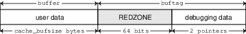
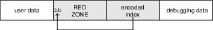

1. Preface
The Modular Debugger (MDB) is a highly extensible, general purpose debugging tool for the illumos Operating System. The Modular Debugger Guide describes how to use MDB to debug complex software systems, with a particular emphasis on the facilities available for debugging the illumos kernel and associated device drivers and modules. It also includes a complete reference for and discussion of the MDB language syntax, debugger features, and MDB Module Programming API.
| This illumos release supports systems that use the SPARC and x86 families of processor architectures: UltraSPARC, SPARC64, AMD64, Pentium, and Xeon EM64T. In this document the term “x86” refers to 64-bit and 32-bit systems manufactured using processors compatible with the AMD64 or Intel Xeon/Pentium product families. For supported systems, see the illumos Hardware Compatibility Lists. This document cites any implementation differences between the platform types. |
1.1. What’s New in MDB
Aug 2012 kmdb supports ttyc and ttyd
May 2012 Added tab completion support
Mar 2012 ::printf dcmd added
Aug 2011 Added 16-bit disassembler support
1.2. Who Should Use This Book
If you were a detective and were investigating at the scene of a crime, you might interview the witnesses and ask them to describe what happened and who they saw. However, if there were no witnesses or these descriptions proved insufficient, you might consider collecting fingerprints and forensic evidence that could be examined for DNA to help solve the case. Often, software program failures divide into analogous categories: problems that can be solved with source-level debugging tools, and problems that require low-level debugging facilities, examination of core files, and knowledge of assembly language to diagnose and correct. MDB facilitates analysis of this second class of problems.
MDB is most useful when you are programming a complex low-level software system such as an operating system. The MDB debugging framework allows you to construct your own custom analysis tools to aid in the diagnosis of these low-level problems. MDB also provides a powerful set of built-in commands that enable you to analyze the state of your program at the assembly language level.
1.3. Before You Read This Book
If you are not familiar with assembly language programming and debugging, Related Books and Papers provides references to materials that you might find useful.
You should disassemble various functions of interest in the programs you will be debugging in order to familiarize yourself with the relationship between your program’s source code and the corresponding assembly language code. If you are planning to use MDB for debugging illumos kernel software, read carefully Kernel Debugging Modules and Debugging With the Kernel Memory Allocator. These chapters provide more detailed information on the MDB commands and facilities provided for debugging illumos kernel software.
1.4. How This Book Is Organized
Modular Debugger Overview provides an overview of the debugger.
Debugger Concepts describes the MDB architecture and explains the terminology for the debugger concepts used throughout this book.
MDB Language Syntax describes the syntax, operators and evaluation rules for the MDB language.
Using MDB Commands Interactively describes the MDB interactive command-line editing facilities and output pager.
Built-In Commands describes the set of built-in debugger commands that are always available.
Execution Control describes the MDB facilities for controlling the execution of live running programs. This chapter is intended for application developers and device driver developers. Execution control features might also be useful for system administrators.
Kernel Execution Control describes the MDB facilities
for controlling the execution of the live operating system kernel that
are specific to kmdb. This chapter is intended for operating system
kernel developers and device driver developers.
Kernel Debugging Modules describes the set of loadable debugger commands that are provided for debugging the illumos kernel. This chapter is intended for users who intend to examine illumos kernel crash dumps and for kernel software developers.
Debugging With the Kernel Memory Allocator describes the debugging features of the illumos kernel memory allocator and the MDB commands provided to take advantage of these features. This chapter is intended for advanced programmers and kernel software developers.
Module Programming API describes the facilities for writing loadable debugger modules. This chapter is intended for advanced programmers and software developers who intend to develop custom debugging support for MDB.
appendix_title provides a reference for MDB command-line options.
appendix_title provides warnings and notes about using the debugger.
appendix_title provides a reference for adb
commands and their MDB equivalents. The adb command is implemented by
mdb.
appendix_title provides a reference for crash
commands and their MDB equivalents. The crash command is no longer
present in illumos.
1.5. Related Books and Papers
The following books and papers are recommended and related to the tasks that you need to perform:
-
Vahalia, Uresh. UNIX Internals: The New Frontiers. Prentice Hall,
-
ISBN 0-13-021034-0
-
-
Mauro, Jim and McDougall, Richard. Solaris Performance and Tools: DTrace and MDB Techniques for Solaris 10 and OpenSolaris. Prentice Hall PTR, 2006. ISBN 0-13-156819-8
-
Mauro, Jim and McDougall, Richard. Solaris Internals: Core Kernel Architecture. Prentice Hall PTR, 2000. ISBN 0-13-022496-5
-
The SPARC Architecture Manual, Version 9. Prentice Hall, 2000. ISBN 0–13–825001–4
-
AMD64 Architecture Programmer’s Manual. Advanced Micro Devices, 2006. Available at AMD Developer Central.
-
Pentium Pro Family Developer’s Manual, Volumes 1-3. Intel Corporation,
-
ISBN 1-55512-259-0 (Volume 1), ISBN 1-55512-260-4 (Volume 2) , ISBN 1-55512-261-2 (Volume 3)
-
-
Bonwick, Jeff, and Jonathan Adams. Magazines and Vmem: Extending the Slab Allocator to Many CPUs and Arbitrary Resourceso. Proceedings of the 2001 USENIX Annual Technical Conference,
-
Available at .
-
-
Bonwick, Jeff. The Slab Allocator: An Object-Caching Kernel Memory Allocator. Proceedings of the Summer 1994 Usenix Conference, 1994. ISBN 9–99–452010–5. Available at .
-
SPARC Assembly Language Reference Manual. Sun Microsystems, 2002.
-
x86 Assembly Language Reference Manual. Sun Microsystems, 2005.
-
Writing Device Drivers. Sun Microsystems, 2008.
-
STREAMS Programming Guide. Sun Microsystems, 2000.
-
Solaris 64-bit Developer’s Guide. Sun Microsystems, 2000.
-
Linker and Libraries Guide. Sun Microsystems, 2007.
Third-party URLs are referenced in this document and provide additional, related information.
| Sun is not responsible for the availability of third-party web sites mentioned in this document. Sun does not endorse and is not responsible or liable for any content, advertising, products, or other materials that are available on or through such sites or resources. Sun will not be responsible or liable for any actual or alleged damage or loss caused or alleged to be caused by or in connection with use of or reliance on any such content, goods, or services that are available on or through such sites or resources. |
1.6. Typographic Conventions
The following table describes the typographic conventions that are used in this book.
| Typeface | Meaning | Example |
|---|---|---|
|
The names of commands, files, and directories, and onscreen computer output |
Edit your Use
|
|
What you type, contrasted with onscreen computer output |
|
<aabbcc123> |
Placeholder: replace with a real name or value |
The command to remove a file is |
AaBbCc123 |
Book titles, new terms, and terms to be emphasized |
Read Chapter 6 in the User’s Guide. A cache is a copy that is stored locally. Do not save the file. Note: Some emphasized items appear bold online. |
1.7. Shell Prompts in Command Examples
The following table shows the default UNIX system prompt and superuser prompt for the C shell, Bourne shell, and Korn shell.
| Shell | Prompt |
|---|---|
C shell |
|
C shell for superuser |
|
Bourne shell and Korn shell |
|
Bourne shell and Korn shell for superuser |
|
2. Modular Debugger Overview
The Modular Debugger (MDB) is a general purpose debugging tool for the illumos operating system whose primary feature is its extensibility. This book describes how to use MDB to debug complex software systems, with a particular emphasis on the facilities available for debugging the illumos kernel and associated device drivers and modules. The book also includes a complete reference for and discussion of the MDB language syntax, debugger features, and MDB Module Programming API.
2.1. Introduction
Debugging is the process of analyzing the execution and state of a software program in order to remove defects. Traditional debugging tools provide facilities for execution control so that programmers can execute programs in a controlled environment and display the current state of program data or evaluate expressions in the source language used to develop the program. Unfortunately, these techniques are often inappropriate for debugging complex software systems such as:
-
An operating system, where bugs might not be reproducible and program state is massive and distributed
-
Programs that are highly optimized or have had their debug information removed
-
Programs that are themselves low-level debugging tools
-
Customer situations where the developer can only access post-mortem
MDB provides a completely customizable environment for debugging these programs and scenarios, including a dynamic module facility that you can use to implement your own debugging commands to perform program-specific analysis. Each MDB module can be used to examine the program in several different contexts, including live and post-mortem. The illumos OS includes a set of MDB modules that help you debug the illumos kernel and related device drivers and kernel modules. Third-party developers might want to develop and deliver their own debugging modules for supervisor or user software.
2.2. MDB Features
MDB provides an extensive collection of features for analyzing the illumos kernel and other target programs. You can do the following tasks in MDB:
-
Perform post-mortem analysis of illumos kernel crash dumps and user process core dumps. MDB includes a collection of debugger modules that facilitate sophisticated analysis of kernel and process state, in addition to standard data display and formatting capabilities. These debugger modules enable you to formulate complex queries to investigate kernel and process state in the following ways:
-
Locate all the memory allocated by a particular thread
-
Print a visual picture of a kernel STREAM
-
Determine what type of structure a particular address refers to
-
Locate leaked memory blocks in the kernel
-
Analyze memory to locate stack traces
-
-
Use a first-class programming API to implement your own debugger commands and analysis tools without having to recompile or modify MDB. In MDB, debugging support is implemented as a set of loadable modules (shared libraries that the debugger can open with the
dlopen(3C)function), each of which provides a set of commands that extends the capabilities of MDB. MDB provides an API of core services, such as the ability to read and write memory and access symbol table information. MDB provides a framework for you to implement debugging support for your own drivers and modules. Your command and tools can then be made available for everyone to use. -
Learn to use MDB if you are already familiar with the legacy debugging tools
adbandcrash. MDB provides backward compatibility with these existing debugging solutions. The MDB language is a superset of theadblanguage. All existingadbmacros and commands work within MDB. Thus, developers who useadbcan immediately use MDB without knowing any MDB-specific commands. MDB also provides commands that surpass the functionality available from thecrashutility. -
Benefit from enhanced usability features. MDB provides many usability features, including the following:
-
Command-line editing
-
Command history
-
Built-in output pager
-
Syntax error checking and handling
-
Online help
-
Interactive session logging
-
2.3. Using MDB
MDB is available on illumos systems as two commands that share common
features: mdb and kmdb. You can use the mdb command interactively
or in scripts to debug live user processes, user process core files,
kernel crash dumps, the live operating system, object files, and other
files. You can use the kmdb command to debug the live operating system
kernel and device drivers when you also need to control and halt the
execution of the kernel. To start mdb, use the mdb command as
described in the mdb(1) manual page. To start kmdb, boot the system
as described in the kmdb(1) manual page, or execute the mdb command
with the K option.
2.4. Future Enhancements
MDB provides a stable foundation for developing advanced post-mortem analysis tools. Each illumos release includes additional MDB modules that provide even more sophisticated functionality for debugging the kernel and other software programs. You can use MDB to debug existing software programs, and you can develop your own modules to improve your ability to debug your own illumos drivers and applications.
3. Debugger Concepts
This chapter discusses the significant features of MDB and the benefits derived from this architecture.
3.1. Building Blocks
The target is the program being inspected by the debugger. MDB currently provides support for the following types of targets:
-
User processes
-
User process core files
-
Live operating system without kernel execution control (through
/dev/kmemand/dev/ksyms) -
Live operating system with kernel execution control (through the
kmdb(1)command) -
Operating system crash dumps
-
User process images recorded inside an operating system crash dump
-
ELF object files
-
Raw data files
Each target exports a standard set of properties, including one or more address spaces, one or more symbol tables, a set of load objects, and a set of threads. MDB architecture shows an overview of the MDB architecture, including two of the built-in targets and a pair of sample modules.
A debugger command, or dcmd (pronounced dee-command) in MDB terminology, is a routine in the debugger that can access any of the properties of the current target. MDB parses commands from standard input, then executes the corresponding dcmds. Each dcmd can also accept a list of string or numerical arguments, as shown in Syntax. MDB contains a set of built-in dcmds that are always available. These built-in dcmds are described in Built-In Commands. You can also extend the capabilities of MDB by writing dcmds using a programming API provided with MDB.
A walker is a set of routines that describe how to walk, or iterate, through the elements of a particular program data structure. A walker encapsulates the data structure’s implementation from dcmds and from MDB. You can use walkers interactively, or you can use walkers as primitives to build other dcmds or walkers. As with dcmds, you can extend MDB by implementing additional walkers as part of a debugger module.
A debugger module, or dmod (pronounced dee-mod), is a dynamically loaded library that contains a set of dcmds and walkers. During initialization, MDB attempts to load dmods corresponding to the load objects present in the target. You can subsequently load or unload dmods at any time while running MDB. MDB provides a set of standard dmods for debugging the illumos kernel.
A macro file is a text file that contains a set of
commands to execute. Macro files are typically used to automate the
process of displaying a simple data structure. MDB provides complete
backward compatibility for the execution of macro files written for
adb. The set of macro files provided with the illumos installation can
therefore be used with either tool.
3.2. Modularity
The benefit of MDB’s modular architecture extends beyond the ability to
load a module containing additional debugger commands. The MDB
architecture defines clear interface boundaries between each of the
layers shown in MDB architecture. Macro files
execute commands written in the MDB or adb language. Dcmds and walkers
in debugger modules are written using the MDB Module API. The MDB Module
API is the basis of an application binary interface that allows the
debugger and its modules to evolve independently.
The MDB name space of walkers and dcmds also defines a second set of
layers between debugging code. These layers maximize code sharing and
limit the amount of code that must be modified as the target program
evolves. For example, one of the primary data structures in the illumos
kernel is the list of proc_t structures that represent active
processes in the system. The ::ps dcmd must iterate over this list in
order to produce its output. However, the code to iterate over the list
is not in the ::ps dcmd. The code to iterate over the list of
proc_t structures is encapsulated in the genunix module’s proc
walker.
MDB provides both ::ps and ::ptree dcmds, but neither of these dcmds
has any knowledge of how proc_t structures are accessed in the
kernel. Instead, these dcmds invoke the proc walker programmatically
and format the set of returned structures appropriately. If the data
structure used for proc_t structures ever changed, MDB could
provide a new proc walker, and none of the dependent dcmds would need
to change. The proc walker can also be accessed interactively using
the ::walk dcmd in order to create novel commands as you work during a
debugging session.
In addition to facilitating layering and code sharing, the MDB Module API provides dcmds and walkers with a single stable interface for accessing various properties of the underlying target. The same API functions are used to access information from user process or kernel targets, simplifying the task of developing new debugging facilities.
In addition, you can use a custom MDB module to perform debugging tasks in a variety of contexts. For example, you might want to develop an MDB module for a user program you are developing. Once you have done so, you can use this module when MDB examines a live process executing your program, a core dump of your program, or even a kernel crash dump taken on a system where your program was executing.
The Module API provides facilities for accessing the following target properties:
- Address Spaces
-
The module API provides facilities for reading and writing data from the target’s virtual address space. Functions for reading and writing using physical addresses are also provided for kernel debugging modules.
- Symbol Tables
-
The module API provides access to the static and dynamic symbol tables of the target’s primary executable file, its runtime link-editor, and a set of load objects. Load objects are shared libraries in a user process or loadable modules in the illumos kernel.
- External Data
-
The module API provides a facility for retrieving a collection of named external data buffers associated with the target. For example, MDB provides programmatic access to the
proc(5)structures associated with a user process or user core file target.
In addition, you can use built-in MDB dcmds to access information about target memory mappings, load objects, register values, and control the execution of user process targets.
4. MDB Language Syntax
This chapter describes the MDB language syntax, operators, and rules for command and symbol name resolution.
4.1. Syntax
MDB processes commands from standard input. If standard input is a terminal, MDB provides terminal editing capabilities. MDB can also process commands from macro files and from dcmd pipelines, as described below.
-
Compute the value of an expression. This value typically is a memory address in the target. The current address location is referred to as dot. Use the dot or period character (
.) to reference the value of the current address. -
Apply a dcmd to the computed address.
A metacharacter is a newline, space, or tab character, or one of the following characters:
[ ] | ! / \ ? = > $ : ;
A blank is a TAB or a
SPACE. A word is a sequence of characters separated by one or more
non-quoted metacharacters. . An identifier is a sequence of letters,
digits, underbars, periods, or back quotes beginning with a letter,
underbar, or period. Identifiers are used as the names of symbols,
variables, dcmds, and walkers. Commands are delimited by a NEWLINE or
semicolon ( ; ).
A dcmd is denoted by one of the following words or metacharacters:
/ \ ? = > $character :character ::identifier
Dcmds named by metacharacters or prefixed by a single dollar sign ($)
or colon character (:) are provided as built-in operators. These dcmds
implement complete compatibility with the command set of the legacy
adb(1) utility. After a dcmd has been parsed, the /, \, ?,
=, >, $, and : characters are no longer recognized as
metacharacters until the termination of the argument list.
A simple-command is a dcmd followed by a sequence of zero or more blank-separated words. The words are passed as arguments to the invoked dcmd, except as specified under Arithmetic Expansion and Quoting.
-
The dcmd succeeded.
-
The dcmd failed.
-
The dcmd was invoked with invalid arguments.
A pipeline is a sequence of one or more
simple-commands, each separated by the vertical bar or pipe character
(|). After the pipeline has been parsed, each dcmd is invoked in
order from left to right. Each dcmd’s output is processed and stored as
described in Dcmd Pipelines. After the first dcmd in
the pipeline is complete, its processed output is used as input for the
second dcmd in the pipeline. When the second dcmd is complete, its
output is used as input for the third dcmd in the pipeline, and so on.
If any dcmd does not return a successful exit status, the pipeline is
aborted.
An expression is a sequence of words that is evaluated to compute a 64-bit unsigned integer value. The words are evaluated using the rules described in Arithmetic Expansion.
4.2. Commands
A command is one of the following:
- <pipeline> [ ! <word> … ] [;]
-
A simple-command or pipeline can be optionally followed by the exclamation point or bang character (
!), indicating that the debugger should open apipe(2). The standard output of the last dcmd in the MDB pipeline is sent to an external process created by executing$SHELLcfollowed by the string formed by concatenating the words after the!character. For more details, refer to Shell Escapes. <expression> <pipeline> [ ! <word> … ] - [;]
-
A simple-command or pipeline can be prefixed with an expression. Before execution of the pipeline, any occurrence of the dot or period character (
.) in the pipeline is set to the value of the expression. <expression1> , <expression2> <pipeline> [ ! - <word> … ] [;]
-
A simple-command or pipeline can be prefixed with two expressions. The value of the first expression is the new value of dot. The value of the second expression is a repeat count for the first dcmd in the pipeline. The first dcmd in the pipeline is executed <expression2> times before the next dcmd in the pipeline is executed. The repeat count applies only to the first dcmd in the pipeline. , <expression> <pipeline> [ ! <word> …
- ] [;]
-
If the first expression is omitted, dot is not modified. The value of the second expression (the expression after the comma character) is used exactly the same way as <expression2> above.
- <expression> [ ! <word> … ] [;]
-
A command can consist of only an arithmetic expression. The value of the expression is the new value of dot. The previous dcmd pipeline is re-executed using the new value of dot. <expression1> , <expression2> [ ! <word> …
- ] [;]
-
A command can consist of only a dot expression and repeat count expression. The value of <expression1> is the new value of dot. The previous dcmd pipeline is re-executed <expression2> times using the new value of dot.
- , <expression> [ ! <word> … ] [;]
-
If the first expression is omitted, dot is not modified. The value of the second expression (the expression after the comma character) is used exactly the same way as <expression2> above.
- ! <word> … [;]
-
If the command begins with the
!character, no dcmds are executed. The debugger executes$SHELLcfollowed by the string formed by concatenating the words after the!character.
4.3. Comments
A word that begins with two forward slash characters
(//) causes that word and all the subsequent characters up to a
NEWLINE to be ignored.
4.4. Arithmetic Expansion
arithmetic expansion
Arithmetic expansion is performed to determine the value of an
expression. MDB commands can be preceded by expressions that represent a
start address or a repeat count. Arithmetic expansion can also be
performed to compute a numeric argument for a dcmd. An expression can
appear in an argument list enclosed in square brackets preceded by a
dollar sign ($[ expression ]). In this case, the expression is
replaced by its arithmetic value.
Expressions can contain any of the following special words:
- <integer>
-
The specified integer value. Integer values can be prefixed with
0ior0Ito indicate binary values,0oor0Oto indicate octal values,0tor0Tto indicate decimal values, and0xor0Xto indicate hexadecimal values (the default). - 0[tT][0-9]+.[0-9]+
-
The specified decimal floating point value, converted to its IEEE double-precision floating point representation.
- '<cccccccc>'
-
The integer value computed by converting each character to a byte equal to its ASCII value. Up to eight characters can be specified in a character constant. Characters are packed into the integer in reverse order (right-to-left), beginning at the least significant byte.
- <<identifier>
-
The value of the variable named by <identifier>.
- <identifier>
-
The value of the symbol named by <identifier>.
- (<expression>)
-
The value of <expression>.
- .
-
The value of dot.
- &
-
The most recent value of dot used to execute a dcmd.
- +
-
The value of dot incremented by the current increment.
- ^
-
The value of dot decremented by the current increment.
The increment is a global variable that stores the total bytes read by the last formatting dcmd. For more information on the increment, refer to the discussion of Formatting Dcmds.
4.4.1. Unary Operators
Unary operators are right associative and have higher precedence than binary operators. The unary operators are:
- #<expression>
-
Logical negation
- ~<expression>
-
Bitwise complement
- -<expression>
-
Integer negation
- %<expression>
-
Value of a pointer-sized quantity at the object file location corresponding to virtual address <expression> in the target’s virtual address space
- %/[csil]/<expression>
-
Value of a char-sized, short-sized, int-sized, or long-sized quantity at the object file location corresponding to virtual address <expression> in the target’s virtual address space
- %/[1248]/<expression>
-
Value of a one-byte, two-byte, four-byte, or eight-byte quantity at the object file location corresponding to virtual address <expression> in the target’s virtual address space
- *<expression>
-
Value of a pointer-sized quantity at virtual address <expression> in the target’s virtual address space
- */[csil]/<expression>
-
Value of a char-sized, short-sized, int-sized, or long-sized quantity at virtual address <expression> in the target’s virtual address space
- */[1248]/<expression>
-
Value of a one-byte, two-byte, four-byte, or eight-byte quantity at virtual address <expression> in the target’s virtual address
4.4.2. Binary Operators
Binary operators are left associative and have lower precedence than unary operators. The binary operators, in order of precedence from highest to lowest, are:
*-
Integer multiplication
%-
Integer division
#-
Left-hand side rounded up to next multiple of right-hand side
+-
Integer addition
--
Integer subtraction
<<-
Bitwise shift left
>>-
Bitwise shift right
==-
Logical equality
!=-
Logical inequality
&-
Bitwise AND
- ``^
-
Bitwise exclusive OR
|-
Bitwise inclusive OR
4.5. Quoting
quoting characters
Each metacharacter described in Syntax terminates a
word unless the metacharacter is quoted. Characters can be quoted by
enclosing them in a pair of single quotation marks (') or double
quotation marks (").. Quoting characters forces MDB to interpret each
character as itself without any special significance. A single quotation
mark cannot appear inside single quotation marks. Inside double
quotation marks, MDB recognizes the C programming language character
escape sequences.
4.6. Shell Escapes
shell escapes
shell escapes
The ! character can be used to create a pipeline between an MDB
command and the user’s shell. Shell escapes are available only when
using mdb and not when using kmdb. If the $SHELL environment
variable is set, MDB will fork and exec this $SHELL program for
shell escapes. If $SHELL is not set, /bin/sh is used. The shell is
invoked with the c option followed by a string formed by concatenating
the words after the ! character.
The ! character takes precedence over all other metacharacters, except
semicolon (;) and NEWLINE. After a shell escape is detected, the
remaining characters up to the next semicolon or NEWLINE are passed
“as is” to the shell. The output of shell commands cannot be piped to
MDB dcmds. The output of commands executed by a shell escape is sent
directly to the terminal, not to MDB.
4.7. Variables
A variable is a variable name, a corresponding integer value, and a
set of attributes. A variable name is a sequence of letters, digits,
underbars, or periods. Use the > dcmd or ::typeset dcmd to
assign a value to a variable.. Use the ::typeset dcmd to manipulate
the attributes of a variable. Each variable’s value is represented as a
64-bit unsigned integer. A variable can have one or more of the
following attributes: read-only (cannot be modified by the user),
persistent (cannot be unset by the user), and tagged (user-defined
indicator).
The following variables are defined as persistent:
- 0
-
Most recent value printed using the
/,\,?, or=dcmd. - 9
-
Most recent count used with the
$<dcmd. - b
-
Virtual address of the base of the data section.
- cpuid
-
The CPU identifier corresponding to the CPU on which
kmdbis currently executing. - d
-
Size of the data section in bytes.
- e
-
Virtual address of the entry point.
- hits
-
The count of the number of times the matched software event specifier has been matched. See Event Callbacks.
- m
-
Initial bytes (magic number) of the target’s primary object file, or zero if no object file has been read yet.
- t
-
Size of the text section in bytes.
- thread
-
The thread identifier of the current representative thread. The value of the identifier depends on the threading model used by the current target. See Thread Support.
In addition, the MDB kernel and process targets export the current values of the representative thread’s register set as named variables. The names of these variables depend on the target’s platform and instruction set architecture.
4.8. Symbol Name Resolution
name resolution
As explained in Syntax, a symbol identifier present in an expression context evaluates to the value of this symbol. The value typically denotes the virtual address of the storage associated with the symbol in the target’s virtual address space. A target can support multiple symbol tables including, but not limited to, the following symbol tables:
-
Primary executable symbol table
-
Primary dynamic symbol table
-
Runtime link-editor symbol table
-
Standard and dynamic symbol tables for each of a number of load objects (such as shared libraries in a user process, or kernel modules in the illumos kernel)
The target typically searches the symbol tables of the primary executable first, then one or more of the other symbol tables. Note that ELF symbol tables contain only entries for external, global, and static symbols. Automatic symbols do not appear in the symbol tables processed by MDB.
Additionally, MDB provides a private user-defined symbol table that is
searched prior to any of the target symbol tables. The private symbol
table is initially empty. Use the ::nmadd and ::nmdel dcmds to
manipulate the private symbol table.
Use the ::nm P dcmd to display the contents of the private symbol
table. The private symbol table enables you to create symbol definitions
for program functions or data that were either missing from the original
program or stripped out. These definitions are then used whenever MDB
converts a symbolic name to an address, or converts an address to the
nearest symbol.
Because targets contain multiple symbol tables, and each symbol table can include symbols from multiple object files, different symbols with the same name can exist. MDB uses the backquote character (``) as a symbol-name scoping operator to enable you to obtain the value of the desired symbol in this situation.
You can specify the scope used to resolve a symbol name as either:
objectname, or
<file>name, or
object<file>name. The object
identifier refers to the name of a load object. The file identifier
refers to the basename of a source file that has a symbol of type
STT_FILE in the symbol table of the specified object. The object
identifier’s interpretation depends on the target type.
The MDB kernel target expects object to specify the basename
of a loaded kernel module. For example, the symbol name
specfs`_init evaluates to the value of the _init symbol in
the specfs kernel module.
The mdb process target expects object to specify the name of
the executable or of a loaded shared library. The value of
object can take any of the following forms:
-
Exact match (that is, a full path name):
/usr/lib/libc.so.1 -
Exact basename match:
libc.so.1 -
Initial basename match up to a period or dot character (
.) suffix:libc.soorlibc -
Literal string
a.out, which is accepted as an alias for the
The process target will also accept any of these four forms preceded by
an optional link-map ID (lmid). The lmid prefix is specified by an
initial LM followed by the link-map id in hexadecimal followed by an
additional backquote character (`). For example, the symbol name
`LM0`libc.so.1`_init evaluates to the value of the _init
symbol in the libc.so.1 library that is loaded on link-map 0
(LM_ID_BASE). The link-map specifier might be necessary to
resolve symbol naming conflicts if the same library is loaded on more
than one link map. For more information on link maps, refer to the
Linker and Libraries Guide and the dlopen(3C) manual page. Link-map
identifiers are displayed when symbols are printed according to the
setting of the showlmid option, as described in
Summary of Command-line Options.
In the case of a naming conflict between symbols and hexadecimal integer
values, MDB attempts to evaluate an ambiguous token as a symbol first,
before evaluating it as an integer value. For example, the token f can
refer either to the decimal integer value 15 specified in hexadecimal
(the default base), or to a global variable named f in the target’s
symbol table. If a symbol can have an ambiguous name, use an explicit
0x or 0X prefix to specify the integer value.
4.9. Dcmd and Walker Name Resolution
name resolution
name resolution
As described earlier, each MDB dmod provides a set of dcmds and walkers. Dcmds and walkers are tracked in two distinct, global namespaces. MDB also keeps track of a dcmd and walker namespace associated with each dmod. Identically named dcmds or walkers within a given dmod are not allowed. A dmod with this type of naming conflict will fail to load.
Name conflicts between dcmds or walkers from different dmods are allowed in the global namespace. In the case of a conflict, the first dcmd or walker with that particular name to be loaded is given precedence in the global namespace. Alternate definitions are kept in a list in load order.
Use the backquote character (`) in a dcmd or
walker name as a scoping operator to select an alternate definition. For
example, if dmods `m1 and m2 each provide a dcmd d, and m1 is
loaded prior to m2, then you can use the scoping operator as shown
below to specify the dcmd you want:
::d-
Executes
m1’s definition of `d ::m1`d-
Executes
m1’s definition of `d ::m2`d-
Executes
m2'`s definition of `d
If module m1 is unloaded, the next dcmd
on the global definition list (m2`d) is promoted to global
visibility. Use the ::which dcmd to determine the current definition
of a dcmd or walker. Use the ::which v dcmd to display the global
definition list.
4.10. Dcmd Pipelines
Use the vertical bar (|) operator to pipeline dcmds. The purpose
of a pipeline is to pass values from one dcmd or walker to another. The
values passed usually are virtual addresses. Pipeline stages might be
used to map a pointer from one type of data structure to a pointer to a
corresponding data structure, to sort a list of addresses, or to select
the addresses of structures with certain properties.
MDB executes each dcmd in the pipeline in order from left to right. The
left-most dcmd is executed using the current value of dot, or using the
value specified by an explicit expression at the start of the command. A
pipe operator (|) causes MDB to create a shared buffer between the
output of the dcmd to its left and the MDB parser, and an empty list of
values.
As the dcmd executes, its standard output is placed in the pipe and then
consumed and evaluated by the parser, as if MDB were reading this data
from standard input. Each line must consist of an arithmetic expression
terminated by a NEWLINE or semicolon (;). The value of the
expression is appended to the list of values associated with the pipe.
If a syntax error is detected, the pipeline is aborted.
When the dcmd to the left of a | operator completes, the list of
values associated with the pipe is then used to invoke the dcmd to the
right of the | operator. For each value in the list, dot is set to
this value, and the right-hand dcmd is executed. Only the output of the
right-most dcmd in the pipeline is written to standard output. If any
dcmd in the pipeline produces output to standard error, these messages
are written directly to standard error and are not processed as part of
the pipeline.
4.11. Formatting Dcmds
The /, \, ?, and = metacharacters are used to denote the
special output formatting dcmds. Each of these dcmds accepts an argument
list consisting of one or more format characters, repeat counts, or
quoted strings. A format character is one of the ASCII characters
described below.
Format characters are used to read and format data from the target. A
repeat count is a positive integer preceding the format character that
is always interpreted in base 10 (decimal). A repeat count can also be
specified as an expression enclosed in square brackets preceded by a
dollar sign ($[ ]). A string argument must be enclosed in
double quotation marks (" "). No blanks are necessary between format
arguments.
The formatting dcmds are:
/-
Display data from the target’s virtual address space starting at the virtual address specified by dot.
\-
Display data from the target’s physical address space starting at the physical address specified by dot.
?-
Display data from the target’s primary object file starting at the object file location corresponding to the virtual address specified by dot.
=-
Display the value of dot in each of the specified data formats. The
=dcmd is useful for converting between bases and performing arithmetic.
In addition to dot, MDB keeps track of another global value called the increment. The increment represents the distance between dot and the address following all the data read by the last formatting dcmd.
For example, let dot equal address <addr>, where <addr>
displays as a 4-byte integer. After a formatting dcmd is executed with
dot equal to <addr>, the increment is set to 4. The plus
(+) operator, described in Arithmetic Expansion,
would now evaluate to the value A+4, and could be used to reset
dot to the address of the next data object for a subsequent dcmd.
Most format characters
increase the value of the increment by the number of bytes corresponding
to the size of the data format. The number of bytes in various data
formats are shown below. Use the ::formats dcmd to display the list of
format characters from within MDB.
The format characters are:
- +
-
Increment dot by the count (variable size)
- -
-
Decrement dot by the count (variable size)
- B
-
Hexadecimal int (1 byte)
- C
-
Character using C character notation (1 byte)
- D
-
Decimal signed int (4 bytes)
- E
-
Decimal unsigned long long (8 bytes)
- F
-
Double (8 bytes)
- G
-
Octal unsigned long long (8 bytes)
- H
-
Swap bytes and shorts (4 bytes)
- I
-
Address and disassembled instruction (variable size)
- J
-
Hexadecimal long long (8 bytes)
- K
-
Hexadecimal uintptr_t (4 or 8 bytes)
- N
- O
-
Octal unsigned int (4 bytes)
- P
-
Symbol (4 or 8 bytes)
- Q
-
Octal signed int (4 bytes)
- R
-
Binary int (8 bytes)
- S
-
String using C string notation (variable size)
- T
-
Horizontal tab
- U
-
Decimal unsigned int (4 bytes)
- V
-
Decimal unsigned int (1 byte)
- W
-
Default radix unsigned int (4 bytes)
- X
-
Hexadecimal int (4 bytes)
- Y
-
Decoded time32_t (4 bytes)
- Z
-
Hexadecimal long long (8 bytes)
- ^
-
Decrement dot by increment * count (variable size)
- a
-
Dot as symbol+offset
- b
-
Octal unsigned int (1 byte)
- c
-
Character (1 byte)
- d
-
Decimal signed short (2 bytes)
- e
-
Decimal signed long long (8 bytes)
- f
-
Float (4 bytes)
- g
-
Octal signed long long (8 bytes)
- h
-
Swap bytes (2 bytes)
- i
-
Disassembled instruction (variable size)
- n
- o
-
Octal unsigned short (2 bytes)
- p
-
Symbol (4 or 8 bytes)
- q
-
Octal signed short (2 bytes)
- r
- s
-
Raw string (variable size)
- t
-
Horizontal tab
- u
-
Decimal unsigned short (2 bytes)
- v
-
Decimal signed int (1 byte)
- w
-
Default radix unsigned short (2 bytes)
- x
-
Hexadecimal short (2 bytes)
- y
-
Decoded time64_t (8 bytes)
You can also use the /, \, and ? formatting
dcmds to write to the target’s virtual address space, physical address
space, or object file. First specify one of the following modifiers as
the first format character, and then specify a list of words. The words
in the list are either immediate values or expressions enclosed in
square brackets preceded by a dollar sign ($[ ]).
The write modifiers are:
- v
-
Write the lowest byte of the value of each expression to the target beginning at the location specified by dot
- w
-
Write the lowest 2 bytes of the value of each expression to the target beginning at the location specified by dot
- W
-
Write the lowest 4 bytes of the value of each expression to the target beginning at the location specified by dot
- Z
-
Write the complete 8 bytes of the value of each expression to the target beginning at the location specified by dot
You can also use the /, \, and ? formatting
dcmds to search for a particular integer value in the target’s virtual
address space, physical address space, and object file, respectively.
First specify one of the following modifiers as the first format
character, and then specify a value and optional mask. The value and
mask are each either immediate values or expressions enclosed in square
brackets preceded by a dollar sign.
If only a value is specified, MDB reads integers of the appropriate size
and stops at the address that contains the matching value. If a value
V and mask M are specified, MDB reads integers of the appropriate
size and stops at the address that contains a value X where
(X & M) == V. At the completion of the dcmd, dot is updated to the
address of the match. If no match is found, dot is left at the last
address that was read.
The search modifiers are:
- l
-
Search for the specified 2-byte value
- L
-
Search for the specified 4-byte value
- M
-
Search for the specified 8-byte value
For both user and kernel targets, an address space is typically composed of a set of discontiguous segments. It is not legal to read from an address that does not have a corresponding segment. If a search reaches a segment boundary without finding a match, the search aborts when the read past the end of the segment boundary fails.
5. Using MDB Commands Interactively
This chapter describes the MDB interactive command line editing and history functions, the output pager, and debugger signal handling.
5.1. Command Reentry
The text of the last HISTSIZE (default 128) commands
entered from a terminal device is saved in memory. The inline editing
facility provides key mappings for searching and fetching elements from
the history list.
5.2. Inline Editing
If standard input is a terminal device,
MDB provides some simple emacs-style facilities for editing the command
line. The search, previous, and next commands in edit mode provide
access to the history list. Only strings, not patterns, are matched when
searching. In the list below, the notation for control characters is the
caret character (^) followed by a character shown in uppercase. The
notation for escape sequences is M- followed by a character. For
example, M-f (pronounced meta- eff) is entered by pressing the ESC
keyboard key followed by the f key, or by pressing the Meta key followed
by the f key on keyboards that support a Meta key. A command line is
committed and executed using RETURN or NEWLINE. The edit commands
are:
- ^F
-
Move cursor forward (right) one character.
- M-f
-
Move cursor forward one word.
- ^B
-
Move cursor backward (left) one character.
- M-b
-
Move cursor backward one word.
- ^A
-
Move cursor to start of line.
- ^E
-
Move cursor to end of line.
- ^D
-
Delete current character, if the current line is not empty. If the current line is empty, ^D denotes EOF and the debugger will exit.
- M-^H
-
(Meta-backspace) Delete previous word.
- ^K
-
Delete from the cursor to the end of the line.
- ^L
-
Reprint the current line.
- ^T
-
Transpose the current character with the next character.
- ^N
-
Fetch the next command from the history. Each time ^N is entered, the next command forward in time is retrieved.
- ^P
-
Fetch the previous command from the history. Each time ^P is entered, the next command backward in time is retrieved.
- ^R[<string>]
-
Search backward in the history for a previous command line containing string. The string should be terminated by a
RETURNorNEWLINE. If string is omitted, the previous history element containing the most recent string is retrieved.
The editing mode also interprets the following user-defined sequences as
editing commands. User-defined sequences can be read or modified using
the stty(1) command.
- erase
-
User-defined erase character (usually ^H or ^?). Delete previous character.
- intr
-
User-defined interrupt character (usually ^C). Abort the current command and print a new prompt.
- kill
-
User-defined kill character (usually ^U). Kill the entire current command line.
- quit
-
User-defined quit character (usually ^\). Quit the debugger.
- suspend
-
User-defined suspend character (usually ^Z). Suspend the debugger.
- werase
-
User-defined word erase character (usually ^W). Erase the preceding word.
On keyboards that support an extended keypad with arrow
keys, mdb interprets these keystrokes as editing commands:
- Up arrow
-
Fetch the previous command from the history (same as ^P)
- Down arrow
-
Fetch the next command from the history (same as ^N)
- Left arrow
-
Move cursor backward one character (same as ^B)
- Right arrow
-
Move cursor forward one character (same as ^F)
5.3. Keyboard Shortcuts
keyboard shortcuts
step over
MDB provides a set of keyboard shortcuts that bind individual keystrokes to common MDB commands when the keystroke listed in the table below is typed as the first character following the MDB prompt. The keyboard shortcuts are:
[-
Execute the command
::step over ]-
Execute the command
::step
5.4. Output Pager
MDB provides a built-in output pager. The output pager
is enabled if the debugger’s standard output is a terminal device. Each
time a command is executed, mdb pauses after each screenful of output
is written and displays a pager prompt:
>> More [<space>, <cr>, q, n, c, a] ?
The following key sequences are recognized by the pager:
SPACE-
Display the next screenful of output
- a, A
-
Abort the current top-level command and return to the prompt
- c, C
-
Continue displaying output without pausing at each screenful, until the current top-level command is complete
- n, N,
NEWLINE,RETURN -
Display the next line of output
- q, Q, ^C, ^\
-
Quit (abort) the current dcmd only
5.5. Signal Handling
MDB ignores the PIPE and QUIT signals. The INT signal
aborts the command that is currently executing. The debugger intercepts
and provides special handling for the ILL, TRAP, EMT, FPE, BUS, and SEGV
signals. If any of these signals is generated asynchronously (delivered
from another process using the kill(2) call), mdb restores the signal
to its default disposition and dumps core. However, if any of these
signals is generated synchronously by the debugger process itself and a
dcmd from an externally loaded dmod is currently executing, and
standard input is a terminal, mdb will provide a menu of choices
allowing the user to force a core dump, quit without producing a core
dump, stop for attach by a debugger, or attempt to resume. The resume
option will abort all active commands and unload the dmod whose dcmd
was active at the time the fault occurred. It can then be subsequently
re-loaded by the user. The resume option provides limited protection
against buggy dcmds. Refer to Warnings, Use of the Error
Recovery Mechanism, for information about the risks associated with the
resume option.
6. Built-In Commands
MDB provides a set of built-in dcmds that are always defined. Some of these dcmds are applicable only to certain targets: if a dcmd is not applicable to the current target, it fails and prints a message indicating “command is not supported by current target”.
In many cases, MDB provides a mnemonic equivalent (::identifier) for
the legacy adb(1) dcmd names. For example, ::quit is provided as the
equivalent of $q. Programmers who are experienced with adb(1) or who
appreciate brevity or arcana might prefer the $ or : forms of the
built-ins. Programmers who are new to MDB might prefer the more verbose
:: form. The built-ins are shown in alphabetical order. If a $ or
: form has a ::identifier equivalent, it is shown under the
::identifier form.
6.1. Built-In dcmds
>variable-name>/modifier/variable-name-
Assign the value of dot to the specified named variable. Some variables are read-only and cannot be modified. If the
>is followed by a modifier character surrounded by//, then the value is modified as part of the assignment. The modifier characters are:c-
Unsigned char quantity (1-byte)
s-
Unsigned short quantity (2-byte)
i-
Unsigned int quantity (4-byte)
l-
Unsigned long quantity (4-byte in 32-bit, 8-byte in 64-bit)
Notice that these operators do not perform a cast; they instead fetch the specified number of low-order bytes (on little-endian architectures) or high-order bytes (big-endian architectures). These modifiers are provided for backward compatibility; the MDB
*/modifier/and%/modifier/syntax should be used instead.
$<macro-name-
Read and execute commands from the specified macro file. The file name can be given as an absolute or relative path. If the file name is a simple name (that is, if it does not contain a “
/”), MDB searches for it in the macro file include path. If another macro file is currently being processed, this file is closed and replaced with the new file. $<<macro-name-
Read and execute commands from the specified macro file (as with
$<), but do not close the current open macro file. $?-
Print the process-ID and current signal of the target if it is a user process or core file, and then print the general register set of the representative thread.
- [address]
$C[count] -
Print a C stack backtrace, including stack frame pointer information. If the dcmd is preceded by an explicit address, a backtrace beginning at this virtual memory address is displayed. Otherwise, the stack of the representative thread is displayed. If an optional count value is given as an argument, no more than count arguments are displayed for each stack frame in the output.
The biased frame pointer value (that is, the virtual address minus0x7ff) should be used as the address when requesting a stack trace. - [base]
$d -
Get or set the default output radix. If the dcmd is preceded by an explicit expression, the default output radix is set to the given base; otherwise, the current radix is printed in base 10 (decimal). The default radix is base 16 (hexadecimal).
$e-
Print a list of all known external (global) symbols of type object or function, the value of the symbol, and the first 4 (32-bit
mdb) or 8 (64-bitmdb) bytes stored at this location in the target’s virtual address space. The::nmdcmd provides more flexible options for displaying symbol tables. $Pprompt-string-
Set the prompt to the specified prompt-string. The default prompt is '
>'. The prompt can also be set using::setPor thePcommand-line option. $M-
In
kmdbonly, list the macro files that are cached bykmdbfor use with the$<dcmd. - distance
$s -
Get or set the symbol matching distance for address-to-symbol-name conversions. The symbol matching distance modes are discussed along with the
scommand-line option in appendix_title. The symbol matching distance can also be modified using the::setsoption. If no distance is specified, the current setting is displayed. $v-
Print a list of the named variables that have non-zero values. The
::varsdcmd provides other options for listing variables. - width
$w -
Set the output page width to the specified value. Typically, this command is not necessary, as MDB queries the terminal for its width and handles resize events.
$W-
Reopen the target for writing, as if MDB had been executed with the
woption on the command line. Write mode can also be enabled with the::setwoption. ::arraytype count-
Print the address of each element of an array. The type of the array elements should be specified as the first argument, type, and the number of elements to be computed should be specified as the second argument, count. The output of
::arraycan be pipelined to the::printdcmd to print the elements of an array data structure.
This dcmd may only be used with objects that contain compressed symbolic debugging information designed for use withmdb. This information is currently only available for certain illumos kernel modules. The zlib decompression software must be installed in order to process the symbolic debugging information. [pid]::attach[core | pid]; [pid]:A[core - | pid]
-
+ ::attach + + :A + If the user process target is active, attach to and debug the specified process-ID or core file. The core file path name should be specified as a string argument. The process-ID can be specified as the string argument, or as the value of the expression preceding the dcmd. Recall that the default base is hexadecimal, so decimal PIDs obtained using
pgrep(1)orps(1)should be preceded with “0t” when specified as expressions. ::branches[v]-
Display the most recent branches taken by the current CPU. This dcmd is currently only available when using
kmdbon x86 systems where the appropriate processor-specific feature is enabled. The number and type of branches that can be displayed is determined by the processor architecture. If thevoption is present, the instructions prior to each branch are displayed. ::catfilename …-
Concatenate and display files. Each file name can be specified as a relative or absolute path name. The file contents will print to standard output, but will not pass through the output pager. This dcmd is intended to be used with the
|operator; the programmer can initiate a pipeline using a list of addresses stored in an external file. - address
::context; address$p -
+ ::context + + $p + Context switch to the specified process. A context switch operation is valid only when using the kernel target. The process context is specified using the address of its
procstructure in the kernel’s virtual address space. The special context address0is used to denote the context of the kernel itself. MDB can only perform a context switch when examining a crash dump if the dump contains the physical memory pages of the specified user process (as opposed to just kernel pages). The kernel crash dump facility can be configured to dump all pages or the pages of the current user process usingdumpadm(8). The::statusdcmd can be used to display the contents of the current crash dump. + When the user requests a context switch from the kernel target, MDB constructs a new target representing the specified user process. After the switch occurs, the new target interposes its dcmds at the global level: thus the/dcmd can now format and display data from the virtual address space of the user process, the::mappingsdcmd can display the mappings in the address space of the user process, and so on. The kernel target can be restored by executing0::context. ::cpuregs[ccpuid]-
Display the current general-purpose register set for the current CPU or the specified cpuid. This command is only available when using
kmdb. ::cpustack[ccpuid]-
Display a C stack backtrace for the thread executing on the current CPU or the specified cpuid. This command is only available when using
kmdb. ::dcmds-
::dcmds
List the available dcmds and print a brief description for each one. [address]::dis[abfw] [n - count ] [address]
-
+ ::dis + Disassemble starting at or around the address specified by the final argument, or the current value of dot. If the address matches the start of a known function, the entire function is disassembled. Otherwise, a “window” of instructions before and after the specified address is printed in order to provide context. By default, instructions are read from the target’s virtual address space; if the
foption is present, instructions are read from the target’s object file instead. Thefoption is enabled by default if the debugger is not currently attached to a live process, core file, or crash dump. Thewoption can be used to force window-mode, even if the address is the start of a known function. The size of the window defaults to ten instructions. The number of instructions can be specified explicitly using thenoption. If theaoption is present, addresses are printed as numeric values rather than symbolically. Theboption displays both address and symbol names of the disassembled code. ::disasms-
::disasms
List the available disassembler modes. When a target is initialized, MDB attempts to select the appropriate disassembler mode. The user can change the mode to any of the modes listed using the::dismodedcmd.::dismode[mode];$V[ mode - ]
-
+ ::dismode + + $V + Get or set the disassembler mode. If no argument is specified, print the current disassembler mode. If a mode argument is specified, switch the disassembler to the specified mode. The list of available disassemblers can be displayed using the
::disasmsdcmd. ::dmods[l] [module-name]-
+ ::dmods + List the loaded debugger modules. If the
loption is specified, the list of the dcmds and walkers associated with each dmod is printed below its name. The output can be restricted to a particular dmod by specifying its name as an additional argument.
- [
gbytes] [wparagraphs] -
+ ::dump + Print a hexadecimal and ASCII memory dump of the 16-byte aligned region of virtual memory containing the address specified by dot. If a repeat count is specified for
::dump, this is interpreted as a number of bytes to dump rather than a number of iterations. The::dumpdcmd also recognizes the following options: +e-
Adjust for endianness. The
eoption assumes 4-byte words; thegoption can be used to change the default word size. f-
Read data from the object file location corresponding to the given virtual address instead of from the target’s virtual address space. The
foption is enabled by default if the debugger is not currently attached to a live process, core file, or crash dump. ggroup-
Display bytes in groups of bytes. The default group size is 4 bytes. The group size must be a power of two that divides the line width
p-
Interpret address as a physical address location in the target’s address space instead of a virtual address.
q-
Do not print an ASCII decoding of the data.
r-
Number lines relative to the start address instead of with the explicit address of each line. This option implies the
uoption. s-
Elide repeated lines.
t-
Only read from and display the contents of the specified addresses, instead of reading and printing entire lines.
u-
Unalign output instead of aligning the output at a paragraph boundary.
wparagraphs-
Display paragraphs 16-byte paragraphs per line. The default number of paragraphs is one. The maximum value accepted for
wis 16.
::echo[string | value …]-
+ ::echo + Print the arguments separated by blanks and terminated by a
NEWLINEto standard output. Expressions enclosed in$[ ]will be evaluated to a value and printed in the default base. ::evalcommand-
+ ::eval + Evaluate and execute the specified string as a command. If the command contains metacharacters or white space, it should be enclosed in double or single quotes.
::files[<object>];$f-
::files
$f
Print a list of the known source files (symbols of typeSTT_FILEpresent in the various target symbol tables). If an object name is specified, the output is restricted to file symbols present in the corresponding object file. [address]::findsym[g] [address - | symbol …]
-
Search instruction text for instructions that refer to the specified symbols or addresses. The search list should consist of one or more addresses or symbol names specified as an address preceding the dcmd or one or more symbol names or expressions following the dcmd. If the
goption is specified, the search is restricted to instruction text that is part of a globally visible function in the target’s symbol table. + SPARC only. The::findsymdcmd is only available when debugging a target that uses the SPARC instruction set architecture. ::formats-
::formats
List the available output format characters for use with the/,\,?, and=formatting dcmds. The formats and their use is described in Formatting Dcmds. [thread]::fpregs - [
dqs];[ thread ] $x, $X, $y, $Y -
+ ::fpregs + + $x + + $X + + $y + + $Y + Print the floating-point register set of the representative thread. If a thread is specified, the floating point registers of that thread are displayed. The thread expression should be one of the thread identifiers described under Thread Support. + SPARC only. The
d,q, andsoptions can be used to display the floating point registers as a collection of double-precision (d), quad-precision (q), or single-precision (s) floating point values. ::grepcommand-
+ ::grep + Evaluate the specified command string, then print the old value of dot if the new value of dot is non-zero. If the command contains white space or metacharacters, it must be quoted. The
::grepdcmd can be used in pipelines to filter a list of addresses. ::help[dcmd-name]-
::help
With no arguments, the::helpdcmd prints a brief overview of the help facilities available in MDB. If a dcmd-name is specified, MDB prints a usage summary for that dcmd. [address [ , len ]]::in[L - len ]
-
Read and display len bytes from the I/O port specified by address. The value of the
Loption, if present, takes precedence over the repeat count specified on the left-hand side. The len must be 1, 2, or 4 bytes and the port address must be aligned according to the length. This command is only available when usingkmdbon x86 systems. [address]::list<type member> [ - variable-name ]
-
+ ::list + Walk through the elements of a linked list data structure and print the address of each element in the list. The address of the first element in the list can be specified using an optional address; otherwise the list is assumed to start at the current value of dot. The type parameter must name a C struct or union type and is used to describe the type of the list elements so that MDB can read in objects of the appropriate size. The member parameter is used to name the member of type that contains a pointer to the next list element. The
::listdcmd will continue iterating until a NULL pointer is encountered, the first element is reached again (a circular list), or an error occurs while reading an element. If the optional variable-name is specified, the specified variable will be assigned the value returned at each step of the walk when MDB invokes the next stage of a pipeline. + This dcmd may only be used with objects that contain compressed symbolic debugging information designed for use withmdb. This information is currently only available for certain illumos kernel modules. The zlib decompression software must be installed in order to process the symbolic debugging information. ::load[s] module-name-
::load
Load the specified dmod. The module name can be given as an absolute or relative path. If module-name is a simple name (that is, does not contain a “/”), MDB searches for it in the module library path. Modules with conflicting names cannot be loaded; the existing module must be unloaded first. If the-soption is present, MDB will remain silent and not issue any error messages if the module is not found or could not be loaded.::log[d| [e] filename - ];
$>[filename] -
+ ::log + + $> + Enable or disable the output log. MDB provides an interactive logging facility where both the input commands and standard output can be logged to a file while still interacting with the user. The
eoption enables logging to the specified file, or re-enables logging to the previous log file if no file name is given. Thedoption disables logging. If the$>dcmd is used, logging is enabled if a file name argument is specified; otherwise, logging is disabled. If the specified log file already exists, MDB appends any new log output to the file. ::mapcommand-
::map
Map the value of dot to a corresponding value using the command specified as a string argument, then print the new value of dot. If the command contains white space or metacharacters, it must be quoted. The::mapdcmd can be used in pipelines to transform the list of addresses into a new list of addresses. [address]::mappings[ name - ]; [address]
$m[name] -
::mappings
$m
Print a list of each mapping in the target’s virtual address space, including the address, size, and description of each mapping. If the dcmd is preceded by an address, MDB shows only the mapping that contains the given address. If a string name argument is given, MDB shows only the mapping that matched the description.[address] ::nm[DPdghnopuvx] [ttypes ] [fformat ] [ - object ]
-
+ ::nm + Print the symbol tables associated with the current target. If an optional address preceding the dcmd is specified, only the symbol table entry for the symbol corresponding to address is displayed. If an object name is specified, only the symbol table for this load object is displayed. The
::nmdcmd also recognizes the following options: +D-
Prints
.dynsym(dynamic symbol table) instead of.symtab. P-
Prints the private symbol table instead of
.symtab. d-
Prints value and size fields in decimal.
fformat [,format…]-
Print only the specified symbol information. The valid format argument strings are: +
- ndx
-
symbol table index
- val
-
symbol table
- size
-
size in bytes
- type
-
symbol type
- bind
- oth
- shndx
-
section index
- name
-
symbol name
- ctype
-
C type for symbol (if known)
- obj
-
object which defines symbol
g-
Prints only global symbols.
h-
Suppresses the header line.
n-
Sorts symbols by name.
o-
Prints value and size fields in octal.
p-
Prints symbols as a series of
::nmaddcommands. This option can be used withPto produce a macro file that can be subsequently read into the debugger with$<. ttype [,type…]-
Prints only symbols of the specified types. The valid type argument strings are: +
- noty
-
STT_NOTYPE
- objt
-
STT_OBJECT
- func
-
STT_FUNC
- sect
-
STT_SECTION
- file
-
STT_FILE
- comm
-
STT_COMMON
- tls
-
STT_TLS
- regi
-
STT_SPARC_REGISTER
u-
Prints only undefined symbols.
v-
Sorts symbols by value.
x-
Prints value and size fields in hexadecimal. value
::nmadd[fo] [eend ]
- [
ssize ] name -
+ ::nmadd + Add the specified symbol name to the private symbol table. MDB provides a private, configurable symbol table that can be used to interpose on the target’s symbol table, as described in Symbol Name Resolution. The
::nmadddcmd also recognizes the following options: +e-
Set the size of the symbol to end - value.
f-
Set the type of the symbol to
STT_FUNC. o-
Set the type of the symbol to
STT_OBJECT. s-
Set the size of the symbol to size.
::nmdelname-
+ ::nmdel + Delete the specified symbol name from the private symbol table.
::objects[v]-
+ ::objects + Print a map of the target’s virtual address space, showing only those mappings that correspond to the primary mapping (usually the text section) of each of the known load objects. If the
voption is present, the command displays the version of each object if version information is know. If no version information is known, a version ofUnknownwill be displayed in the output. ::offsetof<type member>-
::offsetof
Print the offset of the specified member of the specified type. The type should be the name of a C structure. The offset is printed in bytes, unless the member is a bit-field in which case the offset may be printed in bits. The output is always suffixed with the appropriate units for clarity. The type name may use the backquote (`) scoping operator described in Symbol Name Resolution.. This information is currently only available for certain illumos kernel modules. The zlib decompression software must be installed in order to process the symbolic debugging information. [address [ , len ]]
This dcmd may only be used with objects that contain compressed symbolic debugging information designed for use with `mdb::out[L - len ]
-
Write the specified value to the I/O port specified by address. The value of the
Loption, if present, takes precedence over the repeat count specified on the left-hand side. The len must be 1, 2, or 4 bytes and the port address must be aligned according to the length. This command is only available when usingkmdbon x86 systems.[address] ::print[aCdiLptx] [c<lim>] [l<lim>] [<type> [<member>|<offset> - … ]]
-
+ ::print + Print the data structure at the specified virtual address using the given type information. The type parameter may name a C struct, union, enum, fundamental integer type, or a pointer to any of these types. If the type name contains whitespace (for example,
struct foo), it must be enclosed in single quotation marks or double quotation marks. The type name may use the backquote (`) scoping operator described under Symbol Name Resolution. If the type is a structured type, the::printdcmd will recursively print each member of the struct or union. If the type argument is not present and a static or global STT_OBJECT symbol matches the address,::printwill infer the appropriate type automatically. + The type argument can be followed by an optional list of member or offset expressions, in which case only those members and submembers of the specified type are displayed. Members can be specified using C syntax that includes the array index operator ([]), the structure member operator (→), and the structure pointer operator (.). Offsets can be specified using the MDB arithmetic expansion syntax ($[]). After displaying the data structure,::printincrements dot by the size of type in bytes. + The::printdcmd may only be used with objects that contain compressed symbolic debugging information designed for use with MDB. This information is only available at present in certain illumos kernel modules and user libraries. Thezlibdecompression software must be installed in order to process the symbolic debugging information. + If theaoption is present, the address of each member is displayed. If theioption is present, the expression on the left-hand side is interpreted as an immediate value to be displayed using the specified type. If thepoption is present,::printinterprets address as a physical memory address instead of a virtual memory address. If thetoption is present, the type of each member is displayed. If thedorxoptions are present, all integers are displayed in decimal (d) or hexadecimal (x); by default a heuristic is used to determine if the value should be displayed in decimal or hexadecimal. The number of characters in a character array that will be read and displayed as a string can be limited with thecoption. If theCoption is present, no limit is enforced. The number of elements in a standard array that will be read and displayed can be limited with theloption. If theLoption is present, no limit is enforced and all array elements are shown. The default values forcandlcan be modified using::setor theocommand-line option as described in appendix_title. ::quit[u];$q[u]-
+ ::quit + + $q + Quit the debugger. When using
kmdbonly, theuoption causes the debugger to resume execution of the operating system and unload the debugger. Theuoption cannot be used ifkmdbwas loaded at boot. If theuoption is not present,::quitcauseskmdbto exit to the firmware (on SPARC systems) or causes the system to reboot (on x86 systems).
$r-
+ ::regs + + $r + Print the general-purpose register set of the representative thread. If a thread is specified, the general purpose register set of that thread is displayed. The thread expression should be one of the thread identifiers described under Thread Support.
::release[a];:R[a]-
::release
:R
Release the previously attached process or core file. If the-aoption is present, the process is released and left stopped and abandoned. It can subsequently be continued byprun(1)or it can be resumed by applying MDB or another debugger. By default, a released process is forcibly terminated if it was created by MDB using::run, or it is released and set running if it was attached to by MDB using the-poption or using the::attachor:A dcmds.::set[wF] [ +/-ooption ] [sdistance ] [Ipath ] [L - path ] [
Pprompt ] -
+ ::set + Get or set miscellaneous debugger properties. If no options are specified, the current set of debugger properties is displayed. The
::setdcmd recognizes the following options: +F-
Forcibly take over the next user process that
::attachis applied to, as ifmdbhad been executed with theFoption on the command line. I-
Set the default path for locating macro files. The path argument can contain any of the special tokens described for the
Icommand-line option in appendix_title. L-
Set the default path for locating debugger modules. The path argument can contain any of the special tokens described for the
Icommand-line option in appendix_title. o-
Enable the specified debugger option. If the
+oform is used, the option is disabled. The option strings are described along with theocommand-line option in appendix_title. P-
Set the command prompt to the specified prompt string.
s-
Set the symbol matching distance to the specified distance. Refer to the description of the
scommand-line option in appendix_title for more information. w-
Re-open the target for writing, as if
mdbhad been executed with thewoption on the command line.
::showrev[pv]-
Display revision information for the hardware and software corresponding the current target. If no options are specified, general system information is displayed. If the
poption is present, information for each load object that is part of a patch is displayed. If thevoption is present, information for each load object is displayed. Load objects without version information will be omitted from the output for thepoption. Load objects without version information will reportUnknownin the output of thevoption. ::sizeof type-
Print the size of the specified type in bytes. The type parameter may name a C struct, union, enum, fundamental integer type, or a pointer to any of these types. The type name may use the backquote (
`) scoping operator described in Symbol Name Resolution.. This information is currently only available for certain illumos kernel modules. The zlib decompression software must be installed in order to process the symbolic debugging information. [<address>]
This dcmd may only be used with objects that contain compressed symbolic debugging information designed for use with `mdb::stack[<count>]; [<address>] $c[<count>]-
+ ::stack + + $c + Print a C stack back trace. If the dcmd is preceded by an explicit address, a back trace beginning at this virtual memory address is displayed. Otherwise, the stack of the representative thread is displayed. If an optional count value is given as an argument, no more than count arguments are displayed for each stack frame in the output. + The biased frame pointer value (that is, the virtual address minus
0x7ff) should be used as the address when requesting a stack trace. + - [<address>]
::stackinfo[h|a] -
+ ::stackinfo + Display
kthread_tstack usage. + Shows the real utilization of the kernel stack if the/etc/systemkmem_stackinfotunable (an unsigned integer) is non-zero at kthread creation time. For example: +
THREAD STACK SIZE CUR MAX CMD/LWPID ffffff014f5f2c20 ffffff0004153000 4f00 4% 43% init/1
+ The current stack size utilization for this kthread is 4% of its maximum size. The stack size utilization for this kthread has been up to 43% of its maximum size. Stack size is 4f00 bytes. + * For the very first kthread (sched/1) * If `kmem_stackinfo` was zero at kthread creation time * If the kthread has not yet run + The `a` option shows TS_FREE kthreads (interrupt kthreads). The `h` option shows history (dead kthreads that used their kernel stack the most). + If the `/etc/system` `kmem_stackinfo` tunable is non-zero, then the DTrace probe `sdt:genunix:stkinfo_end:stack-usage` is activated for dead kthreads as follows: + [width="100%",cols="13%,25%,62%",] |=== |arg0 |`kthread_t ++*++` |A dead kthread
|arg1 |`size++_++t` |The kernel stack size of the dead kthread
|arg2 |`size++_++t` |A percentage that is the maximum use of the
kernel stack for this dead kthread
|===
+
If the `/etc/system` `kmem_stackinfo` tunable is non-zero, then
the performance of creating and deleting kthreads is decreased.
`::status`::
+
::status
+
Print a summary of information related to the current target.
_cpuid_ `::switch`; _cpuid_ `:x`::
When using `kmdb` only, switch to the CPU indicated by the specified
_cpuid_ and use this CPU's current register state as the
representative for debugging.
`::term`::
Print the name of the terminal type that MDB is using to perform any
terminal-dependent input and output operations, such as command-line
editing.
_thread_ `::tls` _symbol_::
Print the address of the storage for the specified thread-local
storage (TLS) symbol in the context of the specified thread. The
thread expression should be one of the thread identifiers described
under link:#thread-support[Thread Support]. The symbol name may use any
of the scoping operators described under link:#symbol-name-resolution[Symbol Name
Resolution].
`::typeset` ++[++{plus}/-`t`++]++ _variable-name_ ...::
+
::typeset
+
Set attributes for named variables. If one or more variable names are
specified, they are defined and set to the value of dot. If the `t`
option is present, the user-defined tag associated with each variable
is set. If the `t` option is present, the tag is cleared. If no
variable names are specified, the list of variables and their values
is printed.
`::unload` _module-name_::
+
::unload
+
Unload the specified dmod. The list of active dmods can be printed
using the `::dmods` dcmd. Built-in modules cannot be unloaded. Modules
that are busy (that is, provide dcmds that are currently executing)
cannot be unloaded.
`::unset` _variable-name_ ...::
+
::unset
+
Unset (remove) the specified variables from the list of defined
variables. Some variables are exported by MDB are marked as
persistent, and cannot be unset by the user.
`::vars` ++[++`npt`++]++::
+
::vars
+
Print a listing of named variables. If the `n` option is present, the
output is restricted to variables that currently have non-zero values.
If the `p` option is present, the variables are printed in a form
suitable for re-processing by the debugger using the `$++<++` dcmd.
This option can be used to record the variables to a macro file, then
restore these values later. If the `t` option is present, only the
tagged variables are printed. Variables can be tagged using the `t`
option of the `::typeset` dcmd.
`::version`::
+
::version
+
Print the debugger version number.
`address ::vtop` ++[++`a` ++<++as++>]++::
+
::vtop
+
Print the physical address mapping for the specified virtual address,
if possible. The `::vtop` dcmd is only available when examining a
kernel target, or when examining a user process inside a kernel crash
dump (after a `::context` dcmd has been issued).
+
When examining a kernel target from the kernel context, the `a` option
can be used to specify the address (_as_) of an alternate
address space structure that should be used for the virtual to
physical translation. By default, the kernel's address space is used
for translation. This option is available for active address spaces
even when the dump content only contains kernel pages.
[_address_] `::walk` _walker-name_ ++[++
_variable-name_ ++]++::
+
::walk
+
Walk through the elements of a data structure using the specified
walker. The available walkers can be listed using the `::walkers`
dcmd. Some walkers operate on a global data structure and do not
require a starting address. For example, walk the list of `proc`
structures in the kernel. Other walkers operate on a specific data
structure whose address must be specified explicitly. For example,
given a pointer to an address space, walk the list of segments.
+
When used interactively, the `::walk` dcmd will print the address of
each element of the data structure in the default base. The dcmd can
also be used to provide a list of addresses for a pipeline. The walker
name can use the backquote “ `` ” scoping operator described in
link:#dcmd-and-walker-name-resolution[Dcmd and Walker Name Resolution]. If the optional
_variable-name_ is specified, the specified variable will be
assigned the value returned at each step of the walk when MDB invokes
the next stage of the pipeline.
`::walkers`::
+
::walkers
+
List the available walkers and print a brief description for each one.
`::whence` [`v`] _name_ ...; `::which` [`v`]
_name_ ...::
+
::whence
+
+
::which
+
Print the dmod that exports the specified dcmds and walkers. These
dcmds can be used to determine which dmod is currently providing the
global definition of the given dcmd or walker. Refer to
link:#dcmd-and-walker-name-resolution[Dcmd and Walker Name Resolution] for more information
on global name resolution. The `v` option causes the dcmd to print the
alternate definitions of each dcmd and walker in order of precedence.
`::xdata`::
+
::xdata
+
List the external data buffers exported by the current target.
External data buffers represent information associated with the target
that cannot be accessed through standard target facilities (that is,
an address space, symbol table, or register set). These buffers can be
consumed by dcmds; for more information, refer to link:#mdbgetxdata[].
7. Execution Control
MDB provides facilities for controlling and tracing the execution of
live running programs, including both user applications and the live
operating system kernel and device drivers. You can use the mdb
command to control user processes that are already running, or create
new processes under the control of the debugger. You can boot or load
kmdb to control the execution of the operating system kernel itself,
or debug a device driver. This chapter describes the built-in dcmds that
can be used to control target execution. These commands can be used in
either mdb or kmdb, except as noted in the descriptions. Additional
topics relating only to execution control in kmdb are discussed in
Kernel Execution Control.
7.1. Execution Control
MDB provides a simple model of execution control: a target process can
be started from within the debugger using ::run, or MDB can attach to
an existing process using :A, ::attach, or the -p command-line
option (see Built-In Commands). Alternately, the
kernel can be booted using kmdb or kmdb can be loaded afterward. In
either case, a list of traced software events can be specified by the
user. Each time a traced event occurs in the target program, all threads
in the target stop, the thread that triggered the event is chosen as the
representative thread, and control returns to the debugger. Once the
target program is set running, control can be asynchronously returned to
the debugger by typing the user-defined interrupt character (typically
Control-C).
A software event is a state transition in the target program that is observed by the debugger. For example, the debugger may observe the transition of a program counter register to a value of interest (a breakpoint) or the delivery of a particular signal.
A software event specifier is a description of a class of software
events that is used by the debugger to instrument the target program in
order to observe these events. The ::events dcmd is used to list the
software event specifiers. A set of standard properties is associated
with each event specifier, as described under ::events in
Built-in dcmds.
The debugger can observe a variety of different software events,
including breakpoints, watchpoints, signals, machine faults, and system
calls. New specifiers can be created using ::bp, ::fltbp,
:: sigbp, ::sysbp, or ::wp. Each specifier has an associated
callback (an MDB command string to execute as if it had been typed at
the command prompt) and a set of properties, as described under
::events in Built-in dcmds. Any number of specifiers
for the same event may be created, each with different callbacks and
properties. The current list of traced events and the properties of the
corresponding event specifiers can be displayed using the ::events
dcmd. The event specifier properties are defined as part of the
description of the ::events and ::evset dcmds, in
Built-in dcmds.
The execution control built-in dcmds, described in Built-in dcmds, are always available, but will issue an error message indicating they are not supported if applied to a target that does not support execution control.
7.2. Event Callbacks
The ::evset dcmd and event tracing dcmds allow you to associate an
event callback (using the -c option) with each event specifier. The
event callbacks are strings that represent MDB commands to execute when
the corresponding event occurs in the target. These commands are
executed as if they had been typed at the command prompt. Prior to
executing each callback, the dot variable is set to the value of the
representative thread’s program counter and the hits variable is set
to the number of times this specifier has been matched, including the
current match.
If the event callbacks themselves contain one or more commands to
continue the target (for example, ::cont or ::step), these commands
do not immediately continue the target and wait for it to stop again.
Instead, inside of an event callback, the continue dcmds note that a
continue operation is now pending, and then return immediately.
Therefore, if multiple dcmds are included in an event callback, the step
or continue dcmd should be the last command specified. Following the
execution of all event callbacks, the target will immediately resume
execution if all matching event callbacks requested a continue. If
conflicting continue operations are requested, the operation with the
highest precedence determines what type of continue will occur. The
order of precedence from highest to lowest is: step, step-over (next),
step-out, continue.
7.3. Thread Support
MDB provides facilities to examine the stacks and registers of each
thread associated with the target. The persistent thread variable
contains the current representative thread identifier. The format of the
thread identifier depends on the target. The ::regs and ::fpregs
dcmds can be used to examine the register set of the representative
thread, or of another thread if its register set is currently available.
In addition, the register set of the representative thread is exported
as a set of named variables. The user can modify the value of one or
more registers by applying the > dcmd to the corresponding named
variable.
The MDB kernel target exports the virtual address of the corresponding
internal thread structure as the identifier for a given thread. This
address corresponds to the kthread_t data structure in the
operating system source code. When using kmdb, the CPU identifier for
the CPU running kmdb is stored in the cpuid variable.
The MDB process target provides proper support for examination of
multi-threaded user processes that use the native lwp_*
interfaces, /usr/lib/libthread.so, or /usr/lib/libpthread.so. When
debugging a live user process, MDB will detect if a single threaded
process dlopens or closes libthread and will automatically adjust its
view of the threading model on-the-fly. The process target thread
identifiers will correspond to either the lwpid_t, thread_t,
or pthread_t of the representative, depending on the threading
model used by the application.
If MDB is debugging a user process target and the target makes use of
compiler-supported thread-local storage, MDB will automatically evaluate
symbol names referring to thread-local storage to the address of the
storage corresponding to the current representative thread. The ::tls
built-in dcmd can be used to display the value of the symbol for threads
other than the representative thread.
7.4. Built-in dcmds
[ <addr> ] ::bp [+/-dDestT] [c
<cmd>] [n <count>] <sym>
…; <addr> :b [<cmd> … ]::
Set a breakpoint at the specified locations. The ::bp dcmd sets a
breakpoint at each address or symbol specified, including an optional
address specified by an explicit expression preceding the dcmd, and
each string or immediate value following the dcmd. The arguments may
either be symbol names or immediate values denoting a particular
virtual address of interest. If a symbol name is specified, it may
refer to a symbol that cannot yet be evaluated in the target process:
that is, it may consist of an object name and function name in a load
object that has not yet been opened. In this case, the breakpoint is
deferred and it will not be active in the target until an object
matching the given name is loaded. The breakpoint will be
automatically enabled when the load object is opened. Breakpoints on
symbols defined in a shared library should always be set using a
symbol name and not using an address expression, as the address may
refer to the corresponding Procedure Linkage Table (PLT) entry instead
of the actual symbol definition. Breakpoints set on PLT entries may be
overwritten by the run-time link-editor when the PLT entry is
subsequently resolved to the actual symbol definition. The d, D,
e, s, t, T, c, and n options have the same meaning as they
do for the ::evset dcmd, as described later in this section. If the
:b form of the dcmd is used, a breakpoint is only set at the virtual
address specified by the expression preceding the dcmd. The arguments
following the :b dcmd are concatenated together to form the callback
string. If this string contains meta-characters, it must be quoted.
function ::call [ arg … ]::
When using kmdb only, call the specified <function> defined
in the operating system kernel. The <function> expression must
match the address of a defined function in a symbol table of one of
the known kernel modules. If expression arguments are specified, these
arguments as passed by value. If string arguments are specified, these
arguments are passed by reference.
The ::call command should be used only with extreme caution and
should never be applied to a production system. The operating system
kernel will not resume execution in order to execute the specified
function. Therefore, the function being called must not utilize
arbitrary kernel services and must not block for any reason. You must
be fully aware of the side-effects of any function you call using this
command.
::cont [<SIG>]; :c [<SIG>]::
Suspend the debugger, continue the target program, and wait for it to
terminate or stop following a software event of interest. If the
target is already running because the debugger was attached to a
running program with the -o nostop option enabled, this dcmd simply
waits for the target to terminate or stop after an event of interest.
If an optional signal name or number (see signal(3HEAD)) is
specified as an argument, the signal is immediately delivered to the
target as part of resuming its execution. If the SIGINT signal is
traced, control may be asynchronously returned to the debugger by
typing the user-defined interrupt character (usually ^C). This SIGINT
signal will be automatically cleared and will not be observed by the
target the next time it is continued. If no target program is
currently running, ::cont will start a new program running as if by
::run.
<addr> ::delete [<id> | all]; <addr>
:d [<id> | all]::
Delete the event specifiers with the given id number. The <id>
number argument is interpreted in decimal by default. If an optional
address is specified preceding the dcmd, all event specifiers that are
associated with the given virtual address are deleted (e.g. all
breakpoints or watchpoints affecting that address). If the special
argument all is given, all event specifiers are deleted, except
those that are marked sticky (T flag). The ::events dcmd displays
the current list of event specifiers.
::events [av]; $b [av]::
Display the list of software event specifiers. Each event specifier is
assigned a unique ID number that can be used to delete or modify it at
a later time. The debugger may also have its own internal events
enabled for tracing; these will only be displayed if the a option is
present. If the v option is present, a more verbose display
including the reason for any specifier inactivity will be shown. The
following ::events dcmd shows example output:
> ::events ID S TA HT LM Description Action ----- - -- -- -- ---------------------------------------- ------------- [ 1 ] - T 1 0 stop on SIGINT - [ 2 ] - T 0 0 stop on SIGQUIT - [ 3 ] - T 0 0 stop on SIGILL - ... [ 11] - T 0 0 stop on SIGXCPU - [ 12] - T 0 0 stop on SIGXFSZ - [ 13] - 2 0 stop at libc`printf ::echo printf >
+
The following discussion explains the meaning of each column. A
summary of this information is available using `::help events`.
+
ID;;
The event specifier identifier. The identifier will be shown in
square brackets [ ] if the specifier is enabled, in
parentheses ( ) if the specifier is disabled, or in angle brackets
++<++ > if the target program is currently stopped on an event
that matches the given specifier.
S;;
The event specifier state. The state will be one of the following
symbols:
+
-::
The event specifier is idle. When no target program is running,
all specifiers are idle. When the target program is running, a
specifier may be idle if it cannot be evaluated (such as a
deferred breakpoint in a shared object that is not yet loaded).
{plus}::
The event specifier is active. When the target is continued,
events of this type will be detected by the debugger.
++*++::
The event specifier is armed. This state means that the target is
currently running with instrumentation for this type of event.
This state is only visible if the debugger is attached to a
running program with the `o nostop` option.
!::
The event specifier was not armed due to an operating system
error. The `::events` `-v` option can be used to display more
information about the reason the instrumentation failed.
TA;;
The Temporary, Sticky, and Automatic event specifier properties. One
or more of the following symbols may be shown:
+
t::
The event specifier is temporary, and will be deleted the next
time the target stops, regardless of whether it is matched.
T::
The event specifier is sticky, and will be not be deleted by
`::delete` `all` or `:z`. The specifier can be deleted by
explicitly specifying its id number to`::delete`.
d::
The event specifier will be automatically disabled when the hit
count is equal to the hit limit.
D::
The event specifier will be automatically deleted when the hit
count is equal to the hit limit.
s::
The target will automatically stop when the hit count is equal to
the hit limit.
HT;;
The current hit count. This column displays the number of times the
corresponding software event has occurred in the target since the
creation of this event specifier.
LM;;
The current hit limit. This column displays the limit on the hit
count at which the auto-disable, auto-delete, or auto-stop behavior
will take effect. These behaviors can be configured using the
`::evset` dcmd.
Description;;
A description of the type of software event that is matched by the
given specifier.
Action;;
The callback string to execute when the corresponding software event
occurs. This callback is executed as if it had been typed at the
command prompt.
++<++id> `::evset` ++[++{plus}/-dDestT++]++ ++[++`c` ++<++cmd++>]++
++[++`n` ++<++count++>]++ ++<++id> ...::
Modify the properties of one or more software event specifiers. The
properties are set for each specifier identified by the optional
expression preceding the dcmd and an optional list of arguments
following the dcmd. The argument list is interpreted as a list of
decimal integers, unless an explicit radix is specified. The `::evset`
dcmd recognizes the following options:
+
`d`;;
Disable the event specifier when the hit count reaches the hit
limit. If the `{plus}d` form of the option is given, this behavior
is disabled. Once an event specifier is disabled, the debugger will
remove any corresponding instrumentation and will ignore the
corresponding software events until the specifier is subsequently
re-enabled. If the `n` option is not present, the specifier is
disabled immediately.
`D`;;
Delete the event specifier when the hit count reaches the hit limit.
If the `{plus}D` form of the option is given, this behavior is
disabled. The `D` option takes precedence over the `d` option. The
hit limit can be configured using the `n` option.
`e`;;
Enable the event specifier. If the `{plus}e` form of the option is
given, the specifier is disabled.
`s`;;
Stop the target program when the hit count reaches the hit limit. If
the `{plus}s` form of the option is given, this behavior is
disabled. The `s` behavior tells the debugger to act as if `::cont`
were issued following each execution of the specifier's callback,
except for the Nth execution, where N is the current value of the
specifier's hit limit. The `s` option takes precedence over both the
`D` option and the `d` option.
`-t`;;
Mark the event specifier as temporary. Temporary specifiers are
automatically deleted the next time the target stops, regardless of
whether it stopped as the result of a software event corresponding
to the given specifier. If the `{plus}t` form of the option is
given, the temporary marker is removed. The `-t` option takes
precedence over the `-T` option.
`T`;;
Mark the event specifier as sticky. Sticky specifiers will not be
deleted by `::delete all` or `:z`. They can be deleted by specifying
the corresponding specifier ID as an explicit argument to
`::delete`. If the `{plus}T` form of the option is given, the sticky
property is removed. The default set of event specifiers are all
initially marked sticky.
`c`;;
Execute the specified ++<++cmd> string each time the
corresponding software event occurs in the target program. The
current callback string can be displayed using `::events`.
`n`;;
Set the current value of the hit limit to _count_. If no hit
limit is currently set and the `n` option does not accompany `s` or
`D`, the hit limit will be set to one.
+
A summary of this information is available using `::help evset`.
++<++flt> `::fltbp` ++[++{plus}/-dDestT++]++ ++[++`c` ++<++cmd++>]++
++[++`n` ++<++count++>]++ ++<++flt> ...::
Trace the specified machine faults. The faults are identified using an
optional fault number preceding the dcmd, or a list of fault names or
numbers (see `++<++sys/fault.h>`) following the dcmd. The `d`,
`D`, `e`, `s`, `t`, `T`, `c`, and `n` options have the same meaning as
they do for the `::evset` dcmd. The `::fltbp` command applies to user
process debugging only.
++<++signal> `:i`::
If the target is a live user process, ignore the specified signal and
allow it to be delivered transparently to the target. All event
specifiers that are tracing delivery of the specified signal will be
deleted from the list of traced events. By default, the set of ignored
signals is initialized to the complement of the set of signals that
cause a process to dump core by default (see `signal(3HEAD)`), except
for SIGINT, which is traced by default. The `:i` command applies to
user process debugging only.
`$i`::
Display the list of signals that are ignored by the debugger and will
be handled directly by the target. More information on traced signals
can be obtained using the `::events` dcmd. The `$i` command applies to
user process debugging only.
`::kill`; `:k`::
Forcibly terminate the target if it is a live user process. The target
will also be forcibly terminated when the debugger exits if it was
created by the debugger using `::run`. The `::kill` command applies to
user process debugging only.
`$l`::
Print the LWPID of the representative thread, if the target is a user
process.
`$L`::
Print the LWPIDs of each LWP in the target, if the target is a user
process.
`::next` ++[<++SIG++>]++; `:e` ++[<++SIG++>]++::
Step the target program one instruction, but step over subroutine
calls. If an optional signal name or number (see `signal(3HEAD)`) is
specified as an argument, the signal is immediately delivered to the
target as part of resuming its execution. If no target program is
currently running, `::next` will start a new program running as if by
`::run` and stop at the first instruction.
`::run` ++[<++args> ... ++]++; `:r` ++[<++args> ... ++]++::
Start a new target program running with the specified arguments and
attach to it. The arguments are not interpreted by the shell. If the
debugger is already examining a live running program, it will first
detach from this program as if by `::release`.
++[<++signal++>]++ `::sigbp` ++[++{plus}/-dDestT++]++ ++[++`c`
++<++cmd++>]++ ++[++`n` ++<++count++>]++ ++<++SIG>
...; ++[<++signal++>]++ `:t` ++[++{plus}/`dDestT`++]++ ++[++`c`
++<++cmd++>]++ ++[++`n` ++<++count++>]++ ++<++SIG> ...::
Trace delivery of the specified signals. The signals are identified
using an optional signal number preceding the dcmd, or a list of
signal names or numbers (see `signal(3HEAD)`) following the dcmd. The
`d`, `D`, `e`, `s`, `t`, `T`, `c`, and `n` options have the same
meaning as they do for the `::evset` dcmd. Initially, the set of
signals that cause the process to dump core by default (see
signal(3HEAD)) and SIGINT are traced. The `::sigbp` command applies to
user process debugging only.
`::step` ++[++`branch` | `over` | `out`++]++
++[<++SIG++>]++; `:s` ++<++SIG>; `:u` ++<++SIG>::
Step the target program one instruction. If an optional signal name or
number (see `signal(3HEAD)`) is specified as an argument and the
target is a user process, the signal is immediately delivered to the
target as part of resuming its execution. If the optional `branch`
argument is specified, the target program will continue until the next
instruction that branches the control flow of the processor. The
`::step branch` feature is only available when using `kmdb` on x86
systems with appropriate processor-specific features enabled. If the
optional `over` argument is specified, `::step` will step over
subroutine calls. The `::step over` argument is the same as the
`::next` dcmd. If the optional `out` argument is specified, the target
program will continue until the representative thread returns from the
current function. If no target program is currently running,
`::step over` will start a new program running as if by `::run` and
stop at the first instruction. The `:s` dcmd is the same as `::step`.
The `:u` dcmd is the same as `::step out`.
++[<++syscall++>]++ `::sysbp` ++[++{plus}/`dDestT`++]++ ++[++`io`++]++
++[++`c` ++<++cmd++>]++ ++[++`n` ++<++count++>]++ ++<++syscall>
...::
Trace entry to or exit from the specified system calls. The system
calls are identified using an optional system call number preceding
the dcmd, or a list of system call names or numbers (see
`++<++sys/syscall.h>`) following the dcmd. If the `i` option is
specified (the default), the event specifiers trigger on entry into
the kernel for each system call. If the `o` option is specified, the
event specifiers trigger on exit out from the kernel. The `d`, `D`,
`e`, `s`, `t`, `T`, `c`, and `n` options have the same meaning as they
do for the `::evset` dcmd. The `::sysbp` command applies to user
process debugging only.
++<++addr> ++[++,++<++len++>]++`::wp` ++[++{plus}/`dDestT`++]++
++[++`rwx`++]++ ++[++`ip`++]++ ++[++`c` ++<++cmd++>]++ ++[++`n`
++<++count++>]++; ++<++addr> ++[++,++<++len++>]++`:a`
++[<++cmd>... ++]++; ++<++addr> ++[++,++<++len++>]++`:p`
++[<++cmd>... ++]++; ++<++addr> ++[++,++<++len++>]++`:w`
++[<++cmd>... ++]++; ::
Set a watchpoint at the specified address. The length in bytes of the
watched region may be set by specifying an optional repeat count
preceding the dcmd. If no length is explicitly set, the default is one
byte. The `::wp` dcmd allows the watchpoint to be configured to
trigger on any combination of read (`r` option), write (`w` option),
or execute (`x` option) access. The `d`, `D`, `e`, `s`, `t`, `T`, `c`,
and `n` options have the same meaning as they do for the `::evset`
dcmd. When using `kmdb` on x86 systems only, the `i` option can be
used to indicate that a watchpoint should be set on the address of an
I/O port. When using `kmdb` only, the `p` option can be used to
indicate that the specified address should be interpreted as a
physical address. The `:a` dcmd sets a read access watchpoint at the
specified address. The `:p` dcmd sets an execute access watchpoint at
the specified address. The `:w` dcmd sets a write access watchpoint at
the specified address. The arguments following the `:a`, `:p`, and
`:w` dcmds are concatenated together to form the callback string. If
this string contains meta-characters, it must be quoted.
`:z`::
Delete all event specifiers from the list of traced software events.
Event specifiers can also be deleted using `::delete`.
7.5. Interaction With exec
When a controlled user process performs a successful exec(2), the
behavior of the debugger is controlled by the
::set -o follow_exec_mode option, as described in
Summary of Command-line Options. If the debugger and
victim process have the same data model, then the stop and follow
modes determine whether MDB automatically continues the target or
returns to the debugger prompt following the exec. If the debugger and
victim process have a different data model, then the follow behavior
causes MDB to automatically re-exec the MDB binary with the appropriate
data model and re-attach to the process, still stopped on return from
the exec. Not all debugger state is preserved across this re-exec.
If a 32-bit victim process exec`s a 64-bit program, then `stop will
return to the command prompt, but the debugger will no longer be able to
examine the process because it is now using the 64-bit data model. To
resume debugging, execute the ::release -a dcmd, quit MDB, and then
execute mdb -p pid to re-attach the 64-bit debugger to the
process.
If a 64-bit victim process execs a 32-bit program, then stop will
return to the command prompt, but the debugger will only provide limited
capabilities for examining the new process. All built-in dcmds will work
as advertised, but loadable dcmds will not since they do not perform
data model conversion of structures. The user should release and
reattach the debugger to the process as described above in order to
restore full debugging capabilities.
7.6. Interaction with Job Control
If the debugger is attached to a user process that is stopped by job
control (that is, it stopped in response to SIGTSTP, SIGTTIN, or
SIGTTOU), the process may not be able to be set running again when it is
continued by a continue dcmd. If the victim process is a member of the
same session (that is, it shares the same controlling terminal as MDB),
MDB will attempt to bring the associated process group to the foreground
and continue the process with SIGCONT to resume it from job control
stop. When MDB is detached from such a process, it will restore the
process group to the background before exiting. If the victim process is
not a member of the same session, MDB cannot safely bring the process
group to the foreground, so it will continue the process with respect to
the debugger but the process will remain stopped by job control. MDB
will print a warning in this case, and the user must issue a fg
command from the appropriate shell in order to resume the process.
7.7. Process Attach and Release
When MDB attaches to a running user process, the process is stopped and
remains stopped until one of the continue dcmds is applied, or the
debugger quits. If the -o nostop option is enabled prior to attaching
the debugger to a process with -p or prior to issuing an ::attach or
:A command, MDB will attach to the process but not stop it. While the
process is still running, it may be inspected as usual (albeit with
inconsistent results) and breakpoints or other tracing flags may be
enabled. If the :c or ::cont dcmds are executed while the process is
running, the debugger will wait for the process to stop. If no traced
software events occur, the user can send an interrupt (^C) after :c or
::cont to force the process to stop and return control to the
debugger.
MDB releases the current running process (if any) when the :R,
::release, :r, ::run, $q, or ::quit dcmds are executed, or
when the debugger terminates as the result of an EOF or signal. If the
process was originally created by the debugger using :r or ::run, it
will be forcibly terminated as if by SIGKILL when it is released. If the
process was already running prior to attaching MDB to it, it will be set
running again when it is released. A process may be released and left
stopped and abandoned using the ::release -a option.
8. Kernel Execution Control
This chapter describes the MDB features for execution control of the
live operating system kernel available when running kmdb. kmdb is a
version of MDB specifically designed for kernel execution control and
live kernel debugging. Using kmdb, the kernel can be controlled and
observed in much the same way that a user process can be controlled and
observed using mdb. The kernel execution control functionality
includes instruction-level control of kernel threads executing on each
CPU, enabling developers to single-step the kernel and inspect data
structures in real time.
Both mdb and kmdb share the same user interface. All of the
execution control functionality described in Execution
Control is available in kmdb, and is identical to the set of commands
used to control user processes. The commands used to inspect kernel
state, described in MDB Language Syntax and
Built-In Commands, are also available when using
kmdb. Finally, the commands specific to the illumos kernel
implementation, described in Kernel Debugging Modules,
are available unless otherwise noted. This chapter describes the
remaining features that are specific to kmdb.
8.1. Booting, Loading, and Unloading
To facilitate the debugging of kernel startup, kmdb can be loaded
during the earliest stages of the boot process, before control has
passed from the kernel runtime linker (krtld) to the kernel. kmdb
may be loaded at boot using the k boot flag, the kmdb boot file, or
the kadb boot file (for compatibility). If kmdb is loaded at boot,
the debugger cannot be unloaded until the system subsequently reboots.
Some functionality will not be immediately available during the earliest
stages of boot. In particular, debugging modules will not be loaded
until the kernel module subsystem has initialized. Processor-specific
functionality will not be enabled until the kernel has completed the
processor identification process.
If you boot your system using the k option, kmdb will automatically
load during the boot process. You can use the d boot option to request
a debugger breakpoint prior to starting the kernel. This feature works
with the default kernel as well as alternate kernels. For example, to
boot a SPARC system with kmdb and request immediate entry to the
debugger, type any of the following commands:
ok boot -kd ok boot kmdb -d ok boot kadb -d
To boot an x86 system in the same manner, type any of the following commands:
Select (b)oot or (i)nterpreter: b -kd Select (b)oot or (i)nterpreter: b kmdb -d Select (b)oot or (i)nterpreter: b kadb -d
To boot a SPARC system with kmdb and load an alternate 64–bit kernel,
type the following command:
ok boot kernel.test/sparcv9/unix -k
To boot an x86 system with kmdb and load an alternate 64–bit kernel,
type the following command:
Select (b)oot or (i)nterpreter: b kernel.test/amd64/unix -k
If the boot file is set to the string kmdb or kadb and you want to
boot an alternate kernel, use the D option to specify the name of the
kernel to boot. To boot a SPARC system in this manner, type the
following command:
ok boot kmdb -D kernel.test/sparcv9/unix
To boot a 32–bit x86 system in this manner, type the following command:
Select (b) or (i)nterpreter: b kmdb -D kernel.test/unix
To boot a 64–bit x86 system in this manner, type the following command:
Select (b) or (i)nterpreter: b kmdb -D kernel.test/amd64/unix
To debug a system that has already booted, use the mdb K option to
load kmdb and stop kernel execution. When the debugger is loaded using
this method, it can be subsequently unloaded. You can unload kmdb when
you are done debugging by specifying the u option to the ::quit
dcmd. Alternatively, you can resume execution of the operating system
using the command mdb -U.
8.2. Terminal Handling
kmdb always uses the system console for interaction. kmdb will
determine the appropriate terminal type according to the following
rules:
-
If the system being debugged uses an attached keyboard and monitor for its console and the debugger is loaded at boot, the terminal type will be determined automatically based upon the platform architecture and console terminal settings.
-
If the system begin debugged uses a serial console and the debugger is loaded at boot, a default terminal type of
vt100will be assumed. -
If the debugger is loaded by running
mdb -Kon the console, the value of the$TERMenvironment variable will be used as the terminal type. -
If the debugger is loaded by running
mdb -Kon a terminal that is not the console, the debugger will use the terminal type that has been configured for use with the system console login prompt.
You can use the ::term dcmd from within kmdb to display the terminal
type.
8.3. Debugger Entry
The operating system kernel will implicitly stop executing and enter
kmdb when a breakpoint is reached or according to the other execution
control settings described in Execution Control. You can
use the mdb K option or an appropriate keyboard break sequence to
request explicit entry to kmdb. On a SPARC system console, use the
STOP-A key sequence to send a break and enter kmdb. On an x86 system
console, use the F1–A key sequence to send a break and enter kmdb. You
can use the kbd command to customize the escape sequence on your
illumos system. To enter kmdb on a system with a serial console, use
the appropriate serial console command to send a break sequence.
8.4. Processor-Specific Features
Some kmdb functionality is specific to an individual processor
architecture. For example, various x86 processors support a hardware
branch tracing capability that is not found on some other processor
architectures. Access to processor-specific features is provided through
processor-specific dcmds that are only present on systems that support
them. The availability of processor-specific support will be indicated
in the output of the ::status dcmd. The debugger relies upon the
kernel to determine the processor type. Therefore, even though the
debugger may provide features for a given processor architecture, this
support will not be exposed until the kernel has progressed to the point
where processor identification has completed.
9. Kernel Debugging Modules
Kernel Debugging Modules
This chapter describes the debugger modules, dcmds, and walkers provided to debug the illumos kernel. Each kernel debugger module is named after the corresponding illumos kernel module, so that it will be loaded automatically by MDB. The facilities described here reflect the current illumos kernel implementation and are subject to change in the future; writing shell scripts that depend on the output of these commands is not recommended. In general, the kernel debugging facilities described in this chapter are meaningful only in the context of the corresponding kernel subsystem implementation. See Related Books and Papers for a list of references that provide more information about the illumos kernel implementation.
|
MDB exposes kernel implementation details that are subject to change at any time. This guide reflects the illumos kernel implementation as of the date of publication of this guide. Information provided in this guide about modules, dcmds, walkers, and their output formats and arguments might not be correct or applicable to past or future illumos releases. === Generic Kernel Debugging Support ( ==== Kernel Memory Allocator This section discusses the dcmds and walkers used to debug problems identified by the illumos kernel memory allocator and to examine memory and memory usage. The dcmds and walkers described here are discussed in more detail in Debugging With the Kernel Memory Allocator. ===== dcmds
===== Walkers
==== File Systems The MDB file systems debugging support includes a
built-in facility to convert vnode pointers to the corresponding file
system path name. This conversion is performed using the Directory Name
Lookup Cache (DNLC); because the cache does not hold all active vnodes,
some vnodes might not be able to be converted to path names and “ ===== dcmds
===== Walkers
==== Virtual Memory This section describes the debugging support for the kernel virtual memory subsystem. ===== dcmds
===== Walkers
==== CPUs and the Dispatcher This section describes the facilities for examining the state of the CPU structures and the kernel dispatcher. ===== dcmds
===== Walkers
==== Device Drivers and DDI Framework This section describes dcmds and walkers that are useful for kernel developers as well as third-party device driver developers. ===== dcmds
===== Walkers
==== STREAMS This section describes dcmds and walkers that are useful for kernel developers as well as developers of third-party STREAMS modules and drivers. ===== dcmds
===== Walkers
==== Networking The following dcmds and walkers are provided to help debug the core kernel networking stack protocols. ===== dcmds
===== Walkers
==== Files, Processes, and Threads This section describes dcmds and walkers used to format and examine various fundamental file, process, and thread structures in the illumos kernel. ===== dcmds
===== Walkers
==== Synchronization Primitives This section describes dcmds and walkers used to examine particular kernel synchronization primitives. The semantics of each primitive are discussed in the corresponding (9F) section of the manual pages. ===== dcmds
===== Walkers
==== Cyclics The cyclic subsystem is a low-level kernel subsystem that provides high resolution, per-CPU interval timer facilities to other kernel services and programming interfaces. ===== dcmds
===== Walkers
==== Task Queues The task queue subsystem provides general-purpose asynchronous task scheduling for a variety of clients in the kernel. ===== dcmds
===== Walkers
==== Error Queues The error queue subsystem provides general-purpose asynchronous error event processing for platform-specific error handling code. ===== dcmds
===== Walkers
==== Configuration This section describes dcmds that can be used to examine system configuration data. ===== dcmds
=== Interprocess Communication Debugging Support ( The ==== dcmds
==== Walkers
=== Loopback File System Debugging Support ( The ==== dcmds
==== Walkers
=== Internet Protocol Module Debugging Support ( The ==== dcmds
==== Walkers
=== Kernel Runtime Link Editor Debugging Support ( This section describes the debugging support for the kernel runtime link editor, which is responsible for loading kernel modules and drivers. ==== dcmds
==== Walkers
=== USB Framework Debugging Support ( The ==== dcmds
==== Walkers
=== USB Framework Debugging Support ( The ==== dcmds
==== Walkers
=== x86 Platform Debugging Support ( These dcmds and walkers are specific to x86 platforms. ==== dcmds [cpuid | address] ==== Walkers
=== sun4u Platform Debugging Support ( These dcmds and walkers are specific to the SPARC sun4u platform. ==== dcmds
==== Walkers
== Debugging With the Kernel Memory Allocator The illumos kernel memory (kmem) allocator provides a powerful set of
debugging features that can facilitate analysis of a kernel crash dump.
This chapter discusses these debugging features, and the MDB dcmds and
walkers designed specifically for the allocator. Bonwick (see
Related Books and Papers) provides an overview of the
principles of the allocator itself. Refer to the header file
|
MDB exposes kernel implementation details that are subject to change at any time. This guide reflects the illumos kernel implementation as of the date of publication of this guide. Information provided in this guide about the kernel memory allocator might not be correct or applicable to past or future illumos releases.
9.1. Getting Started: Creating a Sample Crash Dump
This section shows you how to obtain a sample crash dump, and how to invoke MDB in order to examine it.
9.1.1. Setting kmem_flags
The kernel memory allocator contains many advanced debugging features, but these are not enabled by default because they can cause performance degradation. In order to follow the examples in this guide, you should turn on these features. You should enable these features only on a test system, as they can cause performance degradation or expose latent problems.
The allocator’s debugging functionality is controlled by the
kmem_flags tunable. To get started, make sure kmem_flags is
set properly:
# mdb -k > kmem_flags/X kmem_flags: kmem_flags: f
If kmem_flags is not set to “f”, you should add the line:
set kmem_flags=0xf
to /etc/system and reboot the system. When the system reboots, confirm
that kmem_flags is set to “f”. Remember to remove your
/etc/system modifications before returning this system to production
use.
9.1.2. Forcing a Crash Dump
The next step is to make sure crash dumps are properly
configured. First, confirm that dumpadm is configured to save kernel
crash dumps and that savecore is enabled. See dumpadm(8) for more
information on crash dump parameters.
# dumpadm
Dump content: kernel pages
Dump device: /dev/dsk/c0t0d0s1 (swap)
Savecore directory: /var/crash/testsystem
Savecore enabled: yes
Next, reboot the system using the d flag to
reboot(8), which forces the kernel to panic and save a crash dump.
# reboot -d Sep 28 17:51:18 testsystem reboot: rebooted by root panic[cpu0]/thread=70aacde0: forced crash dump initiated at user request 401fbb10 genunix:uadmin+55c (1, 1, 0, 6d700000, 5, 0) %l0-7: 00000000 00000000 00000000 00000000 00000000 00000000 00000000 ...
When the system reboots, make sure the crash dump succeeded:
$ cd /var/crash/testsystem $ ls bounds unix.0 unix.1 vmcore.0 vmcore.1
If the dump is missing from your dump directory, it
could be that the partition is out of space. You can free up space and
run savecore(8) manually as root to subsequently save the dump. If
your dump directory contains multiple crash dumps, the one you just
created will be the unix.[n] and vmcore.[n] pair
with the most recent modification time.
9.1.3. Starting MDB
Now, run mdb on the crash dump you created, and check its status:
$ mdb unix.1 vmcore.1 Loading modules: [ unix krtld genunix ip nfs ipc ] > ::status debugging crash dump vmcore.1 (32-bit) from testsystem operating system: 5.10 Generic (sun4u) panic message: forced crash dump initiated at user request
In the examples presented in this guide, a crash dump from a 32-bit kernel is used. All of the techniques presented here are applicable to a 64-bit kernel, and care has been taken to distinguish pointers (sized differently on 32- and 64-bit systems) from fixed-sized quantities, which are invariant with respect to the kernel data model.
An UltraSPARC workstation was used to generate the example presented. Your results can vary depending on the architecture and model of system you use.
9.2. Allocator Basics
The kernel memory allocator’s job is to parcel out regions of virtual memory to other kernel subsystems (these are commonly called clients). This section explains the basics of the allocator’s operation and introduces some terms used later in this guide.
9.2.1. Buffer States
The functional domain of the kernel memory allocator is the set of buffers of virtual memory that make up the kernel heap. These buffers are grouped together into sets of uniform size and purpose, known as caches. Each cache contains a set of buffers. Some of these buffers are currently free, which means that they have not yet been allocated to any client of the allocator. The remaining buffers are allocated, which means that a pointer to that buffer has been provided to a client of the allocator. If no client of the allocator holds a pointer to an allocated buffer, this buffer is said to be leaked, because it cannot be freed. Leaked buffers indicate incorrect code that is wasting kernel resources.
9.2.2. Transactions
A kmem transaction is a transition on a buffer between the allocated and free states. The allocator can verify that the state of a buffer is valid as part of each transaction. Additionally, the allocator has facilities for logging transactions for post-mortem examination.
9.2.3. Sleeping and Non-Sleeping Allocations
Unlike the Standard C Library’s malloc(3C) function,
the kernel memory allocator can block (or sleep), waiting until enough
virtual memory is available to satisfy the client’s request. This is
controlled by the flag parameter to kmem_alloc(9F). A call to
kmem_alloc(9F) which has the KM_SLEEP flag set can never
fail; it will block forever waiting for resources to become available.
9.2.4. Kernel Memory Caches
The kernel memory allocator divides the memory it manages
into a set of caches. All allocations are supplied from these caches,
which are represented by the kmem_cache_t data structure. Each
cache has a fixed buffer size, which represents the maximum allocation
size satisfied by that cache. Each cache has a string name indicating
the type of data it manages.
Some kernel memory caches are special
purpose and are initialized to allocate only a particular kind of data
structure. An example of this is the “thread_cache,” which allocates
only structures of type kthread_t. Memory from these caches is
allocated to clients by the kmem_cache_alloc function and
freed by the kmem_cache_free function.
|
Caches whose name begins with “ The last set of caches are those used internally by the kernel memory
allocator for its own bookkeeping. These include those caches whose
names start with “ === Kernel Memory Caches This section explains how to find and examine kernel
memory caches. You can learn about the various kmem caches on the system
by issuing the > ::kmastat cache buf buf buf memory alloc alloc name size in use total in use succeed fail ------------------------- ------ ------ ------ --------- --------- ----- kmem_magazine_1 8 24 1020 8192 24 0 kmem_magazine_3 16 141 510 8192 141 0 kmem_magazine_7 32 96 255 8192 96 0 ... kmem_alloc_8 8 3614 3751 90112 9834113 0 kmem_alloc_16 16 2781 3072 98304 8278603 0 kmem_alloc_24 24 517 612 24576 680537 0 kmem_alloc_32 32 398 510 24576 903214 0 kmem_alloc_40 40 482 584 32768 672089 0 ... thread_cache 368 107 126 49152 669881 0 lwp_cache 576 107 117 73728 182 0 turnstile_cache 36 149 292 16384 670506 0 cred_cache 96 6 73 8192 2677787 0 ... If you run Another way to list the various kmem caches is with the
> ::kmem_cache ADDR NAME FLAG CFLAG BUFSIZE BUFTOTL 70036028 kmem_magazine_1 0020 0e0000 8 1020 700362a8 kmem_magazine_3 0020 0e0000 16 510 70036528 kmem_magazine_7 0020 0e0000 32 255 ... 70039428 kmem_alloc_8 020f 000000 8 3751 700396a8 kmem_alloc_16 020f 000000 16 3072 70039928 kmem_alloc_24 020f 000000 24 612 70039ba8 kmem_alloc_32 020f 000000 32 510 7003a028 kmem_alloc_40 020f 000000 40 584 ... This command is useful because it maps cache names to addresses, and
provides the debugging flags for each cache in the FLAG column. It is
important to understand that the allocator’s selection of debugging
features is derived on a per-cache basis from this set of flags. These
are set in conjunction with the global Next, walk the list of kmem caches directly using MDB’s
> ::walk kmem_cache ... This produces a list of pointers that correspond to each
kmem cache in the kernel. To find out about a specific cache, apply the
> 0x70039928$<kmem_cache
0x70039928: lock
0x70039928: owner/waiters
0x70039930: flags freelist offset
20f 707c86a0 24
0x7003993c: global_alloc global_free alloc_fail
523 0 0
0x70039948: hash_shift hash_mask hash_table
5 1ff 70444858
0x70039954: nullslab
0x70039954: cache base next
70039928 0 702d5de0
0x70039960: prev head tail
707c86a0 0 0
0x7003996c: refcnt chunks
-1 0
0x70039974: constructor destructor reclaim
0 0 0
0x70039980: private arena cflags
0 104444f8 0
0x70039994: bufsize align chunksize
24 8 40
0x700399a0: slabsize color maxcolor
8192 24 32
0x700399ac: slab_create slab_destroy buftotal
3 0 612
0x700399b8: bufmax rescale lookup_depth
612 1 0
0x700399c4: kstat next prev
702c8608 70039ba8 700396a8
0x700399d0: name kmem_alloc_24
0x700399f0: bufctl_cache magazine_cache magazine_size
70037ba8 700367a8 15
...
Several important fields for debugging include When you are interested in looking at buffers in a particular cache, you can walk the allocated and freed buffers in that cache directly: > 0x70039928::walk kmem ... > 0x70039928::walk freemem ... MDB provides a shortcut to supplying the cache address to the kmem walker: a specific walker is provided for each kmem cache, and its name is the same as the name of the cache. For example: > ::walk kmem_alloc_24 ... > ::walk thread_cache ... Now you know how to iterate over the kernel memory allocator’s internal
data structures and examine the most important members of the
=== Detecting Memory Corruption One of the primary debugging facilities of the allocator is that it includes algorithms to recognize data corruption quickly. When corruption is detected, the allocator immediately panics the system. This section describes how the allocator recognizes data corruption. You must understand this to be able to debug these problems.
Keep these problems in mind as you read the next three sections. They will help you to understand the allocator’s design, and enable you to diagnose problems more efficiently. ==== Freed Buffer Checking: When the 0x70a9add8: deadbeef deadbeef 0x70a9ade0: deadbeef deadbeef 0x70a9ade8: deadbeef deadbeef 0x70a9adf0: feedface feedface 0x70a9adf8: 70ae3260 8440c68e 0x70a9ae00: 5 4ef83 0x70a9ae08: 0 0 0x70a9ae10: 1 bbddcafe 0x70a9ae18: feedface 139d 0x70a9ae20: 70ae3200 d1befaed 0x70a9ae28: deadbeef deadbeef 0x70a9ae30: deadbeef deadbeef 0x70a9ae38: deadbeef deadbeef 0x70a9ae40: feedface feedface 0x70a9ae48: 70ae31a0 8440c54e The buffers at ==== Redzone: Note the pattern

Figure 2. The Redzone
The buftag is appended to each buffer in a cache when any of the
Decomposing the memory region presented above into distinct buffers is now simple: 0x70a9add8: deadbeef deadbeef \ 0x70a9ade0: deadbeef deadbeef +- User Data (free) 0x70a9ade8: deadbeef deadbeef / 0x70a9adf0: feedface feedface -- REDZONE 0x70a9adf8: 70ae3260 8440c68e -- Debugging Data 0x70a9ae00: 5 4ef83 \ 0x70a9ae08: 0 0 +- User Data (allocated) 0x70a9ae10: 1 bbddcafe / 0x70a9ae18: feedface 139d -- REDZONE 0x70a9ae20: 70ae3200 d1befaed -- Debugging Data 0x70a9ae28: deadbeef deadbeef \ 0x70a9ae30: deadbeef deadbeef +- User Data (free) 0x70a9ae38: deadbeef deadbeef / 0x70a9ae40: feedface feedface -- REDZONE 0x70a9ae48: 70ae31a0 8440c54e -- Debugging Data The buffers at
In the allocated buffer beginning at
The size = redzone_value / 251 So, in this example, size = 0x139d / 251 = 20 bytes. This indicates that the buffer requested was of size 20 bytes. The
allocator performs this decoding operation and finds that the redzone
byte should be at offset 20. The redzone byte is the hex pattern Sample
kmem_alloc(9F) Bufferimage::figures/redzone-fig2.png[This graphic depicts a sample kmem_alloc buffer. The redzone byte, uninitialized data, and debugging data are marked.] Redzone Byte shows the general form of this memory layout. Redzone Byte
image::figures/redzone-fig3.png[This graphic shows the redzone byte being written after the end of the user data region. The redzone byte is determined by decoding the index.] If the allocation size is the same as the bufsize of the cache, the redzone byte overwrites the first byte of the redzone itself, as shown in Redzone Byte at the Beginning of the Redzone.

Figure 3. Redzone Byte at the Beginning of the Redzone
This overwriting results in the first 32-bit word of the redzone being
|
Why is the allocation size encoded this way? To encode the size, the allocator uses the formula (251 * size + 1). When the size decode occurs, the integer division discards the remainder of '+1'. However, the addition of 1 is valuable because the allocator can check whether the size is valid by testing whether (size % 251 == 1). In this way, the allocator defends against corruption of the redzone byte index.
9.2.5. Uninitialized Data: 0xbaddcafe
You might be wondering what the suspicious
0xbbddcafe at address 0x729084d4 was before the redzone byte got
placed over the first byte in the word. It was 0xbaddcaf`e. When the
`KMF_DEADBEEF flag is set in the cache, allocated but
uninitialized memory is filled with the 0xbaddcafe pattern. When the
allocator performs an allocation, it loops across the words of the
buffer and verifies that each word contains 0xdeadbeef, then fills
that word with 0xbaddcafe.
A system can panic with a message such as:
panic[cpu1]/thread=e1979420: BAD TRAP: type=e (Page Fault) rp=ef641e88 addr=baddcafe occurred in module "unix" due to an illegal access to a user address
In this case, the address that caused the fault was 0xbaddcafe: the
panicking thread has accessed some data that was never initialized.
9.2.6. Associating Panic Messages With Failures
The kernel memory allocator emits panic messages corresponding to the failure modes described earlier. For example, a system can panic with a message such as:
kernel memory allocator: buffer modified after being freed modification occurred at offset 0x30
The allocator was able to detect this case because it tried to validate
that the buffer in question was filled with 0xdeadbeef. At offset
0x30, this condition was not met. Since this condition indicates
memory corruption, the allocator panicked the system.
Another example failure message is:
kernel memory allocator: redzone violation: write past end of buffer
The allocator was able to detect this case because it tried to validate
that the redzone byte (0xbb) was in the location it determined from
the redzone size encoding. It failed to find the signature byte in the
correct location. Since this indicates memory corruption, the allocator
panicked the system. Other allocator panic messages are discussed later.
9.3. Memory Allocation Logging
This section explains the logging features of the kernel memory allocator and how you can employ them to debug system crashes.
9.3.1. Buftag Data Integrity
As explained earlier, the second half of each buftag contains extra information about the corresponding buffer. Some of this data is debugging information, and some is data private to the allocator. While this auxiliary data can take several different forms, it is collectively known as “Buffer Control” or bufctl data.
However, the allocator needs to know whether a buffer’s bufctl pointer is valid, since this pointer might also have been corrupted by malfunctioning code. The allocator confirms the integrity of its auxiliary pointer by storing the pointer and an encoded version of that pointer, and then cross-checking the two versions.
As shown in Extra
Debugging Data in the Buftag, these pointers are the bcp (buffer
control pointer) and bxstat (buffer control XOR status). The allocator
arranges bcp and bxstat so that the expression bcp XOR bxstat equals a
well-known value.
In the event that one or both of these pointers becomes corrupted, the
allocator can easily detect such corruption and panic the system. When a
buffer is allocated, bcp XOR bxstat = 0xa110c8ed (“allocated”). When
a buffer is free, bcp XOR bxstat = 0xf4eef4ee (“freefree”).
|
You might find it helpful to re-examine the example provided in Freed Buffer Checking: , in order to confirm that the buftag pointers shown there are consistent. In the event that the allocator finds a corrupt buftag, it panics the system and produces a message similar to the following: kernel memory allocator: boundary tag corrupted
bcp ^ bxstat = 0xffeef4ee, should be f4eef4ee
Remember, if bcp is corrupt, it is still possible to retrieve its value
by taking the value of ==== The The buffer control (bufctl)
pointer contained in the buftag region can have different meanings,
depending on the cache’s This section presumes the The > 0x70a9ae00,5/KKn
0x70a9ae00: 5 4ef83
0 0
1 bbddcafe
feedface 139d
70ae3200 d1befaed
Using the techniques presented above, it is easy to see
that > 0x70ae3200$<bufctl_audit
0x70ae3200: next addr slab
70378000 70a9ae00 707c86a0
0x70ae320c: cache timestamp thread
70039928 e1bd0e26afe 70aac4e0
0x70ae321c: lastlog contents stackdepth
7011c7c0 7018a0b0 4
0x70ae3228:
kmem_zalloc+0x30
pid_assign+8
getproc+0x68
cfork+0x60
The > 0x70039928::kmem_cache ADDR NAME FLAG CFLAG BUFSIZE BUFTOTL 70039928 kmem_alloc_24 020f 000000 24 612 The
Typically, the most useful piece of information provided by
=== Advanced Memory Analysis This section describes facilities for performing advanced memory analysis, including locating memory leaks and sources of data corruption. ==== Finding Memory Leaks The > ::findleaks CACHE LEAKED BUFCTL CALLER 70039ba8 1 703746c0 pm_autoconfig+0x708 70039ba8 1 703748a0 pm_autoconfig+0x708 7003a028 1 70d3b1a0 sigaddq+0x108 7003c7a8 1 70515200 pm_ioctl+0x187c ------------------------------------------------------ Total 4 buffers, 376 bytes Using the bufctl pointers, you can obtain the complete
stack backtrace of the allocation by applying the > 70d3b1a0$<bufctl_audit
0x70d3b1a0: next addr slab
70a049c0 70d03b28 70bb7480
0x70d3b1ac: cache timestamp thread
7003a028 13f7cf63b3 70b38380
0x70d3b1bc: lastlog contents stackdepth
700d6e60 0 5
0x70d3b1c8:
kmem_alloc+0x30
sigaddq+0x108
sigsendproc+0x210
sigqkill+0x90
kill+0x28
The programmer can usually use the ==== Finding References to Data When trying to diagnose a memory corruption problem, you should know what other kernel entities hold a copy of a particular pointer. This is important because it can reveal which thread accessed a data structure after it was freed. It can also make it easier to understand what kernel entities are sharing knowledge of a particular (valid) data item. The `::whatis` and `::kgrep` dcmds can be used to answer these questions. You can apply `::whatis` to a value of interest: > 0x705d8640::whatis 705d8640 is 705d8640+0, allocated from streams_mblk In this case, > 0x705d8640::whatis -a 705d8640 is 705d8640+0, allocated from streams_mblk 705d8640 is 705d8000+640, allocated from kmem_va_8192 705d8640 is 705d8000+640 from kmem_default vmem arena 705d8640 is 705d2000+2640 from kmem_va vmem arena 705d8640 is 705d2000+2640 from heap vmem arena This reveals that the allocation also appears in the
The complete list of kmem caches and vmem arenas is displayed by the
> 0x705d8640::kgrep and investigate them by applying > 400a3720::whatis 400a3720 is in thread 7095b240's stack > 706add34::whatis 706add34 is 706add20+14, allocated from streams_dblk_120 Here one pointer is located on the stack of a known kernel thread, and
another is the ==== Finding Corrupt Buffers With MDB’s Here is an example of using > ::kmem_verify Cache Name Addr Cache Integrity kmem_alloc_8 70039428 clean kmem_alloc_16 700396a8 clean kmem_alloc_24 70039928 1 corrupt buffer kmem_alloc_32 70039ba8 clean kmem_alloc_40 7003a028 clean kmem_alloc_48 7003a2a8 clean ... It is easy to see here that the > 70039928::kmem_verify Summary for cache 'kmem_alloc_24' buffer 702babc0 (free) seems corrupted, at 702babc0 The next step is to examine the buffer which > 0x702babc0,5/KKn
0x702babc0: 0 deadbeef
deadbeef deadbeef
deadbeef deadbeef
feedface feedface
703785a0 84d9714e
The reason that Another useful technique in this situation is to use ==== Allocator Logging Facility When MDB provides several facilities for displaying the
transaction log. The simplest is > ::walk kmem_log
...
> 70128340$<bufctl_audit
0x70128340: next addr slab
70ac1d40 70bc4ea8 70bb7c00
0x7012834c: cache timestamp thread
70039428 e1bd7abe721 70aacde0
0x7012835c: lastlog contents stackdepth
701282e0 7018f340 4
0x70128368:
kmem_cache_free+0x24
nfs3_sync+0x3c
vfs_sync+0x84
syssync+4
A more elegant way to view the entire transaction log is
by using the > ::kmem_log CPU ADDR BUFADDR TIMESTAMP THREAD 0 70128340 70bc4ea8 e1bd7abe721 70aacde0 0 701282e0 70bc4ea8 e1bd7aa86fa 70aacde0 0 70128280 70bc4ea8 e1bd7aa27dd 70aacde0 0 70128220 70bc4ea8 e1bd7a98a6e 70aacde0 0 701281c0 70d03738 e1bd7a8e3e0 70aacde0 ... 0 70127140 70cf78a0 e1bd78035ad 70aacde0 0 701270e0 709cf6c0 e1bd6d2573a 40033e60 0 70127080 70cedf20 e1bd6d1e984 40033e60 0 70127020 70b09578 e1bd5fc1791 40033e60 0 70126fc0 70cf78a0 e1bd5fb6b5a 40033e60 0 70126f60 705ed388 e1bd5fb080d 40033e60 0 70126f00 705ed388 e1bd551ff73 70aacde0 ... The output of These figures represent transactions on buffers (both allocations and frees). When a particular buffer is corrupted, it can be helpful to locate that buffer in the transaction log, then determine in which other transactions the transacting thread was involved. This can help to assemble a picture of the sequence of events that occurred prior to and after the allocation (or free) of a buffer. You can employ the > ::walk kmem_log | ::bufctl -a 0x70b09578 ADDR BUFADDR TIMESTAMP THREAD CALLER 70127020 70b09578 e1bd5fc1791 40033e60 biodone+0x108 70126e40 70b09578 e1bd55062da 70aacde0 pageio_setup+0x268 70126de0 70b09578 e1bd52b2317 40033e60 biodone+0x108 70126c00 70b09578 e1bd497ee8e 70aacde0 pageio_setup+0x268 70120480 70b09578 e1bd21c5e2a 70aacde0 elfexec+0x9f0 70120060 70b09578 e1bd20f5ab5 70aacde0 getelfhead+0x100 7011ef20 70b09578 e1bd1e9a1dd 70aacde0 ufs_getpage_miss+0x354 7011d720 70b09578 e1bd1170dc4 70aacde0 pageio_setup+0x268 70117d80 70b09578 e1bcff6ff27 70bc2480 elfexec+0x9f0 70117960 70b09578 e1bcfea4a9f 70bc2480 getelfhead+0x100 ... This example illustrates that a particular buffer can be used in numerous transactions. |
Remember that the kmem transaction log is an incomplete record of the transactions made by the kernel memory allocator. Older entries in the log are evicted as needed in order to keep the size of the log constant.
The `::allocdby` and `::freedby` dcmds provide a convenient way to summarize transactions associated with a particular thread. Here is an example of listing the recent allocations performed by thread `0x70aacde0`:
> 0x70aacde0::allocdby BUFCTL TIMESTAMP CALLER 70d4d8c0 e1edb14511a allocb+0x88 70d4e8a0 e1edb142472 dblk_constructor+0xc 70d4a240 e1edb13dd4f allocb+0x88 70d4e840 e1edb13aeec dblk_constructor+0xc 70d4d860 e1ed8344071 allocb+0x88 70d4e7e0 e1ed8342536 dblk_constructor+0xc 70d4a1e0 e1ed82b3a3c allocb+0x88 70a53f80 e1ed82b0b91 dblk_constructor+0xc 70d4d800 e1e9b663b92 allocb+0x88
By examining bufctl_audit records, you can understand the recent
activities of a particular thread.
10. Module Programming API
This chapter describes the structures and functions contained in the MDB
debugger module API. The header file <sys/mdb_modapi.h>
contains prototypes for these functions, and the SUNWmdbdm package
provides source code for an example module in the directory
/usr/demo/mdb.
10.1. Debugger Module Linkage
10.1.1. _mdb_init
const mdb_modinfo_t *_mdb_init(void);
Each debugger module is required to
provide, for linkage and identification purposes, a function named
_mdb_init. This function returns a pointer to a persistent
(that is, not declared as an automatic variable) mdb_modinfo_t
structure, as defined in <sys/mdb_modapi.h>:
typedef struct mdb_modinfo {
ushort_t mi_dvers; /* Debugger API version number */
const mdb_dcmd_t *mi_dcmds; /* NULL-terminated list of dcmds */
const mdb_walker_t *mi_walkers; /* NULL-terminated list of walks */
} mdb_modinfo_t;The <mi_dvers> member is used to identify
the API version number, and should always be set to
MDB_API_VERSION. The current version number is therefore
compiled into each debugger module, allowing the debugger to identify
and verify the application binary interface used by the module. The
debugger does not load modules that are compiled for an API version that
is more recent than the debugger itself.
The <mi_dcmds> and <mi_walkers> members, if not NULL, point to arrays of dcmd and walker definition structures, respectively. Each array must be terminated by a NULL element. These dcmds and walkers are installed and registered with the debugger as part of the module loading process. The debugger will refuse to load the module if one or more dcmds or walkers are defined improperly or if they have conflicting or invalid names. Dcmd and walker names are prohibited from containing characters that have special meaning to the debugger, such as quotation marks and parentheses.
The module can also execute code in _mdb_init using the module
API to determine if it is appropriate to load. For example, a module can
only be appropriate for a particular target if certain symbols are
present. If these symbols are not found, the module can return NULL from
the _mdb_init function. In this case, the debugger will refuse
to load the module and an appropriate error message is printed.
10.1.2. _mdb_fini
void _mdb_fini(void);
If the module performs certain tasks prior to unloading,
such as freeing persistent memory previously allocated with
mdb_alloc, it can declare a function named _mdb_fini for
this purpose. This function is not required by the debugger. If
declared, it is called once prior to unloading the module. Modules are
unloaded when the user requests that the debugger terminate or when the
user explicitly unloads a module using the ::unload built-in dcmd.
10.2. Dcmd Definitions
int dcmd(uintptr_t addr, uint_t flags, int argc, const mdb_arg_t *argv);A dcmd is implemented with a function similar to the dcmd declaration.
This function receives four arguments and returns an integer status. The
function arguments are:
- <addr>
-
Current address, also called dot. At the start of the dcmd, this address corresponds to the value of the dot “
.” variable in the debugger. - <flags>
-
Integer containing the logical OR of one or more of the following flags: +
DCMD_ADDRSPEC-
An explicit address was specified to the left of
::dcmd. DCMD_LOOP-
The dcmd was invoked in a loop using the
,countsyntax, or the dcmd was invoked in a loop by a pipeline. DCMD_LOOPFIRST-
This invocation of the dcmd function corresponds to the first loop or pipeline invocation.
DCMD_PIPE-
The dcmd was invoked with input from a pipeline.
DCMD_PIPE_OUT-
The dcmd was invoked with output set to a pipeline. + As a convenience, the
DCMD_HDRSPECmacro is provided to allow a dcmd to test its flags to determine if it should print a header line (that is, it was not invoked as part of a loop, or it was invoked as the first iteration of a loop or pipeline).
- <argc>
-
Number of arguments in the <argv> array.
- <argv>
-
Array of arguments specified to the right of
::dcmdon the command line. These arguments can be either strings or integer values.
The dcmd function is expected to return one of the following integer
values, defined in <sys/mdb_modapi.h>.
DCMD_OK-
The dcmd completed successfully.
DCMD_ERR-
The dcmd failed for some reason.
DCMD_USAGE-
The dcmd failed because invalid arguments were specified. When this value is returned, the dcmd usage message (described below) prints automatically.
DCMD_NEXT-
The next dcmd definition (if one is present) is automatically invoked with the same arguments.
DCMD_ABORT-
The dcmd failed, and the current loop or pipeline should be aborted. This is like
DCMD_ERR, but indicates that no further progress is possible in the current loop or pipe.
Each dcmd consists of a function defined according to the
example dcmd prototype, and a corresponding mdb_dcmd_t
structure, as defined in <sys/mdb_modapi.h>. This
structure consists of the following fields:
const char *dc_name-
The string name of the dcmd, without the leading “
::”. The name cannot contain any of the MDB meta-characters, such as $or. const char *dc_usage-
An optional usage string for the dcmd, to be printed when the dcmd returns
DCMD_USAGE. For example, if the dcmd accepts optionsaandb,dc_usagemight be specified as “[”. If the dcmd accepts no arguments,ab]dc_usagecan be set to NULL. If the usage string begins with “:”, this is shorthand for indicating that the dcmd requires an explicit address (that is, it requiresDCMD_ADDRSPECto be set in its flags parameter). If the usage string begins with “?”, this indicates that the dcmd optionally accepts an address. These hints modify the usage message accordingly. const char *dc_descr-
A mandatory description string, briefly explaining the purpose of the dcmd. This string should consist of only a single line of text.
mdb_dcmd_f *dc_funcp-
A pointer to the function that will be called to execute the dcmd.
void (*dc_help)(void)-
An optional function pointer to a help function for the dcmd. If this pointer is not NULL, this function will be called when the user executes
::help<dcmd>. This function can usemdb_printfto display further information or examples.
10.3. Walker Definitions
int walk_init(mdb_walk_state_t *wsp);
int walk_step(mdb_walk_state_t *wsp);
void walk_fini(mdb_walk_state_t *wsp);A walker is composed of three functions, init, step, and fini,
which are defined according to the example prototypes above. A walker is
invoked by the debugger when one of the walk functions (such as
mdb_walk) is called, or when the user executes the ::walk
built-in dcmd. When the walk begins, MDB calls the walker’s init
function, passing it the address of a new mdb_walk_state_t
structure, as defined in <sys/mdb_modapi.h>:
typedef struct mdb_walk_state {
mdb_walk_cb_t walk_callback; /* Callback to issue */
void *walk_cbdata; /* Callback private data */
uintptr_t walk_addr; /* Current address */
void *walk_data; /* Walk private data */
void *walk_arg; /* Walk private argument */
void *walk_layer; /* Data from underlying layer */
} mdb_walk_state_t;A separate mdb_walk_state_t is created for
each walk, so that multiple instances of the same walker can be active
simultaneously. The state structure contains the callback the walker
should invoke at each step (<walk_callback>), and the
private data for the callback (<walk_cbdata>), as specified
to mdb_walk, for example. The <walk_cbdata> pointer is
opaque to the walker: it must not modify or dereference this value, nor
can it assume it is a pointer to valid memory.
The starting address for the walk is stored in <walk_addr>.
This is either NULL if mdb_walk was called, or the address
parameter specified to mdb_pwalk. If the ::walk built-in was
used, <walk_addr> will be non-NULL if an explicit address
was specified on the left-hand side of ::walk. A walk with a starting
address of NULL is referred to as global. A walk with an explicit
non-NULL starting address is referred to as local.
The <walk_data> and <walk_arg> fields are
provided for use as private storage for the walker. Complex walkers
might need to allocate an auxiliary state structure and set
<walk_data> to point to this structure. Each time a walk is
initiated, <walk_arg> is initialized to the value of the
walk_init_arg member of the corresponding walker’s
mdb_walker_t structure.
In some cases, it is useful to have several walkers share the same init,
step, and fini routines. For example, the MDB genunix module provides
walkers for each kernel memory cache. These share the same init, step,
and fini functions, and use the walk_init_arg member of the
mdb_walker_t to specify the address of the appropriate cache
as the <walk_arg>.
If the walker calls mdb_layered_walk to instantiate an
underlying layer, then the underlying layer will reset
<walk_addr> and <walk_layer> prior to each call
to the walker’s step function. The underlying layer sets
<walk_addr> to the target virtual address of the underlying
object, and set <walk_layer> to point to the walker’s local
copy of the underlying object. For more information on layered walks,
refer to the discussion of mdb_layered_walk below.
The walker init and step functions are expected to return one of the following status values:
WALK_NEXT-
Proceed to the next step. When the walk init function returns
WALK_NEXT, MDB invokes the walk step function. When the walk step function returnsWALK_NEXT, this indicates that MDB should call the step function again. WALK_DONE-
The walk has completed successfully.
WALK_DONEcan be returned by either the step function to indicate that the walk is complete, or by the init function to indicate that no steps are needed (for example, if the given data structure is empty). WALK_ERR-
The walk has terminated due to an error. If
WALK_ERRis returned by the init function,mdb_walk(or any of its counterparts) returns –1 to indicate that the walker failed to initialize. IfWALK_ERRis returned by the step function, the walk terminates butmdb_walkreturns success.
The <walk_callback> is also expected to return one of the
values above. Therefore, the walk step function’s job is to determine
the address of the next object, read in a local copy of this object,
call the <walk_callback> function, then return its status.
The step function can also return WALK_DONE or WALK_ERR
without invoking the callback if the walk is complete or if an error
occurred.
The walker itself is defined using the mdb_walker_t structure,
defined in:
typedef struct mdb_walker {
const char *walk_name; /* Walk type name */
const char *walk_descr; /* Walk description */
int (*walk_init)(mdb_walk_state_t *); /* Walk constructor */
int (*walk_step)(mdb_walk_state_t *); /* Walk iterator */
void (*walk_fini)(mdb_walk_state_t *); /* Walk destructor */
void *walk_init_arg; /* Constructor argument */
} mdb_walker_t;The walk_name and walk_descr fields should be
initialized to point to strings containing the name and a brief
description of the walker, respectively. A walker is required to have a
non-NULL name and description, and the name cannot contain any of the
MDB meta-characters. The description string is printed by the
::walkers and ::dmods built-in dcmds.
The walk_init, walk_step, and walk_fini members refer
to the walk functions themselves, as described earlier. The
walk_init and walk_fini members can be set to NULL to
indicate that no special initialization or cleanup actions need to be
taken. The walk_step member cannot be set to NULL. The
walk_init_arg member is used to initialize the walk_arg
member of each new mdb_walk_state_t created for the given
walker, as described earlier. Sample Walker shows a
flowchart for the algorithm of a typical walker.
The walker is designed to iterate over the list of proc_t
structures in the kernel. The head of the list is stored in the global
practive variable, and each element’s p_next pointer points to
the next proc_t in the list. The list is terminated with a NULL
pointer. In the walker’s init routine, the practive symbol is
located using mdb_lookup_by_name step (1), and its value
is copied into the mdb_walk_state_t pointed to by
<wsp>.
In the walker’s step function, the next proc_t structure in the
list is copied into the debugger’s address space using mdb_vread
step (2), the callback function is invoked with a pointer to this local
copy, step (3), and then the mdb_walk_state_t is updated
with the address of the proc_t structure for the next iteration.
This update corresponds to following the pointer, step (4), to the next
element in the list.
These steps demonstrate the structure of a typical walker: the init routine locates the global information for a particular data structure, the step function reads in a local copy of the next data item and passes it to the callback function, and the address of the next element is read. Finally, when the walk terminates, the fini function frees any private storage.
10.4. API Functions
10.4.1. mdb_pwalk
int mdb_pwalk(const char *name, mdb_walk_cb_t func, void *data,
uintptr_t addr);Initiate a local walk starting at <addr> using
the walker specified by name, and invoke the callback function
<func> at each step. If <addr> is NULL, a global walk is
performed (that is, the mdb_pwalk invocation is equivalent to the
identical call to mdb_walk without the trailing <addr>
parameter). This function returns 0 for success, or -1 for error. The
mdb_pwalk function fails if the walker itself returns a fatal
error, or if the specified walker name is not known to the debugger. The
walker name may be scoped using the backquote (``) operator if
there are naming conflicts. The <data> parameter is an opaque
argument that has meaning only to the caller; it is passed back to
<func> at each step of the walk.
10.4.2. mdb_walk
int mdb_walk(const char *name, mdb_walk_cb_t func, void *data);Initiate a global walk using the walker specified by
name, and invoke the callback function <func> at each
step. This function returns 0 for success, or -1 for error. The
mdb_walk function fails if the walker itself returns a fatal
error, or if the specified walker name is not known to the debugger. The
walker name can be scoped using the backquote (``) operator if
there are naming conflicts. The data parameter is an opaque argument
that has meaning only to the caller; it is passed back to <func>
at each step of the walk.
10.4.3. mdb_pwalk_dcmd
int mdb_pwalk_dcmd(const char *wname, const char *dcname, int argc,
const mdb_arg_t *argv, uintptr_t addr);Initiate a local walk starting at <addr> using
the walker specified by <wname>, and invoke the dcmd specified
by <dcname> with the specified <argc> and <argv>
at each step. This function returns 0 for success, or -1 for error. The
function fails if the walker itself returns a fatal error, if the
specified walker name or dcmd name is not known to the debugger, or if
the dcmd itself returns DCMD_ABORT or DCMD_USAGE to the
walker. The walker name and dcmd name can each be scoped using the
backquote (`) operator if there are naming conflicts. When invoked
from `mdb_pwalk_dcmd, the dcmd will have the DCMD_LOOP
and DCMD_ADDRSPEC bits set in its flags parameter, and the first
call will have DCMD_LOOPFIRST set.
10.4.4. mdb_walk_dcmd
int mdb_walk_dcmd(const char *wname, const char *dcname, int argc,
const mdb_arg_t *argv);Initiate a global walk using the walker specified by
<wname>, and invoke the dcmd specified by <dcname> with
the specified <argc> and <argv> at each step. This
function returns 0 for success, or -1 for error. The function fails if
the walker itself returns a fatal error, if the specified walker name or
dcmd name is not known to the debugger, or if the dcmd itself returns
DCMD_ABORT or DCMD_USAGE to the walker. The walker name and
dcmd name can each be scoped using the backquote (`) operator if
there are naming conflicts. When invoked from `mdb_walk_dcmd,
the dcmd will have the DCMD_LOOP and DCMD_ADDRSPEC bits set
in its flags parameter, and the first call will have
DCMD_LOOPFIRST set.
10.4.5. mdb_call_dcmd
int mdb_call_dcmd(const char *name, uintptr_t addr, uint_t flags,
int argc, const mdb_arg_t *argv);Invoke the specified dcmd name with the given parameters.
The dot variable is reset to <addr>, and <addr>,
<flags>, <argc>, and <argv> are passed to the
dcmd. The function returns 0 for success, or -1 for error. The function
fails if the dcmd returns DCMD_ERR, DCMD_ABORT, or
DCMD_USAGE, or if the specified dcmd name is not known to the
debugger. The dcmd name can be scoped using the backquote (``)
operator if there are naming conflicts.
10.4.6. mdb_layered_walk
int mdb_layered_walk(const char *name, mdb_walk_state_t *wsp);Layer the walk denoted by <wsp> on top of a walk initiated using the specified walker name. The name can be scoped using the backquote (``) operator if there are naming conflicts. Layered walks can be used, for example, to facilitate constructing walkers for data structures that are embedded in other data structures.
For example, suppose that each CPU structure in the kernel contains a pointer to an embedded structure. To write a walker for the embedded structure type, you could replicate the code to iterate over CPU structures and dereference the appropriate member of each CPU structure, or you could layer the embedded structure’s walker on top of the existing CPU walker.
The mdb_layered_walk function is used from within a walker’s
init routine to add a new layer to the current walk. The underlying
layer is initialized as part of the call to mdb_layered_walk.
The calling walk routine passes in a pointer to its current walk state;
this state is used to construct the layered walk. Each layered walk is
cleaned up after the caller’s walk fini function is called. If more than
one layer is added to a walk, the caller’s walk step function will step
through each element returned by the first layer, then the second layer,
and so forth.
The mdb_layered_walk function returns 0 for success, or -1 for
error. The function fails if the specified walker name is not known to
the debugger, if the <wsp> pointer is not a valid, active walk
state pointer, if the layered walker itself fails to initialize, or if
the caller attempts to layer the walker on top of itself.
10.4.7. mdb_add_walker
int mdb_add_walker(const mdb_walker_t *w);Register a new walker with the debugger. The walker is
added to the module’s namespace, and to the debugger’s global namespace
according to the name resolution rules described in Dcmd
and Walker Name Resolution. This function returns 0 for success, or -1
for error if the given walker name is already registered by this module,
or if the walker structure <w> is improperly constructed. The
information in the mdb_walker_t <w> is copied to
internal debugger structures, so the caller can reuse or free this
structure after the call to mdb_add_walker.
10.4.8. mdb_remove_walker
int mdb_remove_walker(const char *name);Remove the walker with the specified name. This
function returns 0 for success, or -1 for error. The walker is removed
from the current module’s namespace. The function fails if the walker
name is unknown, or is registered only in another module’s namespace.
The mdb_remove_walker function can be used to remove walkers
that were added dynamically using mdb_add_walker, or walkers
that were added statically as part of the module’s linkage structure.
The scoping operator cannot be used in the walker name; it is not legal
for the caller of mdb_remove_walker to attempt to remove a
walker exported by a different module.
10.4.9. mdb_vread and mdb_vwrite
ssize_t mdb_vread(void *buf, size_t nbytes, uintptr_t addr);
ssize_t mdb_vwrite(const void *buf, size_t nbytes, uintptr_t addr);These functions provide the ability to
read and write data from a given target virtual address, specified by
the <addr> parameter. The mdb_vread function returns
<nbytes> for success, or -1 for error; if a read is truncated
because only a portion of the data can be read from the specified
address, -1 is returned. The mdb_vwrite function returns the
number of bytes actually written upon success; -1 is returned upon
error.
10.4.10. mdb_fread and mdb_fwrite
ssize_t mdb_fread(void *buf, size_t nbytes, uintptr_t addr);
ssize_t mdb_fwrite(const void *buf, size_t nbytes, uintptr_t addr);These functions provide the ability to
read and write data from the object file location corresponding to the
given target virtual address, specified by the addr parameter. The
mdb_fread function returns nbytes for success, or -1 for error;
if a read is truncated because only a portion of the data can be read
from the specified address, -1 is returned. The mdb_fwrite
function returns the number of bytes actually written upon success; -1
is returned upon error.
10.4.11. mdb_pread and mdb_pwrite
ssize_t mdb_pread(void *buf, size_t nbytes, uint64_t addr);
ssize_t mdb_pwrite(const void *buf, size_t nbytes, uint64_t addr);These functions provide the ability to
read and write data from a given target physical address, specified by
the <addr> parameter. The mdb_pread function returns
<nbytes> for success, or -1 for error; if a read is truncated
because only a portion of the data can be read from the specified
address, -1 is returned. The mdb_pwrite function returns the
number of bytes actually written upon success; -1 is returned upon
error.
10.4.12. mdb_readstr
ssize_t mdb_readstr(char *s, size_t nbytes, uintptr_t addr);The mdb_readstr function reads a null-terminated C
string beginning at the target virtual address <addr> into the
buffer addressed by <s>. The size of the buffer is specified by
<nbytes>. If the string is longer than can fit in the buffer,
the string is truncated to the buffer size and a null byte is stored at
s[nbytes - 1]. The length of the string stored in <s>
(not including the terminating null byte) is returned upon success;
otherwise -1 is returned to indicate an error.
10.4.13. mdb_writestr
ssize_t mdb_writestr(const char *s, uintptr_t addr);The mdb_writestr function writes a null-terminated
C string from <s> (including the trailing null byte) to the
target’s virtual address space at the address specified by
<addr>. The number of bytes written (not including the
terminating null byte) is returned upon success; otherwise, -1 is
returned to indicate an error.
10.4.14. mdb_readsym
ssize_t mdb_readsym(void *buf, size_t nbytes, const char *name);mdb_readsym is similar to mdb_vread, except
that the virtual address at which reading begins is obtained from the
value of the symbol specified by name. If no symbol by that
name is found or a read error occurs, -1 is returned; otherwise
<nbytes> is returned for success.
The caller can first look up the symbol separately if it is necessary to
distinguish between symbol lookup failure and read failure. The primary
executable’s symbol table is used for the symbol lookup; if the symbol
resides in another symbol table, you must first apply
mdb_lookup_by_obj, then mdb_vread.
10.4.15. mdb_writesym
ssize_t mdb_writesym(const void *buf, size_t nbytes, const char *name);mdb_writesym is identical to mdb_vwrite,
except that the virtual address at which writing begins is obtained from
the value of the symbol specified by name. If no symbol by that name is
found, -1 is returned. Otherwise, the number of bytes successfully
written is returned on success, and -1 is returned on error. The primary
executable’s symbol table is used for the symbol lookup; if the symbol
resides in another symbol table, you must first apply
mdb_lookup_by_obj, then mdb_vwrite.
10.4.16. mdb_readvar and mdb_writevar
ssize_t mdb_readvar(void *buf, const char *name);
ssize_t mdb_writevar(const void *buf, const char *name);mdb_readvar is similar to
mdb_vread, except that the virtual address at which reading begins
and the number of bytes to read are obtained from the value and size of
the symbol specified by name. If no symbol by that name is
found, -1 is returned. The symbol size (the number of bytes read) is
returned on success; -1 is returned on error. This is useful for reading
well-known variables whose sizes are fixed. For example:
int hz; /* system clock rate */ mdb_readvar(&hz, "hz");
The caller can first look up the symbol separately if it is necessary to
distinguish between symbol lookup failure and read failure. The caller
must also carefully check the definition of the symbol of interest in
order to make sure that the local declaration is the exact same type as
the target’s definition. For example, if the caller declares an int,
and the symbol of interest is actually a long, and the debugger is
examining a 64-bit kernel target, mdb_readvar copies back 8 bytes
to the caller’s buffer, corrupting the 4 bytes following the storage for
the int.
mdb_writevar is identical to mdb_vwrite, except that the
virtual address at which writing begins and the number of bytes to write
are obtained from the value and size of the symbol specified by name. If
no symbol by that name is found, -1 is returned. Otherwise, the number
of bytes successfully written is returned on success, and -1 is returned
on error.
For both functions, the primary executable’s symbol table is used for
the symbol lookup; if the symbol resides in another symbol table, you
must first apply mdb_lookup_by_obj, then mdb_vread
or mdb_vwrite.
10.4.17. mdb_lookup_by_name and mdb_lookup_by_obj
int mdb_lookup_by_name(const char *name, GElf_Sym *sym);
int mdb_lookup_by_obj(const char *object, const char *name, GElf_Sym *sym);Look up the specified symbol name and copy
the ELF symbol information into the GElf_Sym pointed to by
<sym>. If the symbol is found, the function returns 0;
otherwise, -1 is returned. The name parameter specifies the
symbol name. The object parameter tells the debugger where to
look for the symbol. For the mdb_lookup_by_name function,
the object file defaults to MDB_OBJ_EXEC. For
mdb_lookup_by_obj, the object name should be one of the
following:
MDB_OBJ_EXEC-
Look in the executable’s symbol table (
.symtabsection). For kernel crash dumps, this corresponds to the symbol table from theunix.Xfile or from/dev/ksyms. MDB_OBJ_RTLD-
Look in the runtime link-editor’s symbol table. For kernel crash dumps, this corresponds to the symbol table for the
krtldmodule. MDB_OBJ_EVERY-
Look in all known symbol tables. For kernel crash dumps, this includes the
.symtaband.dynsymsections from theunix.Xfile or/dev/ksyms, as well as per-module symbol tables if these have been processed. object-
If the name of a particular load object is explicitly specified, the search is restricted to the symbol table of this object. The object can be named according to the naming convention for load objects described in Symbol Name Resolution.
10.4.18. mdb_lookup_by_addr
int mdb_lookup_by_addr(uintptr_t addr, uint_t flag, char *buf,
size_t len, GElf_Sym *sym);Locate the symbol corresponding to the specified address
and copy the ELF symbol information into the GElf_Sym pointed to
by <sym> and the symbol name into the character array addressed
by <buf>. If a corresponding symbol is found, the function
returns 0; otherwise -1 is returned.
The flag parameter specifies the lookup mode and should be one of the following:
MDB_SYM_FUZZY-
Allow fuzzy matching to take place, based on the current symbol distance setting. The symbol distance can be controlled using the
::setsbuilt-in. If an explicit symbol distance has been set (absolute mode), the address can match a symbol if the distance from the symbol’s value to the address does not exceed the absolute symbol distance. If smart mode is enabled (symbol distance = 0), then the address can match the symbol if it is in the range [symbol value, symbol value + symbol size). MDB_SYM_EXACT-
Disallow fuzzy matching. The symbol can match only the address if the symbol value exactly equals the specified address.
If a symbol match occurs, the name of the symbol is copied into the
<buf> supplied by the caller. The len parameter
specifies the length of this buffer in bytes. The caller’s <buf>
should be at least of size MDB_SYM_NAMLEN bytes. The debugger
copies the name to this buffer and appends a trailing null byte. If the
name length exceeds the length of the buffer, the name is truncated but
always includes a trailing null byte.
10.4.19. mdb_getopts
int mdb_getopts(int argc, const mdb_arg_t *argv, ...);Parse and process options and option arguments from the specified argument array (<argv>). The <argc> parameter denotes the length of the argument array. This function processes each argument in order, and stops and returns the array index of the first argument that could not be processed. If all arguments are processed successfully, <argc> is returned.
Following the <argc> and <argv> parameters, the
mdb_getopts function accepts a variable list of arguments
describing the options that are expected to appear in the <argv>
array. Each option is described by an option letter (char argument),
an option type (uint_t argument), and one or two additional
arguments, as shown in the table below. The list of option arguments is
terminated with a NULL argument. The type should be one of one of the
following:
MDB_OPT_SETBITS-
The option will
ORthe specified bits into a flag word. The option is described by these parameters: +char c, uint_t type, uint_t bits, uint_t *p+ If type isMDB_OPT_SETBITSand option <c> is detected in the <argv> list, the debugger willORbits into the integer referenced by pointer <p>. MDB_OPT_CLRBITS-
The option clears the specified bits from a flag word. The option is described by these parameters: +
char c, uint_t type, uint_t bits, uint_t *p+ If type isMDB_OPT_CLRBITSand option <c> is detected in the <argv> list, the debugger clears bits from the integer referenced by pointer <p>. MDB_OPT_STR-
The option accepts a string argument. The option is described by these parameters: +
char c, uint_t type, const char **p+ If type isMDB_OPT_STRand option <c> is detected in the <argv> list, the debugger stores a pointer to the string argument following <c> in the pointer referenced by <p>. MDB_OPT_UINTPTR-
The option accepts a
uintptr_targument. The option is described by these parameters: +char c, uint_t type, uintptr_t *p+ If type isMDB_OPT_UINTPTRand option c is detected in the <argv> list, the debugger stores the integer argument following <c> in theuintptr_treferenced by <p>. MDB_OPT_UINTPTR_SET-
The option accepts a
uintptr_targument. The option is described by these parameters: +char c, uint_t type, boolean_t *flag, uintptr_t *p+ If type isMDB_OPT_UINTPTR_SETand option <c> is detected in the <argv> list, the debugger stores the value “1” (TRUE) into theboolean_treferenced by <flag>, and the integer argument following <c> in theuintptr_treferenced by <p>. MDB_OPT_UINT64-
The option accepts a
uint64_targument. The option is described by these parameters: +char c, uint_t type, uint64_t *p+ If type isMDB_OPT_UINT64and option <c> is detected in the <argv> list, the debugger stores the integer argument following <c> in theuint64_treferenced by <p>.
For example, the following source code:
dcmd(uintptr_t addr, uint_t flags, int argc, const mdb_arg_t *argv)
{
uint_t opt_v = FALSE;
const char *opt_s = NULL;
if (mdb_getopts(argc, argv,
'v', MDB_OPT_SETBITS, TRUE, &opt_v,
's', MDB_OPT_STR, &opt_s, NULL) != argc)
return (DCMD_USAGE);
/* ... */
}demonstrates how mdb_getopts might be used in a dcmd to accept a
boolean option “v” that sets the <opt_v> variable to TRUE,
and an option “s” that accepts a string argument that is stored in the
<opt_s> variable. The mdb_getopts function also
automatically issues warning messages if it detects an invalid option
letter or missing option argument before returning to the caller. The
storage for argument strings and the <argv> array is
automatically garbage-collected by the debugger upon completion of the
dcmd.
10.4.20. mdb_strtoull
u_longlong_t mdb_strtoull(const char *s);Convert the specified string <s> to an
unsigned long long representation. This function is intended for use
in processing and converting string arguments in situations where
mdb_getopts is not appropriate. If the string argument cannot be
converted to a valid integer representation, the function fails by
printing an appropriate error message and aborting the dcmd. Therefore,
error checking code is not required. The string can be prefixed with any
of the valid base specifiers (0i, 0I, 0o, 0O, 0t, 0T, 0x, or 0X);
otherwise, it is interpreted using the default base. The function will
fail and abort the dcmd if any of the characters in <s> are not
appropriate for the base, or if integer overflow occurs.
10.4.21. mdb_alloc, mdb_zalloc and mdb_free
void *mdb_alloc(size_t size, uint_t flags);
void *mdb_zalloc(size_t size, uint_t flags);
void mdb_free(void *buf, size_t size);mdb_alloc allocates
size bytes of debugger memory and returns a pointer to the
allocated memory. The allocated memory is at least double-word aligned,
so it can hold any C data structure. No greater alignment can be
assumed. The <flags> parameter should be the bitwise OR of one
or more of the following values:
UM_NOSLEEP-
If sufficient memory to fulfill the request is not immediately available, return NULL to indicate failure. The caller must check for NULL and handle this case appropriately.
UM_SLEEP-
If sufficient memory to fulfill the request is not immediately available, sleep until such time as the request can be fulfilled. As a result,
UM_SLEEPallocations are guaranteed to succeed. The caller need not check for a NULL return value. UM_GC-
Garbage-collect allocation automatically at the end of this debugger command. The caller should not subsequently call
mdb_freeon this block, as the debugger will take care of deallocation automatically. All memory allocation from within a dcmd must useUM_GCso that if the dcmd is interrupted by the user, the debugger can garbage-collect the memory.
mdb_zalloc is like mdb_alloc, but the allocated memory is
filled with zeroes before returning it to the caller. No guarantees are
made about the initial contents of memory returned by mdb_alloc.
mdb_free is used to free previously allocated memory (unless it
was allocated UM_GC). The buffer address and size must exactly
match the original allocation. It is not legal to free only a portion of
an allocation with mdb_free. It is not legal to free an allocation
more than once. An allocation of zero bytes always returns NULL; freeing
a NULL pointer with size zero always succeeds.
10.4.22. mdb_printf
void mdb_printf(const char *format, ...);Print formatted output using the specified format string
and arguments. Module writers should use mdb_printf for all
output, except for warning and error messages. This function
automatically triggers the built-in output pager when appropriate. The
mdb_printf function is similar to printf(3C), with certain
exceptions: the %C, %S, and %ws specifiers for wide character
strings are not supported, the %f floating-point format is not
supported, the %e, %E, %g, and %G specifiers for alternative
double formats produce only a single style of output, and precision
specifications of the form %.n are not supported. The list of
specifiers that are supported follows:
Flag Specifiers
flag specifiers
%#-
If the
#sign is found in the format string, this selects the alternate form of the given format. Not all formats have an alternate form; the alternate form is different depending on the format. Refer to the format descriptions below for details on the alternate format. %+-
When printing signed values, always display the sign (prefix with either '+' or '-'). Without
%+, positive values have no sign prefix, and negative values have a '-' prefix prepended to them. %--
Left-justify the output within the specified field width. If the width of the output is less than the specified field width, the output will be padded with blanks on the right-hand side. Without
%-, values are right-justified by default. %0-
Zero-fill the output field if the output is right-justified and the width of the output is less than the specified field width. Without
%0, right-justified values are prepended with blanks in order to fill the field.
Field Width Specifiers
field width specifiers
%n-
Field width is set to the specified decimal value.
%?-
Field width is set to the maximum width of a hexadecimal pointer value. This is 8 in an ILP32 environment, and 16 in an LP64 environment.
%*-
Field width is set to the value specified at the current position in the argument list. This value is assumed to be an
int. Note that in the 64-bit compilation environment, it may be necessary to castlongvalues toint.
Integer Specifiers
integer specifiers
%h-
Integer value to be printed is a
short. %l-
Integer value to be printed is a
long. %ll-
Integer value to be printed is a
long long.
Terminal Attribute Specifiers
terminal attribute specifiers
If standard output for the debugger is a terminal, and terminal attributes can be obtained by the terminfo database, the following terminal escape constructs can be used:
%<n>-
Enable the terminal attribute corresponding to <n>. Only a single attribute can be enabled with each instance of
%<>. %</n>-
Disable the terminal attribute corresponding to <n>. Note that in the case of reverse video, dim text, and bold text, the terminal codes to disable these attributes might be identical. Therefore, it might not be possible to disable these attributes independently of one another.
If no terminal information is available, each terminal attribute
construct is ignored by mdb_printf. For more information on
terminal attributes, see terminfo(5). The available terminfo
attributes are:
a-
Alternate character set
b-
Bold text
d-
Dim text
r-
Reverse video
s-
Best standout capability
u
Format Specifiers
format specifiers
%%-
The “
%” symbol is printed. %a-
Prints an address in symbolic form. The minimum size of the value associated with
%ais auintptr_t; specifying%lais not necessary. If address-to-symbol conversion is on, the debugger will attempt to convert the address to a symbol name followed by an offset in the current output radix and print this string; otherwise, the value is printed in the default output radix. If%#ais used, the alternate format adds a “:” suffix to the output. %A-
This format is identical to
%a, except when an address cannot be converted to a symbol name plus an offset, nothing is printed. If%#Ais used, the alternate format prints a “?” when address conversion fails. %b-
Decode and print a bit field in symbolic form. This specifier expects two consecutive arguments: the bit field value (
intfor%b,longfor%lb, and so forth), and a pointer to an array ofmdb_bitmask_tstructures: +
typedef struct mdb_bitmask {
const char *bm_name; /* String name to print */
u_longlong_t bm_mask; /* Mask for bits */
u_longlong_t bm_bits; /* Result for value & mask */
} mdb_bitmask_t;+ The array should be terminated by a structure whose `bm++_++name` field is set to NULL. When `%b` is used, the debugger reads the value argument, then iterates through each `mdb++_++bitmask` structure checking to see if: + `(value & bitmask->bm++_++mask) == bitmask->bm++_++bits` + If this expression is true, the `bm++_++name` string is printed. Each string printed is separated by a comma. The following example shows how `%b` can be used to decode the `t++_++flag` field in a `kthread_t`: +
const mdb_bitmask_t t_flag_bits[] = {
{ "T_INTR_THREAD", T_INTR_THREAD, T_INTR_THREAD },
{ "T_WAKEABLE", T_WAKEABLE, T_WAKEABLE },
{ "T_TOMASK", T_TOMASK, T_TOMASK },
{ "T_TALLOCSTK", T_TALLOCSTK, T_TALLOCSTK },
...
{ NULL, 0, 0 }
};
thr_dump(kthread_t *t)
{
mdb_printf("t_flag = <%hb>\n", t->t_flag, t_flag_bits);
...
}+ If `t++_++flag` was set to 0x000a, the function would print: +
t_flag = <T_WAKEABLE,T_TALLOCSTK>
+
If `%#b` is specified, the union of all bits that were not matched by
an element in the bitmask array is printed as a hexadecimal value
following the decoded names.
`%c`::
Print the specified integer as an ASCII character.
`%d`::
Print the specified integer as a signed decimal value. Same as `%i`.
If `%#d` is specified, the alternate format prefixes the value with
“`0t`”.
`%e`::
Print the specified double in the floating-point format
`++[++{plus}/-++]++d.ddddddde++[++{plus}/-++]++dd`, where there is one
digit before the radix character, seven digits of precision, and at
least two digits following the exponent.
`%E`::
Print the specified double using the same rules as `%e`, except that
the exponent character will be “`E`” instead of “`e`”.
`%g`::
Print the specified double in the same floating-point format as `%e`,
but with sixteen digits of precision. If `%llg` is specified, the
argument is expected to be of type `long double` (quad-precision
floating-point value).
`%G`::
Print the specified double using the same rules as `%g`, except that
the exponent character will be “`E`” instead of “`e`”.
`%i`::
Print the specified integer as a signed decimal value. Same as `%d`.
If `%#i` is specified, the alternate format prefixes the value with
“`0t`”.
`%I`::
Print the specified 32-bit unsigned integer as an Internet IPv4
address in dotted-decimal format (for example, the hexadecimal value
`0xffffffff` would print as `255.255.255.255`).
`%m`::
Print a margin of whitespace. If no field is specified, the default
output margin width is used; otherwise, the field width determines the
number of characters of white space that are printed.
`%N`::
Print the specified `in6++_++addr++_++t` as an Internet IPv6 addresss
in colon delineated form.
`%o`::
Print the specified integer as an unsigned octal value. If `%#o` is
used, the alternate format prefixes the output with “`0`”.
`%p`::
Print the specified pointer (`void ++*++`) as a hexadecimal value.
`%q`::
Print the specified integer as a signed octal value. If `%#q` is used,
the alternate format prefixes the output with “`0`”.
`%r`::
Print the specified integer as an unsigned value in the current output
radix. The user can change the output radix using the `$d` dcmd. If
`%#r` is specified, the alternate format prefixes the value with the
appropriate base prefix: “`0i`” for binary, “`0o`” for octal, “`0t`”
for decimal, or “`0x`” for hexadecimal.
`%R`::
Print the specified integer as a signed value in the current output
radix. If `%#R` is specified, the alternate format prefixes the value
with the appropriate base prefix.
`%s`::
Print the specified string (`char ++*++`). If the string pointer is
NULL, the string “`++<++NULL>`” is printed.
`%t`::
Advance one or more tab stops. If no width is specified, output
advances to the next tab stop; otherwise the field width determines
how many tab stops are advanced.
`%T`::
Advance the output column to the next multiple of the field width. If
no field width is specified, no action is taken. If the current output
column is not a multiple of the field width, white space is added to
advance the output column.
`%u`::
Print the specified integer as an unsigned decimal value. If `%#u` is
specified, the alternate format prefixes the value with “`0t`”.
`%x`::
Print the specified integer as a hexadecimal value. The characters a-f
are used as the digits for the values 10-15. If `%#x` is specified,
the alternate format prefixes the value with “`0x`”.
`%X`::
Print the specified integer as a hexadecimal value. The characters A-F
are used as the digits for the values 10-15. If `%#X` is specified,
the alternate format prefixes the value with “`0X`”.
`%Y`::
The specified `time++_++t` is printed as the string
“`year month day HH:MM:SS`”.
10.4.23. mdb_snprintf
size_t mdb_snprintf(char *buf, size_t len, const char *format, ...);Construct a formatted string based on the specified
format string and arguments, and store the resulting string into the
specified <buf>. The mdb_snprintf function accepts the
same format specifiers and arguments as the mdb_printf function.
The len parameter specifies the size of <buf> in
bytes. No more than len - 1 formatted bytes are placed in
<buf>; mdb_snprintf always terminates <buf> with a
null byte. The function returns the number of bytes required for the
complete formatted string, not including the terminating null byte. If
the <buf> parameter is NULL and len is set to zero,
the function will not store any characters to <buf> and returns
the number of bytes required for the complete formatted string; this
technique can be used to determine the appropriate size of a buffer for
dynamic memory allocation.
10.4.24. mdb_warn
void mdb_warn(const char *format, ...);Print an error or warning message to standard error. The
mdb_warn function accepts a format string and variable argument
list that can contain any of the specifiers documented for
mdb_printf. However, the output of mdb_warn is sent to
standard error, which is not buffered and is not sent through the output
pager or processed as part of a dcmd pipeline. All error messages are
automatically prefixed with the string “mdb:”.
In addition, if the format parameter does not contain a
newline (\n) character, the format string is implicitly suffixed
with the string “: %s\n”, where %s is replaced by the error
message string corresponding to the last error recorded by a module API
function. For example, the following source code:
if (mdb_lookup_by_name("no_such_symbol", &sym) == -1)
mdb_warn("lookup_by_name failed");
produces this output:
mdb: lookup_by_name failed: unknown symbol name
10.4.25. mdb_flush
void mdb_flush(void);
Flush all currently buffered output. Normally, mdb’s
standard output is line-buffered; output generated using
`mdb_printf is not flushed to the terminal (or other standard
output destination) until a newline is encountered, or at the end of the
current dcmd. However, in some situations you might want to explicitly
flush standard output prior to printing a newline; mdb_flush can
be used for this purpose.
10.4.26. mdb_nhconvert
void mdb_nhconvert(void *dst, const void *src, size_t nbytes);Convert a sequence of nbytes bytes stored at the
address specified by src from network byte order to host byte order
and store the result at the address specified by dst. The src and
dst parameters may be the same, in which case the object is converted
in place. This function may be used to convert from host order to
network order or from network order to host order, since the conversion
is the same in either case.
10.4.27. mdb_dumpptr and mdb_dump64
int mdb_dumpptr(uintptr_t addr, size_t nbytes, uint_t flags,
mdb_dumpptr_cb_t func, void *data);
int mdb_dump64(uint64_t addr, uint64_t nbytes, uint_t flags,
mdb_dump64_cb_t func, void *data);These functions can be used to generate
formatted hexadecimal and ASCII data dumps that are printed to standard
output. Each function accepts an addr parameter specifying the
starting location, a nbytes parameter specifying the number of bytes
to display, a set of flags described below, a func callback function to
use to read the data to display, and a data parameter that is passed to
each invocation of the callback func as its last argument. The functions
are identical in every regard except that mdb_dumpptr uses
uintptr_t for its address parameters and mdb_dump64 uses
uint64_t. This distinction is useful when combining
mdb_dump64 with mdb_pread, for example. The built-in
::dump dcmd uses these functions to perform its data display.
The flags parameter should be the bitwise OR of one or more of the following values:
MDB_DUMP_RELATIVE-
Number lines relative to the start address instead of with the explicit address of each line.
MDB_DUMP_ALIGN-
Align the output at a paragraph boundary.
MDB_DUMP_PEDANT-
Display full-width addresses instead of truncating the address to fit the output in 80 columns.
MDB_DUMP_ASCII-
Display ASCII values next to the hexadecimal data.
MDB_DUMP_HEADER-
Display a header line about the data.
MDB_DUMP_TRIM-
Only read from and display the contents of the specified addresses, instead of reading and printing entire lines.
MDB_DUMP_SQUISH-
Elide repeated lines by placing a “*” on a line that is a repeat of the previous line.
MDB_DUMP_NEWDOT-
Update the value of dot to the address beyond the last address read by the function.
MDB_DUMP_ENDIAN-
Adjust for endianness. This option assumes that the word size is equal to the current group size, specified by
MDB_DUMP_GROUP. This option will always turn off alignment, headers, and ASCII display to avoid confusing output. IfMDB_DUMP_TRIMis set withMDB_DUMP_ENDIAN, the number of bytes dumped will be rounded down to the nearest word size bytes. MDB_DUMP_WIDTH(`width)`-
Increase the number of 16-byte paragraphs per line that are displayed. The default value of width is one, and the maximum value is 16.
MDB_DUMP_GROUP(`group)`-
Set the byte group size to group. The default group size is four bytes. The group size must be a power of two that divides the line width.
10.4.28. mdb_one_bit
const char *mdb_one_bit(int width, int bit, int on);
The mdb_one_bit function can be used to print a
graphical representation of a bit field in which a single bit of
interest is turned on or off. This function is useful for creating
verbose displays of bit fields similar to the output from
snoop(1M) -v. For example, the following source code:
#define FLAG_BUSY 0x1
uint_t flags;
/* ... */
mdb_printf("%s = BUSY\n", mdb_one_bit(8, 0, flags & FLAG_BUSY));produces this output:
.... ...1 = BUSY
Each bit in the bit field is printed as a period (.), with each 4-bit
sequence separated by a white space. The bit of interest is printed as 1
or 0, depending on the setting of the <on> parameter. The total
width of the bit field in bits is specified by the width
parameter, and the bit position of the bit of interest is specified by
the <bit> parameter. Bits are numbered starting from zero. The
function returns a pointer to an appropriately sized, null-terminated
string containing the formatted bit representation. The string is
automatically garbage-collected upon completion of the current dcmd.
10.4.29. mdb_inval_bits
const char *mdb_inval_bits(int width, int start, int stop);
The mdb_inval_bits function is used, along with
mdb_one_bit, to print a graphical representation of a bit
field. This function marks a sequence of bits as invalid or reserved by
displaying an “x” at the appropriate bit location. Each bit in the bit
field is represented as a period (.), except for those bits in the
range of bit positions specified by the start and stop parameters. Bits
are numbered starting from zero. For example, the following source code:
mdb_printf("%s = reserved\n", mdb_inval_bits(8, 7, 7));
produces this output:
x... .... = reserved
The function returns a pointer to an appropriately sized, null-terminated string containing the formatted bit representation. The string is automatically garbage-collected upon completion of the current dcmd.
10.4.30. mdb_inc_indent and mdb_dec_indent
ulong_t mdb_inc_indent(ulong_t n);
ulong_t mdb_dec_indent(ulong_t n);These functions increment and decrement the numbers of columns that MDB will auto-indent with white space before printing a line of output. The size of the delta is specified by ++<++n>, a number of columns. Each function returns the previous absolute value of the indent. Attempts to decrement the indent below zero have no effect. Following a call to either function, subsequent calls to `mdb++_++printf` are indented appropriately. If the dcmd completes or is forcibly terminated by the user, the indent is restored automatically to its default setting by the debugger.
10.4.31. mdb_eval
int mdb_eval(const char *s);Evaluate and execute the specified command string
<s>, as if it had been read from standard input by the debugger.
This function returns 0 for success, or -1 for error. mdb_eval
fails if the command string contains a syntax error, or if the command
string executed by mdb_eval is forcibly aborted by the user using
the pager or by issuing an interrupt.
10.4.32. mdb_set_dot and mdb_get_dot
void mdb_set_dot(uintmax_t dot);
uintmax_t mdb_get_dot(void);Set or get the current value of dot (the “`.`” variable). Module developers might want to reposition dot so that, for example, it refers to the address following the last address read by the dcmd.
10.4.33. mdb_get_pipe
void mdb_get_pipe(mdb_pipe_t *p);Retrieve the contents of the pipeline input buffer for
the current dcmd. The mdb_get_pipe function is intended to be
used by dcmds that want to consume the complete set of pipe input and
execute only once, instead of being invoked repeatedly by the debugger
for each pipe input element. Once mdb_get_pipe is invoked, the
dcmd will not be invoked again by the debugger as part of the current
command. This can be used, for example, to construct a dcmd that sorts a
set of input values.
The pipe contents are placed in an array that is garbage-collected upon
termination of the dcmd, and the array pointer is stored in
p→pipe_data. The length of the array is placed in
p→pipe_len. If the dcmd was not executed on the right-hand
side of a pipeline (that is, the DCMD_PIPE flag was not set in its
flags parameter), p→pipe_data is set to NULL and
p→pipe_len is set to zero.
10.4.34. mdb_set_pipe
void mdb_set_pipe(const mdb_pipe_t *p);Set the pipeline output buffer to the contents described by the pipe
structure <p>. The pipe values are placed in the array
p→pipe_data, and the length of the array is stored in
p→pipe_len. The debugger makes its own copy of this
information, so the caller must remember to free p→pipe_data
if necessary. If the pipeline output buffer was previously non-empty,
its contents are replaced by the new array. If the dcmd was not executed
on the left side of a pipeline (that is, the DCMD_PIPE_OUT
flag was not set in its flags parameter), this function has no effect.
10.4.35. mdb_get_xdata
ssize_t mdb_get_xdata(const char *name, void *buf, size_t nbytes);Read the contents of the target external data buffer specified by name into the buffer specified by ++<++buf>. The size of ++<++buf> is specified by the ++<++nbytes> parameter; no more than ++<++nbytes> will be copied to the caller's buffer. The total number of bytes read will be returned upon success; -1 will be returned upon error. If the caller wants to determine the size of a particular named buffer, ++<++buf> should be specified as NULL and ++<++nbytes> should be specified as zero. In this case, `mdb++_++get++_++xdata` will return the total size of the buffer in bytes but no data will be read. External data buffers provide module writers access to target data that is not otherwise accessible through the module API. The set of named buffers exported by the current target can be viewed using the `::xdata` built-in dcmd.
10.4.36. Additional Functions
Additionally, module writers can use the following
string(3C) and bstring(3C) functions. They are guaranteed to have
the same semantics as the functions described in the corresponding
illumos manual page.
|
|
|
|
|
|
|
|
|
|
|
|
|
|
|
11. Options
This appendix provides a reference for MDB command-line options.
11.1. Summary of Command-line Options
mdb [ -fkmuwyAFMS ] [ +o option ] [ -p pid ] [ -s distance]
[ -I path ] [ -L path ] [ -P prompt ] [ -R root ]
[ -V dis-version ] [ object [ core ] | core | suffix ]
The following options are supported:
A-
Disables automatic loading of
mdbmodules. By default,mdbattempts to load debugger modules corresponding to the active shared libraries in a user process or core file, or to the loaded kernel modules in the live operating system or an operating system crash dump. F-
Forcibly takes over the specified user process, if necessary. By default,
mdbrefuses to attach to a user process that is already under the control of another debugging tool, such astruss(1). With theFoption,mdbattaches to these processes anyway. This can produce unexpected interactions betweenmdband the other tools attempting to control the process. f-
Force raw file debugging mode. By default,
mdbattempts to infer whether the object and core file operands refer to a user executable and core dump or to a pair of operating system crash dump files. If the file type cannot be inferred, the debugger will default to examining the files as plain binary data. Thef`option forces `mdbto interpret the arguments as a set of raw files to examine I-
Sets default path for locating macro files. Macro files are read using the
$<or$<<dcmds. The path is a sequence of directory names delimited by colon (:) characters. TheIincludepath andLlibrarypath (see below) can also contain any of the following tokens: +- %i
-
Expands to the current instruction set architecture (ISA) name:
sparc,sparcv9,i386, oramd64. - %o
-
Expands to the old value of the path being modified. This is useful for appending or prepending directories to an existing path.
- %p
-
Expands to the current platform string (either
unameior the platform string stored in the process core file or crash dump). - %r
-
Expands to the path name of the root directory. An alternate root directory can be specified using the
Roption. If noRoption is present, the root directory is derived dynamically from the path to themdbexecutable itself. For example, if/bin/mdbis executed, the root directory is/. If/net/hostname/bin/mdbwere executed, the root directory would be derived as/net/hostname. - %t
-
Expands to the name of the current target. This is either the literal string “
proc” (a user process or user process core file), or “kvm” (a kernel crash dump or the live operating system). + The default include path for 32-bitmdbis:`%r/usr/platform/%p/lib/adb:%r/usr/lib/adb` + The default include path for 64-bitmdbis:`%r/usr/platform/%p/lib/adb/%i:%r/usr/lib/adb/%i`
k-
Forces kernel debugging mode. By default,
mdbattempts to infer whether the object and core file operands refer to a user executable and core dump, or to a pair of operating system crash dump files. Thekoption forcesmdbto assume these files are operating system crash dump files. If no object or core operand is specified, but thekoption is specified,mdbdefaults to an object file of/dev/ksymsand a core file of/dev/kmem. Access to/dev/kmemis restricted to group sys. K-
Load
kmdb, stop the live running operating system kernel, and proceed to thekmdbdebugger prompt. This option should only be used on the system console, as the subsequentkmdbprompt will appear on the system console. L-
Sets default path for locating debugger modules. Modules are loaded automatically on startup or by using the
::loaddcmd. The path is a sequence of directory names delimited by colon (:) characters. TheLlibrary path can also contain any of the tokens shown forIabove. m-
Disables demand-loading of kernel module symbols. By default,
mdbprocesses the list of loaded kernel modules and performs demand loading of per-module symbol tables. If themoption is specified,mdbdoes not attempt to process the kernel module list or provide per-module symbol tables. As a result,mdbmodules corresponding to active kernel modules are not loaded on startup. M-
Preloads all kernel module symbols. By default,
mdbperforms demand-loading for kernel module symbols: the complete symbol table for a module is read when an address is that module’s text or data section is referenced. With theMoption,mdbloads the complete symbol table of all kernel modules during startup. ooption-
Enables the specified debugger option. If the
oform of the option is used, the specified option is disabled. Unless noted below, each option is off by default.mdbrecognizes the following option arguments: +- adb
-
Enable stricter
adb(1)compatibility. The prompt is set to the empty string and manymdbfeatures, such as the output pager, are disabled. - array_mem_limit=<limit>
-
Set the default limit on the number of array members that
::printwill display. If <limit> is the special token none, all array members will be displayed by default. - array_str_limit=<limit>
-
Set the default limit on the number of characters that
::printwill attempt to display as an ASCII string when printing achararray. If <limit> is the special token none, the entirechararray will be displayed as astringby default. - follow_exec_mode=mode
-
Set the debugger behavior for following an exec(2) system call. The mode should be one of the following named constants: +
- ask
-
If
stdoutis a terminal device, the debugger will stop after the exec(2) system call has returned and then prompt the user to decide whether to follow the exec or stop. Ifstdoutis not a terminal device, the ask mode will default to stop. - follow
-
The debugger will follow the exec by automatically continuing the target process and resetting all of its mappings and symbol tables based on the new executable. The follow behavior is discussed in more detail under Interaction With .
- stop
-
The debugger will stop following return from the exec system call. The stop behavior is discussed in more detail under Interaction With .
- follow_fork_mode=mode
-
Set the debugger behavior for following a fork(2), fork1(2), or vfork(2) system call. The mode should be one of the following named constants: +
- ask
-
If
stdoutis a terminal device, the debugger will stop after the fork system call has returned and then prompt the user to decide whether to follow the parent or child. If stdout is not a terminal device, the ask mode will default to parent. - parent
-
The debugger will follow the parent process, and will detach from the child process and set it running.
- child
-
The debugger will follow the child process, and will detach from the parent process and set it running.
- ignoreeof
-
The debugger does not exit when an
EOFsequence (^D) is entered at the terminal. The::quitdcmd must be used to quit. - nostop
-
Do not stop a user process when attaching to it when the
-poption is specified or when the::attachor:Adcmds are applied. The nostop behavior is described in more detail under Process Attach and Release. - pager
-
The output pager is enabled (default).
- repeatlast
-
If a
NEWLINEis entered as the complete command at the terminal,mdbrepeats the previous command with the current value of dot. This option is implied byoadb. - showlmid
-
MDB provides support for symbol naming and identification in user applications that make use of link maps other than LM_ID_BASE and LM_ID_LDSO, as described in Symbol Name Resolution. Symbols on link maps other than LM_ID_BASE or LM_ID_LDSO will be shown as
LMlmid`library`symbol, wherelmidis the link-map ID in the default output radix (16). The user may optionally configure MDB to show the link-map ID scope of all symbols and objects, including those associated with LM_ID_BASE and LM_ID_LDSO, by enabling theshowlmidoption. Built-in dcmds that deal with object file names will display link-map IDs according to the value of showlmid above, including::nm,::mappings,$m, and::objects.
ppid-
Attaches to and stops the specified process id.
mdbuses the/proc/pid/object/a.outfile as the executable file path name. P-
Sets the command prompt. The default prompt is “
>”. R-
Sets root directory for path name expansion. By default, the root directory is derived from the path name of the
mdbexecutable itself. The root directory is substituted in place of the%rtoken during path name expansion. sdistance-
Sets the symbol matching distance for address-to-symbol-name conversions to the specified distance. By default,
mdbsets the distance to zero, which enables a smart-matching mode. Each ELF symbol table entry includes a value V and size S, representing the size of the function or data object in bytes. In smart mode,mdbmatches an address A with the given symbol if A is in the range [ V, V + S ). If any non-zero distance is specified, the same algorithm is used, but S in the given expression is always the specified absolute distance and the symbol size is ignored. S-
Suppresses processing of the user’s
~/.mdbrcfile. By default,mdbreads and processes the macro file.mdbrcif one is present in the user’s home directory, as defined by $HOME. If theSoption is present, this file is not read. u-
Forces user debugging mode. By default,
mdbattempts to infer whether the object and core file operands refer to a user executable and core dump, or to a pair of operating system crash dump files. Theuoption forcesmdbto assume these files are not operating system crash dump files. U-
Unload
kmdbif it is loaded. You should unloadkmdbwhen it is not in use to release the memory used by the kernel debugger back to the free memory available to the operating system. V-
Sets disassembler version. By default,
mdbattempts to infer the appropriate disassembler version for the debug target. The disassembler can be set explicitly using theVoption. The::disasmsdcmd lists the available disassembler versions. w-
Opens the specified object and core files for writing.
y-
Sends explicit terminal initialization sequences for tty mode. Some terminals require explicit initialization sequences to switch into a tty mode. Without this initialization sequence, terminal features such as standout mode might not be available to
mdb.
11.2. Operands
The following operands are supported:
- object
-
Specifies an ELF format object file to examine.
mdbprovides the ability to examine and edit ELF format executables (ET_EXEC), ELF dynamic library files (ET_DYN), ELF relocatable object files (ET_REL), and operating systemunix.Xsymbol table files. - core
-
Specifies an ELF process core file (
ET_CORE), or an operating system crash dumpvmcore.Xfile. If an ELF core file operand is provided without a corresponding object file,mdbwill attempt to infer the name of the executable file that produced the core using several different algorithms. If no executable is found,mdbwill still execute, but some symbol information may be unavailable. - suffix
-
Specifies the numerical suffix representing a pair of operating system crash dump files. For example, if the suffix is “
3”,mdbinfers that it should examine the files “unix.3” and “vmcore.3”. The string of digits will not be interpreted as a suffix if an actual file of the same name is present in the current directory.
11.3. Exit Status
The following exit values are returned:
- 0
-
Debugger completed execution successfully.
- 1
-
A fatal error occurred.
- 2
-
Invalid command line options were specified.
11.4. Environment Variables
The following environment variables are supported:
- HISTSIZE
-
This variable is used to determine the maximum length of the command history list. If this variable is not present, the default length is 128.
- HOME
-
This variable is used to determine the pathname of the user’s home directory, where a
.mdbrcfile may reside. If this variable is not present, no.mdbrcprocessing will occur. - SHELL
-
This variable is used to determine the pathname of the shell used to process shell escapes requested using the
!meta-character. If this variable is not present,/bin/shis used.
12. Notes
12.1. Warnings
The following warning information applies to the use of MDB.
12.1.1. Use of the Error Recovery Mechanism
The debugger and its dmods execute in the same address space, and thus
it is quite possible that a buggy dmod can cause MDB to dump core or
otherwise misbehave. The MDB resume capability, described in
Signal Handling, provides a limited recovery
mechanism for these situations. However, it is not possible for MDB to
know definitively whether the dmod in question has corrupted only its
own state, or the debugger’s global state. Therefore a resume
operation cannot be guaranteed to be safe, or to prevent a subsequent
crash of the debugger. The safest course of action following a resume
is to save any important debug information, and then quit and restart
the debugger.
12.1.2. Use of the Debugger to Modify the Live Operating System
The use of the debugger to modify (that is, write to) the address space of a live, running operating system is extremely dangerous, and may result in a system panic in the event the user damages a kernel data structure.
12.1.3. Use of kmdb to Stop the Live Operating System
The use of kmdb to stop the live operating system using mdb -K or by
setting a breakpoint in the live operating system is intended for use by
developers and not on production systems. When the operating system
kernel is stopped by kmdb, operating system services and networking
are not executing, and other systems on the network that depend upon the
target system will not be able to contact the target system.
12.2. Notes
12.2.1. Limitations on Examining Process Core Files
MDB does not provide support for examining process core files that were
generated by a release of the Solaris operating system preceding Solaris
2.6. If a core file from one operating system release is examined on a
different operating system release, the run-time link-editor debugging
interface (librtld_db) may not be able to initialize. In this
case, symbol information for shared libraries will not be available.
Furthermore, since shared mappings are not present in user core files,
the text section and read-only data of shared libraries may not match
the data that was present in the process at the time it dumped core.
Core files from illumos x86 systems may not be examined on illumos SPARC
systems, and vice-versa.
12.2.2. Limitations on Examining Crash Dump Files
Crash dumps from Solaris 7 and earlier releases may only be examined
with the aid of the libkvm from the corresponding operating system
release. If a crash dump from one operating system release is examined
using the dmods from a different operating system release, changes in
the kernel implementation may prevent some dcmds or walkers from working
properly. MDB will issue a warning message if it detects this condition.
Crash dumps from illumos x86 systems may not be examined on illumos
SPARC systems, and vice-versa.
12.2.3. Relationship Between 32-bit and 64-bit Debugger
MDB provides support for debugging both 32-bit and 64-bit programs. Once it has examined the target and determined its data model, MDB will automatically re-execute the mdb binary that has the same data model as the target, if necessary. This approach simplifies the task of writing debugger modules, because the modules that are loaded will use the same data model as the primary target. Only the 64-bit debugger may be used to debug 64-bit target programs. The 64-bit debugger can only be used on a system that is running the 64-bit operating environment.
12.2.4. Limitations on Memory Available to kmdb
The memory available to kmdb is allocated when the debugger is loaded,
and cannot be expanded after that point in time. If debugger commands
attempt to allocate more memory than is available, they will not be able
to execute. The debugger will attempt to gracefully recover from low
memory situations, but may be forced to terminate the system under dire
circumstances. System memory constraints are especially acute on x86
platforms that use the 32–bit operating system kernel.
12.2.5. Developer Information
The mdb(1) manual page provides a detailed description of built-in
mdb features for easy developer reference. The header file
<sys/mdb_modapi.h> contains prototypes for the functions
in the MDB Module API, and the SUNWmdbdm package provides source code
for an example module in the directory /usr/demo/mdb.
13. Transition From adb and kadb
The transition from using the legacy adb(1) utility to using mdb(1)
is relatively simple: MDB provides evolutionary compatibility for the
adb syntax, built-in commands, and command-line options. MDB attempts
to provide compatibility for all existing adb(1) features, but it is
not bug-for-bug compatible with adb(1). This appendix briefly
discusses several features of adb(1) that are not precisely emulated
by mdb(1) in order to guide users to the new functionality
13.1. Command-line Options
MDB provides a superset of the command-line options recognized by
adb(1). All the adb(1) options are supported and have the same
meaning as before. The /usr/bin/adb pathname is delivered as a link
that invokes mdb(1), and automatically enables enhanced adb(1)
compatibility mode. Executing the /usr/bin/adb link is equivalent to
executing mdb with the o adb option, or executing ::set -o adb
once the debugger has started.
13.2. Syntax
The MDB language adheres to the same syntax as the adb(1) language, in
order to provide compatibility for legacy macros and script files. New
MDB dcmds use the extended form ::name, in order to distinguish them
from legacy commands that are prefixed with either : or $.
Expressions can also be evaluated on the right-hand side of a dcmd name
by enclosing them in square brackets preceded by a dollar sign
($[ ]). Similar to adb(1), an input line that begins with an
exclamation mark (!) indicates that the command line should be
executed by the user’s shell. In MDB, a debugger command may also be
suffixed with an exclamation mark to indicate that its output should be
piped to the shell command following the exclamation mark.
In adb(1), binary operators are left associative and have lower
precedence than unary operators. Binary operators are evaluated in
strict left-to-right order on the input line. In MDB, binary operators
are left associative and have lower precedence than unary operators, but
the binary operators operate in order of precedence according to the
table in Binary Operators. The operators conform to the
order of precedence in ANSI C. Legacy adb(1) macro files that do not
explicitly parenthesize ambiguous expressions may need to be updated to
work with MDB. For example, in adb the following command evaluates to
the integer value nine:
$ echo "4-1*3=X" | adb
In MDB, as in ANSI C, operator * has higher precedence than -
and therefore the result is the integer value one:
$ echo "4-1*3=X" | mdb
13.3. Watchpoint Length Specifier
The watchpoint length specifier syntax recognized by MDB is different
from the syntax described in adb(1). In particular, the adb
watchpoint commands :w, :a, and :p allow an integer length in
bytes to be inserted between the colon and the command character. In
MDB, the count should be specified following the initial address as a
repeat count. Stated simply, these adb(1) commands:
123:456w 123:456a 123:456p
are specified in MDB as
123,456:w 123,456:a 123,456:p
The MDB ::wp dcmd provides more complete facilities for creating user
process watchpoints. Similarly, the legacy kadb length modifier
command $l is not supported. Therefore, the watchpoint size should be
specified to each ::wp command used in kmdb.
13.4. Address Map Modifier
The adb(1) commands to modify segments of the virtual address map and
object file map are not present in MDB. Specifically, the /m,
/*m, ?m, and ?*m format specifiers are not recognized or
supported by MDB. These specifiers were used to manually modify the
valid addressable range of the current object and core files. MDB
properly recognizes the addressable range of such files automatically,
and updates the ranges when a live process is being debugged, so these
commands are no longer necessary.
13.5. Output
The precise text output form of some commands is different in MDB. Macro
files are formatted using the same basic rules, but shell scripts that
depend on the precise character-by-character output of certain commands
may need to change. Users who have shell scripts that parse the output
of adb commands will need to revalidate and update such scripts as
part of the transition to MDB.
13.6. Deferred Breakpoints
The legacy kadb utility supported a syntax for deferred breakpoints
that was incompatible with the existing adb syntax. These deferred
breakpoints were specified using the syntax
`<module>#symbol:b` in kadb. To set a deferred
breakpoint in kmdb, use the MDB ::bp dcmd as described in
Execution Control.
14. Transition From crash
The transition from using the legacy crash utility to
using mdb(1) is relatively simple: MDB provides most of the “canned”
crash commands. The additional extensibility and interactive features of
MDB allow the programmer to explore aspects of the system not examined
by the current set of commands. This appendix briefly discusses several
features of crash and provides pointers to equivalent MDB
functionality.
14.1. Command-line Options
The crash d, n, and w command-line options are not supported by
mdb. The crash dump file and name list (symbol table file) are
specified as arguments to mdb in the order of name list, crash dump
file. To examine the live kernel, the mdb k option should be
specified with no additional arguments. Users who want to redirect the
output of mdb to a file or other output destination, should either
employ the appropriate shell redirection operator following the mdb
invocation on the command line, or use the ::log built-in dcmd.
14.2. Input in MDB
In general, input in MDB is similar to crash, except that function
names (in MDB, dcmd names) are prefixed with “::”. Some MDB dcmds
accept a leading expression argument that precedes the dcmd name. Like
crash, string options can follow the dcmd name. If a ! character
follows a function invocation, MDB will also create a pipeline to the
specified shell pipeline. All immediate values specified in MDB are
interpreted in hexadecimal by default. The radix specifiers for
immediate values are different in crash and MDB as shown in
Radix Specifiers.
| crash | mdb | Radix |
|---|---|---|
0x |
0x |
hexadecimal (base 16) |
0d |
0t |
decimal (base 10) |
0b |
0i |
binary (base 2) |
Many crash commands accepted slot numbers or slot ranges as input
arguments. The illumos operating system is no longer structured in terms
of slots, so MDB dcmds do not provide support for slot-number
processing.
14.3. Functions
| crash function | mdb dcmd | Comments |
|---|---|---|
? |
::dcmds |
List available functions. |
!command |
!command |
Escape to the shell and execute command. |
base |
= |
In mdb, the = format character can be used to convert the left-hand expression value to any of the known formats. Formats for octal, decimal, and hexadecimal are provided. |
callout |
::callout |
Print the callout table. |
class |
::class |
Print scheduling classes. |
cpu |
::cpuinfo |
Print information about the threads dispatched on the
system CPUs. If the contents of a particular CPU structure are needed,
the user should apply the |
help |
::help |
Print a description of the named dcmd, or general help information. |
kfp |
::regs |
The mdb ::regs dcmd displays the complete kernel register set, including the current stack frame pointer. The $C dcmd can be used to display a stack backtrace including frame pointers. |
kmalog |
::kmalog |
Display events in kernel memory allocator transaction log. |
kmastat |
::kmastat |
Print kernel memory allocator transaction log. |
kmausers |
::kmausers |
Print information about the medium and large users of the kernel memory allocator that have current memory allocations. |
mount |
::fsinfo |
Print information about mounted file systems. |
nm |
::nm |
Print symbol type and value information. |
od |
::dump |
Print a formatted memory dump of a given region. In mdb, ::dump displays a mixed ascii and hexadecimal display of the region. |
proc |
::ps |
Print a table of the active processes. |
quit |
::quit |
quit the debugger. |
rd |
::dump |
Print a formatted memory dump of a given region. In mdb, ::dump displays a mixed ascii and hexadecimal display of the region. |
redirect |
::log |
In mdb, output for input and output can be globally redirected to a log file using ::log. |
search |
::kgrep |
In mdb, the ::kgrep dcmd can be used to search the kernel’s address space for a particular value. The pattern match built-in dcmds can also be used to search the physical, virtual, or object files address spaces for patterns. |
stack |
::stack |
The current stack trace can be obtained using ::stack.
The stack trace of a particular kernel thread can be determined using
the ::findstack dcmd. A memory dump of the current stack can be obtained
using the / or ::dump dcmds and the current stack pointer. The
|
status |
::status |
Display status information about the system or dump being examined by the debugger. |
stream |
::stream |
The mdb ::stream dcmd can be used to format and display the structure of a particular kernel STREAM. If the list of active STREAM structures is needed, the user should execute ::walk stream_head_cache in mdb and pipe the resulting addresses to an appropriate formatting dcmd or macro. |
strstat |
::kmastat |
The ::kmastat dcmd displays a superset of the
information reported by the |
trace |
::stack |
The current stack trace can be obtained using ::stack.
The stack trace of a particular kernel thread can be determined using
the ::findstack dcmd. A memory dump of the current stack can be obtained
using the / or ::dump dcmds and the current stack pointer. The
|
var |
$<v |
Print the tunable system parameters in the global |
vfs |
::fsinfo |
Print information about mounted file systems. |
vtop |
::vtop |
Print the physical address translation of the given virtual address. |
15. Document License
15.1. Public Documentation License (PDL), Version 1.01
1.0 DEFINITIONS.
1.1. “Commercial Use” means distribution or otherwise making the Documentation available to a third party.
1.2. “Contributor” means a person or entity who creates or contributes to the creation of Modifications.
1.3. “Documentation” means the Original Documentation or Modifications or the combination of the Original Documentation and Modifications, in each case including portions thereof.
1.4. “Editable Form” means the preferred form of Documentation for making Modifications to such documentation. The Documentation can be in an electronic, compressed or archival form, provided the appropriate decompression or de-archiving software is widely available for no charge.
1.5. “Electronic Distribution Mechanism” means a mechanism generally accepted for the electronic transfer of data.
1.6. “Initial Writer” means the individual or entity identified as the Initial Writer in the notice required by the Appendix.
1.7. “Larger Work” means a work which combines Documentation or portions thereof with documentation or other writings not governed by the terms of this License.
1.8. “License” means this document.
1.9. “Modifications” means any addition to or deletion from the substance or structure of either the Original Documentation or any previous Modifications, such as a translation, abridgment, condensation, or any other form in which the Original Documentation or previous Modifications may be recast, transformed or adapted. A work consisting of editorial revisions, annotations, elaborations, and other modifications which, as a whole represent an original work of authorship, is a Modification. For example, when Documentation is released as a series of documents, a Modification is:
A. Any addition to or deletion from the contents of the Original Documentation or previous Modifications.
B. Any new documentation that contains any part of the Original Documentation or previous Modifications.
1.10. “Original Documentation” means documentation described as Original Documentation in the notice required by the Appendix, and which, at the time of its release under this License is not already Documentation governed by this License.
1.11. “You” (or “Your”) means an individual or a legal entity exercising rights under, and complying with all of the terms of, this License or a future version of this License issued under Section 5.0 (“Versions of the License”). For legal entities, “You” includes any entity which controls, is controlled by, or is under common control with You. For purposes of this definition, “control” means (a) the power, direct or indirect, to cause the direction or management of such entity, whether by contract or otherwise, or (b) ownership of more than fifty percent (50%) of the outstanding shares or beneficial ownership of such entity.
2.0 LICENSE GRANTS.
2.1 Initial Writer Grant.
The Initial Writer hereby grants You a world-wide, royalty-free, non-exclusive license to use, reproduce, prepare Modifications of, compile, publicly perform, publicly display, demonstrate, market, disclose and distribute the Documentation in any form, on any media or via any Electronic Distribution Mechanism or other method now known or later discovered, and to sublicense the foregoing rights to third parties through multiple tiers of sublicensees in accordance with the terms of this License.
The license rights granted in this Section 2.1 (“Initial Writer Grant”) are effective on the date Initial Writer first distributes Original Documentation under the terms of this License.
2.2. Contributor Grant.
Each Contributor hereby grants You a world-wide, royalty-free, non-exclusive license to use, reproduce, prepare Modifications of, compile, publicly perform, publicly display, demonstrate, market, disclose and distribute the Documentation in any form, on any media or via any Electronic Distribution Mechanism or other method now known or later discovered, and to sublicense the foregoing rights to third parties through multiple tiers of sublicensees in accordance with the terms of this License.
The license rights granted in this Section 2.2 (“Contributor Grant”) are effective on the date Contributor first makes Commercial Use of the Documentation.
3.0 DISTRIBUTION OBLIGATIONS.
3.1. Application of License.
The Modifications which You create or to which You contribute are governed by the terms of this License, including without limitation Section 2.2 (“Contributor Grant”). The Documentation may be distributed only under the terms of this License or a future version of this License released in accordance with Section 5.0 (“Versions of the License”), and You must include a copy of this License with every copy of the Documentation You distribute. You may not offer or impose any terms that alter or restrict the applicable version of this License or the recipients' rights hereunder. However, You may include an additional document offering the additional rights described in Section 3.5 (“Required Notices”).
3.2. Availability of Documentation.
Any Modification which You create or to which You contribute must be made available publicly in Editable Form under the terms of this License via a fixed medium or an accepted Electronic Distribution Mechanism.
3.3. Description of Modifications.
All Documentation to which You contribute must identify the changes You made to create that Documentation and the date of any change. You must include a prominent statement that the Modification is derived, directly or indirectly, from Original Documentation provided by the Initial Writer and include the name of the Initial Writer in the Documentation or via an electronic link that describes the origin or ownership of the Documentation. The foregoing change documentation may be created by using an electronic program that automatically tracks changes to the Documentation. You must make all such changes and required information publicly available for at least five years following release of the changed Documentation.
3.4. Intellectual Property Matters.
Contributor represents that Contributor believes that Contributor’s Modifications are Contributor’s original creation(s), Contributor has sufficient rights to grant the rights conveyed by this License, or both of these statements are true.
3.5. Required Notices.
You must duplicate the notice in the Appendix in each file of the Documentation. If it is not possible to put such notice in a particular Documentation file due to its structure, then You must include such notice in a location (such as a relevant directory) where a reader would be likely to look for such a notice, for example, via a hyperlink in each file of the Documentation that takes the reader to a page that describes the origin and ownership of the Documentation. If You created one or more Modification(s) You may add your name as a Contributor to the notice described in the Appendix.
You must also duplicate this License in any Documentation file (or with a hyperlink in each file of the Documentation) where You describe recipients' rights or ownership rights.
You may choose to offer, and to charge a fee for, warranty, support, indemnity or liability obligations to one or more recipients of Documentation. However, You may do so only on Your own behalf, and not on behalf of the Initial Writer or any Contributor. You must make it absolutely clear than any such warranty, support, indemnity or liability obligation is offered by You alone, and You hereby agree to indemnify the Initial Writer and every Contributor for any liability incurred by the Initial Writer or such Contributor as a result of warranty, support, indemnity or liability terms You offer.
3.6. Larger Works.
You may create a Larger Work by combining Documentation with other documents not governed by the terms of this License and distribute the Larger Work as a single product. In such a case, You must make sure the requirements of this License are fulfilled for the Documentation.
4.0 APPLICATION OF THIS LICENSE.
This License applies to Documentation to which the Initial Writer has attached this License and the notice in the Appendix.
5.0 TRADEMARKS.
This license does not grant permission to use the trade names, trademarks, service marks, logos, or product names of the Initial Writer or any Contributor, except as required for reasonable and customary use in describing the Origin of the Documentation and reproducing the content of any of the notices described in the Appendix.
6.0 VERSIONS OF THE LICENSE.
6.1. New Versions.
Initial Writer may publish revised or new versions of the License from time to time. Each version will be given a distinguishing version number.
6.2. Effect of New Versions.
Once Documentation has been published under a particular version of the License, You may always continue to use it under the terms of that version. You may also choose to use such Documentation under the terms of any subsequent version of the License published by __________________[Insert name of the foundation, company, Initial Writer, or whoever may modify this License]. No one other than _________________ [Insert name of the foundation, company, Initial Writer, or whoever may modify this License] has the right to modify the terms of this License. Filling in the name of the Initial Writer, Original Documentation or Contributor in the notice described in the Appendix shall not be deemed to be Modifications of this License.
7.0 DISCLAIMER OF WARRANTY.
DOCUMENTATION IS PROVIDED UNDER THIS LICENSE ON AN “AS IS” BASIS, WITHOUT WARRANTY OF ANY KIND, EITHER EXPRESSED OR IMPLIED, INCLUDING, WITHOUT LIMITATION, WARRANTIES THAT THE DOCUMENTATION IS FREE OF DEFECTS, MERCHANTABLE, FIT FOR A PARTICULAR PURPOSE OR NON-INFRINGING. THE ENTIRE RISK AS TO THE QUALITY, ACCURACY, AND PERFORMANCE OF THE DOCUMENTATION IS WITH YOU. SHOULD ANY DOCUMENTATION PROVE DEFECTIVE IN ANY RESPECT, YOU (NOT THE INITIAL WRITER OR ANY OTHER CONTRIBUTOR) ASSUME THE COST OF ANY NECESSARY SERVICING, REPAIR OR CORRECTION. THIS DISCLAIMER OF WARRANTY CONSTITUTES AN ESSENTIAL PART OF THIS LICENSE. NO USE OF ANY DOCUMENTATION IS AUTHORIZED HEREUNDER EXCEPT UNDER THIS DISCLAIMER.
8.0 TERMINATION.
This License and the rights granted hereunder will terminate automatically if You fail to comply with terms herein and fail to cure such breach within 30 days of becoming aware of the breach. All sublicenses to the Documentation which are properly granted shall survive any termination of this License. Provisions which, by their nature, must remain in effect beyond the termination of this License shall survive.
9.0 LIMITATION OF LIABILITY.
UNDER NO CIRCUMSTANCES AND UNDER NO LEGAL THEORY, WHETHER IN TORT (INCLUDING NEGLIGENCE), CONTRACT, OR OTHERWISE, SHALL THE INITIAL WRITER, ANY OTHER CONTRIBUTOR, OR ANY DISTRIBUTOR OF DOCUMENTATION, OR ANY SUPPLIER OF ANY OF SUCH PARTIES, BE LIABLE TO ANY PERSON FOR ANY DIRECT, INDIRECT, SPECIAL, INCIDENTAL, OR CONSEQUENTIAL DAMAGES OF ANY CHARACTER INCLUDING, WITHOUT LIMITATION, DAMAGES FOR LOSS OF GOODWILL, WORK STOPPAGE, COMPUTER FAILURE OR MALFUNCTION, OR ANY AND ALL OTHER DAMAGES OR LOSSES ARISING OUT OF OR RELATING TO THE USE OF THE DOCUMENTATION, EVEN IF SUCH PARTY SHALL HAVE BEEN INFORMED OF THE POSSIBILITY OF SUCH DAMAGES.
10.0 U.S. GOVERNMENT END USERS.
If Documentation is being acquired by or on behalf of the U.S. Government or by a U.S. Government prime contractor or subcontractor (at any tier), then the Government’s rights in Documentation will be only as set forth in this Agreement; this is in accordance with 48 CFR 227.7201 through 227.7202-4 (for Department of Defense (DOD) acquisitions) and with 48 CFR 2.101 and 12.212 (for non-DOD acquisitions).
11.0 MISCELLANEOUS.
This License represents the complete agreement concerning the subject matter hereof. If any provision of this License is held to be unenforceable, such provision shall be reformed only to the extent necessary to make it enforceable. This License shall be governed by California law, excluding its conflict-of-law provisions. With respect to disputes or any litigation relating to this License, the losing party is responsible for costs, including without limitation, court costs and reasonable attorneys' fees and expenses. The application of the United Nations Convention on Contracts for the International Sale of Goods is expressly excluded. Any law or regulation which provides that the language of a contract shall be construed against the drafter shall not apply to this License.
15.2. Public Documentation License Notice
The contents of this Documentation are subject to the Public Documentation License Version 1.01 (the “License”); you may only use this Documentation if you comply with the terms of this License. A copy of the License is available at http://illumos.org/license/PDL
The Original Documentation is the Solaris Modular Debugger Guide. The Initial Writer of the Original Documentation is Sun Microsystems Copyright © 2003-2009. All Rights Reserved. (Initial Writer contact(s): http://sun.com).
Contributor(s): Joyent, Inc. Portions created by Joyent, Inc. are Copyright © 2016. All Rights Reserved. (Contributor contact(s): http://joyent.com).
This documentation was derived from the source at illumos docbooks. For full changes as required by the PDL, please see the above URL.